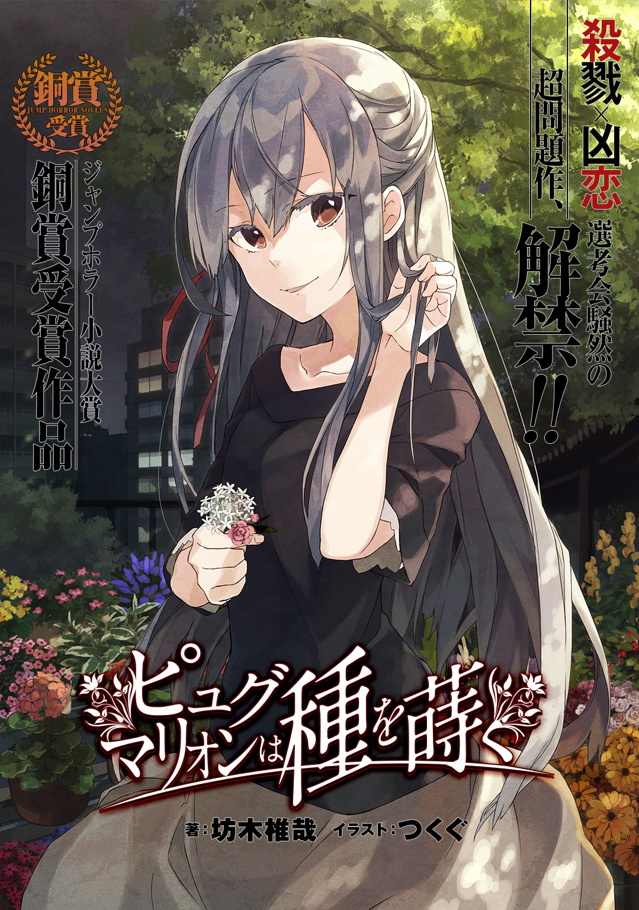
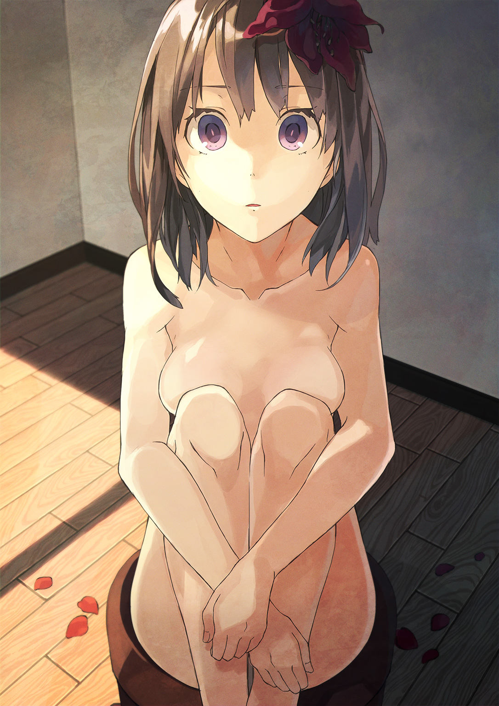

| ピュグマリオンは種を蒔く | |
| 坊木椎哉 | |

この本は縦書きでレイアウトされています。
また、ご覧になる機種により、表示の差が認められることがあります。
坊木椎哉
赤紫色の花は、斜照の中で静かに萎れていた。
彼女は鉢に盛られた土の上に膝を抱えたまま、澄んだ瞳で虚空を見つめている。
僕はそっと彼女の傍らに屈み込み、大理石のように滑らかな裸の肌をさする。掌にほんのり伝わる体温は、既に目覚める準備ができているから起こしてほしいと、彼女が訴えている表れのように思えた。
もう少ししたら完全に日は没し、この部屋はどっぷりと夜の闇に沈んでしまう。
闇が夕暮れを追い出す前に、僕は行動しなければいけない。さもないと、夜の眷属がまたぞろ彼女を連れ去ってしまうから。
僕はダガーナイフを手に取り、刃先を彼女の足の裏へ慎重に差し入れて、根を切る。
根は見た目に反して、細く紡いだ絹糸のように柔らかで、刃先に何の感触も伝えない。
軛から解き放たれた彼女はまだ、虚ろに視線を彷徨わせている。
五分、十分、二十分。
僕はサーカスの開演に胸を躍らせる幼子のように、彼女が喋り出すのを固唾を呑んでじっと待ち続けた。
しかし、彼女は精巧な彫像のように緘黙を保っている。彼女を繋ぎ止める根は既に無いというのに、彼女は立ち上がる素振りすら見せず、感情を伴わない眼差しをまっすぐ前に向けたままだ。
僕は歯噛みする。
（どうしてだ）
また駄目だった。何度やっても駄目だ。
（どうしてなんだ）
どこで間違っていたのか、何が足りなかったのか。その端緒すら掴めない。
僕が持てる時間も、労力も、全て彼女に注ぎ込んだというのに。
「どうしてなんだよっ！」
湧き上がった苛立ちが絶叫となって口から迸ったが、彼女は驚く素振りすら見せない。
雲に乗っているような足元の頼り無さを覚えながらも立ち上がり、彼女を見下ろす。
喉はからからに渇き、眼の奥がじんじんと痛む。
手の感覚はどこかへ消え去ってしまっている。
この家中に満ち溢れているはずの臭いも、今は感じない。
人はここを地獄と呼ぶだろう。
人は僕を鬼と呼ぶことだろう。
いや、僕は鬼ではない。
賽の河原で石を積む幼子なのだ。僕が苦心して積み上げた石を、鬼は無慈悲に崩してしまう。一再ならず、繰り返しで。
憐れで滑稽で救いのない愁嘆場を、僕は演じ続けている。
それでも僕はまた石を積まなければいけない。いずれこの鬼哭啾啾とした荒野から、彼女が僕を連れだしてくれると信じながら、愚直に積み続けなければならないのだ。
唯一つ、それが僕に出来ることだから。
僕は真っ直ぐに伸びた彼女の首筋にそっとナイフの刃を当て、一息に引いた。
薄闇が忍びこんだ部屋に、真新しい血の筋が舞った。
卒業式を想起させる花といえば真っ先に桜が挙がるだろうが、僕が住む街の桜はどうにも野暮ったく、薄桃色の花弁は蕾の中に仕舞われたままだ。だから僕の中では、卒業式といえば桜ではなく、ちょうど見頃を迎えた梅の花のイメージが強い。
それでも卒業する生徒は何の花が咲いていようが一向にお構いなしで、校舎の前庭に屯して通い慣れた校舎と気心知れた仲間たちとの別れを惜しんでいる。
「卒業かあ。あっという間だったな、三年間」
同じクラスの伊勢崎アキラが、春の日差しを受けて白く輝く校舎を感慨深げに見上げていた。彼は年明け前に早々と私立大学への進学を決めており、その横顔は綽々と高校生活の最後の余韻を楽しんでいる風にも見える。前期日程試験にことごとく落ち、後期試験の結果を戦々恐々と待つ僕とは雲泥の差だ。
「ほんと、拍子抜けするくらい何もなく、あっという間だったなあ」
僕の呟きは喧騒に掻き消され、誰の耳にも届いていないようだった。
数名の女子生徒が、教室内で回された寄せ書きを担任に手渡しているのが目に止まった。その色紙には僕の、豆崎空也の名前は無い。どんな言葉を寄せていいか見当も付かず、ただ「お世話になりました。お元気で」とだけ書き殴られた面白みの欠片もない言葉に、自分の名前を添えるのはどうにも決まりが悪かったからだ。
「みんな集まってー。写真撮るよー」
カメラ代わりのスマートフォンを片手に声を張っているのは、こちらも同じクラスの入瀬ミサキだ。彼女の芸能人はだしの容姿と天真爛漫な性格に、ハートを射抜かれた男子生徒の数は十指に余るどころではない。だがそのことごとくが、伊勢崎が彼氏の座に三年間居座るという現実の前にあえなく轟沈したのである。
「伊勢崎と入瀬は真ん中に座って。ああ、全体的にもうちょい寄って」
撮影役を買って出た男子生徒の誘導で、数十人の人垣がぎゅっと凝縮する。押し合いへし合いに紛れて、僕はちゃっかり伊勢崎とミサキの真後ろを確保した。
思い返せば、伊勢崎とミサキとは三年間同じクラスだった。つまり、彼らの仲睦まじい様子を、毎日見せつけられたということになる。ミサキも地元の大学に合格したと聞く。彼ら二人の関係がこの先も続くことは、誰の目にも明らかだ。
「いいかー、撮るぞー」
シャッターが押される刹那、ふわりと渡った春風が、ミサキの髪の匂いを僕の鼻孔へ届けてくれた。
そのせいか、写真に収まった僕の顔には、半分引き締り半分緩んだみっともない表情が張り付いていた。
十八歳の春、青春の一コマ。
式の数日後、僕は大学への切符を掴み損ね、浪人となることが確定した。
父と母は、僕が小学六年の秋に離婚した。原因は聞かされていない。
家を出たのは、僕と母のほうだった。以来、母が鬼籍に入るまでの二年間を母子二人だけで過ごした。父とはもう六年以上顔を合わせていない。
母亡き後、一緒に暮らすことを提案したのは、父の弟に当たる叔父の春人さんだった。
そして現在、僕は春人さんと一つ屋根の下で寝起きしている。母が不帰となった事を知ってか知らずか、父からは毎月欠かさず、五万円の養育費が僕名義の口座に振り込まれている。その金は、家賃代わりに春人さんへ全額そっくり渡している。
春人さんは予備校通いを勧めたが、僕はそれを固辞して自宅浪人の道を選んだ。夏や冬の集中講座や模擬試験も合算すれば、かなりの金額が飛んでいってしまうからだ。
「ガキが余計な気を回してんじゃねえよ。金なら俺が何とかすっから、予備校行け」
有り難い言葉ではあったが、好意に甘え年間数十万円もの大金を出してもらうのは、やはり気が引ける。すったもんだの話し合いの末、折れたのは春人さんだった。
かくして、僕の自宅浪人生活が始まった。
僕は勉強の場を、市立の図書館に求めた。家に篭ったきりでは気が滅入ってしまう。外界に触れるのは勉強の能率向上よりも、心の換気が目的だ。
図書館は電車で三駅分離れた、市街の中心部にある。雑踏を縫うように歩いていると、早足でせわしく通り過ぎて行くビジネスマンや、賑々しく談笑しながら闊歩する若者たちの生気に満ち溢れた顔を、否が応でも目にすることになる。群衆に取り紛れることを何でもない風に装うまでに、ひどく苦労した。
朝九時に家を出て、開館から日没まで図書館で勉強に打ち込み、どぎつい誘惑と欲望がむき出しになった夜の街を抜けて電車に乗り込み家へ帰る。
僕の日常はひたすらその繰り返しだ。
起伏に乏しい扁平な生活を送っていた僕が、ミサキと再会したのは全くの偶然だった。
九州で梅雨入りが宣言された日の夜、たまには違う道から駅へ向かおうと思い付き、僕は人通りの少ない道を選んで歩いていた。
ビルの谷間に飲み込まれそうな小さな公園に差し掛かると、入口付近の街灯の下で、花売りの露店が開かれているのが目に止まった。簡素な作りのフラワースタンドには鉢植えが、円筒形のカートには切り花が陳列され、無機質な街角に華やかな彩りを添えている。
――夜に、花の露店売り？
妙な取り合わせに興味をそそられて凝らした目が、しゃがんで花を品定めしている露店の客に釘付けとなった。
ミサキだった。
彼女の私服姿を目にするのは初めてだったが、三年間同じ教室で彼女の姿を見ていたのだ、見紛うはずがない。卒業からたったの二ヶ月しか経っていなかったが、ミサキは大人びた装いが似合う美しい女性に変貌していた。
ミサキに応対しているのは、黒いサマーニット姿の少女だった。親に店番を任されているのだろうか。線が細いその姿は、せいぜい中学生くらいにしか見えなかった。
少女が、つい、と僕へ顔を向けた。
僕の目を引いたのは、色鮮やかに咲き誇る花に囲まれても埋没しない、少女の神秘的な美しさだった。誰にも踏み荒らされていない新雪のような白い肌、黒目がちの物憂げで大きな瞳。すっと通った鼻筋は、瑞々しい蕾にも似た唇に続いている。ミサキとはタイプこそ異なるが、掛け値なしの美少女だ。ミサキが陽光の下で艶やかに咲き誇るダリアなら、少女は月光を浴びてひっそり花冠を開き、暁光を待たずに儚く散る月下美人だ。
しかし同時に、あまりに完璧な少女の容貌に、名状しがたい薄ら寒さをも感じていた。写実派の画家が心血を注いで描き上げた幻想画から抜け出してきたような、非現実的な美だ。それほどまでに、彼女の面貌は整いすぎていた。
「何かご用かしら？」
小さな真鍮の鈴を鳴らしたように細く、しかし耳にいつまでも余韻を残す声だった。
彼女の言葉が僕に掛けられたと気付くまでに、少々時間が掛かった。不審がられて当然だろう。ミサキに何と声を掛けてよいものかと、とつおいつしながら阿呆のごとく佇立していたのだから。
「あれ、豆崎くんじゃない」
ミサキが顔を上げた。元からくっきりした彼女の目鼻立ちを、薄いメイクが際立たせている。
「ああ、いや、通りかかったから、見慣れた姿があったから」
どぎまぎしながらも、精一杯の笑顔を作った。
「豆崎くんは何かの用事の帰り？」
「うん、ちょっと図書館に行って勉強してて」
ミサキに対して体裁を取り繕うのがあまり意味のない行為だとは知りながらも、浪人の身であることを曖昧にぼかした。
矯飾した僕の言葉をミサキは探る素振りすら見せずに、ふうん、とだけ答え、鉢植えが入ったビニール袋を掴んで立ち上がった。
「ゆっくり話がしたいけど、あたし用事があるから。また今度ね」
小さく手を振って立ち去ったミサキの背中を視線で追いながら、さてこれからどうしたものかと思案した。花を買うつもりは最初から無い。たまたま見知った顔があったから立ち寄っただけだ。
「貴方、彼女とは知り合い？」
適当な理由をつけて立ち去ろう、と思い立った矢先に少女が問い掛けてきたので、無視するわけにもいかなくなった。
「高校の時の、同じクラスの子なんだ。彼女はここによく来るの？」
「ええ、去年からよく来てくれる常連さん。うちの店って、花を買う気もない無いくせに私に声を掛けてくるだけの人が多いから、彼女のようなお客さんは貴重なのよ」
むべなるかな、少女の器量を考えれば冷やかしが多いのも納得だ。花は花でも、物言う花に惹かれるのは男の性なのだから。
などと考えながら値札を見て、仰天した。どれもべらぼうに高い。
「買う気が無いんじゃなくて、買う気が無くなった、の間違いじゃないかな？」
「こんな暴利な値段でも、買ってくれる人はいるのよ。一杯機嫌で財布の紐が緩くなった酔客とか、結婚記念日を忘れていて家の敷居が高くなった午前帰りのサラリーマンとかがね。相場よりも高い値段でも、納得づくならお金を払ってくれるわ」
年頃の少女特有のあどけなさとはかけ離れた、老成した考え方と口振りが、初見で彼女に抱いたミステリアスな印象をより際立たせている。純情可憐な外見にそぐわず世間ずれしているのは、こんな場所でこんな時間帯に有象無象の客を相手にしているからだろうか。
元より花を買う気は無いのに、これ以上居座っていたら仕事の邪魔になると思い、適当に言葉を濁してその場を辞した。
「引き取ってほしい花があったら教えてちょうだい。悪いようにはしないわ」
――花屋が客から、花を買い取る？
去り際に少女が発した謎めいた言葉を耳たぶにぶら下げ、僕は駅へと向かった。
帰り際の電車の中でふと、高校の頃に小耳に挟んだ噂話を思い出す。
街角の花売りの少女の噂。
人形のように美しい少女が夜の街角に現れ、通りすがりの人々へ花を売る。
彼女の店は、夜に開かれるということ以外、どれくらいの間隔で、どこに出現するか誰も分からない。
滅多なことではお目にかかれない神出鬼没ぶりゆえに、彼女の姿を見た者には幸運が訪れる。
いかにも思春期の少年少女が好みそうな、他愛もないジンクスだが、実際に彼女と遭遇したという声は、高校を卒業するまでただの一度も聞かなかった。
「幸せを運ぶ花売りの少女、ねえ」
あの少女が、その噂の花売りなのだろうか。
もしかすると、そうなのかもしれないな、と思う。
脳裏に浮かんだ少女の顔に、ミサキの顔が重なる。
つい先刻目にした大人のミサキではなく、まだあどけない少女の名残を残した高校時代のミサキの顔を。
夕暮れに染まる校舎の影。
破裂しそうな心臓。
思いの丈をぶつける僕。
告白を受けて、戸惑い混じりの曖昧な笑顔を返す彼女。
「気持ちは嬉しいけど、そういう目で豆崎くんを見たことがないから」
彼女の返答を聞いて、僕は自分の恋が破れたことを悟った。
高校一年の秋、黄昏色の甘酸っぱい思い出。
伊勢崎とミサキが付き合っていることを知ったのは、それから少し先の話だ。
電車で十五分、三駅ぶん移動しただけで、街並みは随分と寂しくなる。
新市街地が開発されるまで、この辺りが中心街だったことは知っているが、往時の痕跡はほとんど見当たらない。つい先刻までいた中心街の喧騒が、遠い世界のようだ。
自宅に近づくにつれ、ナイロンのトートバッグを提げた白粉臭い女性の姿がちらほら目立つ。これから出勤なのだろう。彼女たちの歩に合わせて、スキニーのジーンズに包まれた尻の肉が、煽情的なダンスを踊る。
酒屋の前に置かれた長床几では、赤ら顔の老人が仰向けになって高鼾をかいている。地面に転がるワンカップの空き瓶の数が、老人の酒量の多さを物語っていた。昼間から酒を食らう楽隠居の姿は、この街では珍しくはない。
僕の家は、花柳街、すなわち春を売る女性が闊歩する淫靡な雰囲気が漂う地区にある。
かつては全国でも五指に入る規模の三業地として栄え、好色家たちの聖地と謳われた場所であるが、今は乙女の恥じらいなどとうに捨てたはすっぱな女と、酒息を吐き出す下卑た底抜け親爺ばかりが目立つ、時代の流れに取り残されたくたびれた街でしかない。
軒を連ねた色茶屋の窓には、煌々と灯りが並ぶ。
半分だけ引き戸を開けられた戸口越しに、三和土に行儀よく正座する着飾った「花」の姿が目に入る。
「昨日入ったばかりの子。大人しそうに見えるけど、脱いだらすごいよ。一万八千円」
足を止めて店を覗きこんだ見込み客に、花の隣に控えていた初老の女性が売り込みを掛けている。花は自分から声を掛けない。彼女たちの艶やかな姿態に魅入られた男が、財布の紐を緩めながら暖簾をくぐるのを、手ぐすね引いて待っているのだ。
街には、色を求める男たちが連夜、誘蛾灯に群がる夏虫のごとく繰り込んでくる。
踏ん切りがつかないのか同じ路地を何度も行きつ戻りつする者、顔見知りのやり手ババアと親しげに挨拶を交わす者、手符牒を交えて値切り交渉を行う者、正体もなくなるほど泥酔して入店を断られる者。街のあちこちで、多彩な人間模様が繰り広げられ、毎夜飽くことなく淫靡な花が咲き乱れている。
通い慣れた道ではあるが、場違いな場所に足を踏み入れたような居心地の悪さがいつもつきまとう。二十歳前の若者の社会勉強にしては、いささか刺激が強すぎる環境だ。
目抜き通りを抜けた先、アーケード街の少し手前に、何十年も昔に店を畳んだ古い置屋がひっそりと建っている。改築することなく、昔を偲ばせる俗趣をそっくり残したこの建造物こそが僕の家、正確には春人さんの持ち家だ。
「ただいま」
玄関で靴を脱いでいると、年齢を感じさせない若々しく精悍な顔が、曲がり階段から足音と共に現れて僕を出迎えた。
「おう、おかえり。遅かったな」
「ちょっと寄り道。春人さんは早い帰宅だね」
「くそ、あの親爺。俺が出発する前に連絡しろってんだ。こちとら、旅費が会社から支給される身分じゃねえんだぞ」
春人さんはフリーライターという仕事柄、取材で家を空ける時が多い。つい四日前にも「三週間ほど留守にする」と言い残して北陸へ赴いたばかりなのだが、どうやら情報提供者にドタキャンされたようだ。
「飯はこれから作るから、ちょっと部屋で待ってろ」
我が家では、食事の支度は春人さんの役割だ。居候が心苦しく、一度僕が料理番を申し出てみたが、試作品を一口食べた春人さんの表情が苦々しげに歪んだので、それ以来僕がキッチンに立つことはなかった。
春人さんの料理が食べられることに、僕は安堵を覚えた。何しろ、春人さんから依頼されて食事を作りに来たユリナと名乗る女性は、料理どころか包丁捌きすら覚束なかったのだから。米を中性洗剤で洗う人物を、僕は初めて目にした。
階段を上がり、僕は自室へと向かった。
二階は、廊下に面した四つの部屋がひと並びになっている構造だ。そのうち手前の二部屋は春人さんが壁をぶち抜いて、書斎兼仕事場として利用している。その隣が春人さんの寝室で、二階の一番奥にあるのが僕にあてがわれた部屋だ。
かつては娼婦たちが客と仮初めの睦み合いをしていた場所だけに、様々な想念が染み付いているような不気味さは漂うものの、それさえ頭から追い出してしまえば、ただの古臭い木造家屋でしかない。
鞄を床に置き、ベッドへと倒れこむ。
ミサキと会って緊張していたのだろうか、やけに疲れを感じる。
どろりとした睡魔にすっぽり包まれ、僕は他愛もなく眠りの世界に引きこまれた。
僕は夢を見ていた。
中学生を卒業する頃まで、繰り返し見ていた夢だ。
僕は暗い道を、母に手を引かれて歩いている。
母は首の曲げ方を忘れたように真っ直ぐ前を見つめ、僕へ顔を向けようとしない。
母の顔を見たくて、周囲を衛星のようにぐるぐると回るが、どういう仕儀か、母の顔はどの角度からも拝むことができない。
どこへ行くの？
不安に取り憑かれて発した僕の問い掛けに、母は答えない。
何かに急き立てられるような忙しない足取りで、ひたすらに闇の中を歩き続ける。
その歩調が早くなり、僕はどうにかついていくのが精一杯だった。
はぐれないようにしなければ。
この暗闇の中に、置き去られないようにしなくては。
ただその一心で、母の背中を追いかける。
出し抜けに道の前方から、一条の光が差し込んだ。
母はもう全力疾走に近い速さで、一散に駆けている。
待って、母さん。行かないで。
僕は光の奔流に向かって、必死に手を伸ばした。
「おーい、飯できたぞー」
階下から春人さんが呼ばわる声で、現実に引き戻された。夢から地続きのように、腕を天井に向かって伸ばした体勢になっていた。
部屋に入ってから、十分と経っていなかった。
キッチンへ向かうと、既に夕餉の支度が整っていた。テーブルの中央を、この日の夕飯の主役である回鍋肉がてんこ盛りになった大皿が占めている。にんにく油を使って強火で炒めたキャベツと肉に辛味噌ダレを絡めた、春人さんの得意料理の一つだ。
豆崎家の夕飯には、ほとんど例外なく肉が使われている。家の冷蔵庫には塊肉が売るほど蓄えられている。本職の肉屋でもあるまいし、一般家庭でこれだけの肉が貯蔵されているのは、我が家くらいなものだろう。
「肉を食いたいっつう欲求は、太古から引き継がれてきた人間の本能なんだ」
春人さんはそう語る。
「昔の人間は肉をがんがん食って、現代人よりも骨太で頑強な肉体を手に入れていたんだ。肉食から穀食中心に食生活をシフトチェンジしたのは、単にコスト効率の問題だ。人体の都合とは関係ねえんだよ。それなら、肉体的にも精神的にも、肉を食いたいと思ったら食っちまうのが健全ってもんだ」
穿ち過ぎかもしれないが、春人さんは僕を慮って肉食中心の献立を組み立ててくれているように思える。僕の体は同年代の男子に比べると格段に小柄で、男性的な逞しさは欠片もない。童顔であることも手伝って、繁華街を歩いている時に職務質問を受けることもしばしばだ。
回鍋肉を平らげて、僕は自室へ戻った。
机の上に参考書を広げたものの、ミサキの化粧顔が自然と脳裏に湧き上がり、その晩に限っては勉強があまり手に付かなかった。
ミサキが行方不明になった。
コミュニケーションアプリに飛び込んできた衝撃的な一報に接したのは、彼女と再会してから一週間が経った日の昼下がりだった。
発言主は伊勢崎だった。
元同級生たちの発言で埋め尽くされたログを辿ると、ミサキとは三日前から連絡がつかないらしい。
ミサキの両親は揃って海外へ赴任しており、年に一度しか帰国しない。親が手配した家政婦を断ったとも聞く。実質的に彼女は一人暮らしの身だ。「滅多に連絡もしてこないから、かえって気が楽」とミサキは笑いながら言っていたが、そのネグレクト一歩手前の自由放任が完全に仇となる形だった。警察に捜索を依頼しようにも、申請者が恋人では捜索願は受理されない。
伊勢崎は大学の講義もそっちのけで、ミサキの捜索に時間を費やしているらしい。単位のことなど、ミサキのことで一杯になった彼の頭の中からは、ところてんのように押し出されてしまっているのだろう。
「どんな些細な情報でも構わない。知っていたら教えてくれ」
伊勢崎が発した悲痛で切羽詰まったメッセージには、多くの同情が寄せられていた。中には、探偵気取りで推論を展開するやつもいたが、不謹慎だとか自重しろだとか、皆が一斉に非を鳴らしていた。だが、つい数カ月前まで机を並べていた元クラスメートの失踪というセンセーショナルな事件に触れたのである。不謹慎なのは確かだが、推理をぶちあげたくなるものまた詮無いことだ。
一連のやり取りを眺めるうち、ある思いが僕の心にふつふつと芽生えてきた。
ミサキを探し出したい。
仮にミサキが何かしらの事件に巻き込まれて拐かされているとした場合、僕が彼女を無事に救出したら、もしかすると彼女は伊勢崎ではなく僕に鞍替えするのではないか。
何ら根拠も担保もない、人が聞いたら一笑に付されそうな淡い妄想だが、失恋を経てなお僕の中から消えずに燻り続けているミサキへの恋慕は、消しようがなかった。
翌日から、自宅と図書館を往復するだけだった平坦な僕の生活に、ミサキを探すという丘陵が加わった。受験勉強を早めに切り上げ、情報を求めて街を巡る。それは英雄症候群にも似た自己満足のための行動だった。
むろん、伊勢崎への憐憫を抱かないでもない。だが一方で、彼のことを心底可哀想だとは思っていない。自分にもまだほんの少しながらチャンスが残っている、とは思ったが。
そんな暗い意気込みとは裏腹に、ミサキの消息を掴むことは叶わなかった。無理からぬ話だ。金も人脈も無い浪人生が探れる範囲など、高が知れている。そもそも、ミサキがどこに行きそうなのかも皆目見当が付かない。
伊勢崎の進捗状況も毎日まめにチェックを入れているが、彼も手がかりを掴みかねている様子で、文面から彼の焦燥が手に取るように伝わってくる。海外にいるミサキの両親とも、まだ連絡が取れないでいるらしい。
ミサキの行方は杳として知れないまま、一週間が経った。
伊勢崎の懸命の捜索はなおも続いている。僕もまた伊勢崎と同様に諦め悪く、ミサキの姿を探して街をあてどなく彷徨い、失望と疲労を胸にどっしり抱きながら家路をたどる日々を無為に繰り返していた。
「あれえ？ 空也だ空也だ」
いつものように捜索が空振りに終わり、古ぼけた街灯が喘ぐように弱々しい光を落とす路地をとぼとぼと歩いていると、オフショルダーのボーダーカットソーをだらしなく着た妙齢の女性に声を掛けられた。実際のところ、彼女はロリポップキャンディを頬張っていたので「ふうやだ、ふうやだ」と聞こえた。
「高校生がこんな時間に何してんの？ あれ、空也って高校生？ 中学生だっけ？」
「何度も言ってるけど、もう高校は卒業したんだってば。サリさんこそ何してるの？」
「セーリが近いからお休みもらったんだけど、それ忘れてて出勤しちゃった」
サリは締りのない顔で、幼女のようにへらへらと笑う。
彼女は春を売る女だ。ルックスは悪くはないが、頭の出来があまりよろしくなく、言われたことを数歩歩くと忘れてしまう鶏並みの記憶力しか持たない。ただし、人の名前と顔に関しては例外であり、殊に肌を合わせた相手を憶えることにかけては右に出るものはなく、その人の発した何気ない一言まで一字一句違わずそらんじてみせるほどだ。
「そうだ、サリさん、この顔に見覚えない？ 僕の元同級生なんだけど」
僕はスマートフォンでミサキを撮影した画像を呼び出し、サリに見せた。
サリは首を傾げながら画面を凝視していたが、「分かんない。見たことなーい」と、ばっさり切り捨てた。彼女の記憶に無いということは、ミサキがこの近辺にいない事が確実である事を意味する。
「ごめんね空也、何だか知らないけど力になれなかったみたいで。飴食べる？」
唾液でべっとり濡れたキャンディを差し出されたが、やんわり押し戻した。
「気持ちだけ貰っておくよ、ありがとう。気落ちしてないから大丈夫」
「そっか。何があったか知らないけど、元気出しな。あたしが慰めてあげようか？」
彼女の職業柄、「慰める」という単語の響きがやけに生々しい。
僕はのらりくらりと返事をしてその場を離れた。視線を感じて振り向くと、サリは大きく手を振りながら見送っていた。恐らく彼女の頭の中にはもう、僕がミサキの写真を見せたことなど、欠片も残っていないだろう。
サリが僕に対して心を許しているのは明白だ。友人としての親愛ではなく、一人の男に寄せる情愛であることも、薄々とは感じている。だが僕は、サリの想いにわざと気付かないふりを装っている。ミサキに操を立てるわけでもないが、彼女以外の女性と深く心を通わす気にはなれない。
自分に想いを寄せる女性と、自分をかつて振った女性。
どちらの温もりを求めるのが、僕にとっての正解なのだろう。
重く肩にのしかかる疲労感が、なお一層の重さを増した。
家に帰ると、春人さんがちょうど夕飯の支度をしているところだった。
「ここのところ、遅えな」
「閉館ギリギリまで勉強することにしたんだ。普通にやってたんじゃ、追っ付かないと思ってさ」
どこか探るような春人さんの言葉に、極力平静を装って誤魔化す。
春人さんには、ミサキを探していることは伏せている。浪人生の分際で探偵ごっこにかまけている暇があるのかお前には、などと小言を食うのが目に見えているからだ。
その日の夕飯は肉野菜炒めだった。塩コショウだけのシンプルな味付けながらも、ご飯が進む一品だ。
「勉強に精を出すのはいいが、あんま遅くなるなよ。皮ハギババアに皮膚をひん剥かれても知らねえぞ」
「皮ハギババアって何？」
「ここいらの子ども達の間で流行ってる都市伝説だ。夜になると包丁を持った皮ハギババアが現れて、子どもをとっ捕まえて皮を剥ぐんだと」
実話系雑誌やゴシップ誌の仕事が多いためか、春人さんは人の噂や社会の裏事情に明るい。若い時分には、幾度となく危険な局面に遭遇したこともあるという。
それにしても、生皮を剥ぐ老婆とは。
物騒ではあるが、やけに草深く時代がかったディテールだ。
「どこからそんな発想が湧くんだろうね。鬼婆みたいに人の皮を剥ぐなんて、今時の子ども達が思いつくようなことなのかな」
「噂や都市伝説には、たいていは何かしらの下敷きが存在するからな。有名な口裂け女にしても、元ネタらしき話はちゃんとあるんだぜ。皮ハギババアの話は、三年前に隣の市で起きた猟奇殺人事件がベースなんじゃねえかな」
「三年前の事件、て？」
「山の中で子どもの死体が見つかった事件。テレビでも取り上げられたし、ここらでも騒ぎになっただろ。社会現象に発展するとは考えにくいが、門限を守らせる方便としては役立ってるみてえだな」
そういえばそんな事件もあったな、と思い返す。
児童養護施設に入所していた当時五歳の男の子が、保育士が目を離したほんの数分の間に行方知れずになり、数日後に左腕が切り取られ背中の皮が剥がされた無残な遺体となって発見された事件だ。その猟奇性から世間の耳目を大いに集めたが、犯人逮捕が報じられぬまま三年が経ち、大衆の記憶から事件は風化しつつある。
「都市伝説ってのは、現実を題材にした二次創作なんだよ。実在の事件やニュースの真相をこね回して飾り付けて、筋書きをでっち上げてやれば現代版おとぎ話の一丁上がり、てわけだ。一から十まで法螺ってわけじゃねえから、真実味があって質が悪い。特に思い込みが激しくて、自意識が高い奴ほどころっと騙されちまう。お前みたいな奴がな」
「ふぁっ？」
口からキャベツを噴き出しそうになる。
「僕、そんなに思い込みが激しいかな」
「これと決めたら頑として信じこんで、他人からどんなに言われようが曲げようとしねえだろ、お前。良くも悪くも猪突猛進つうこった。他人の意見に流されねえっていえば聞こえはいいが、間違った方向に突っ走っても間違えてるって認めようとしねえから、崖から落っこちるまで走り続けちまう。危ういんだよ、見てて」
いつの間にやら、説教じみた方向に話が流れてしまっている。こうなると春人さんは止まらなくなる。春人さんの言葉を遮るようにして、話頭を転じた。
「ところでさ、都市伝説のバリエーションってどんなものがあるの？」
「ん？ どんなのって言われても、都市伝説のバリエーションは、興味と想像力の掛け算だからなあ」
どうにか話題を逸らすことができたようだ。
「モチーフが変わるだけで、話のパターンはだいたい似通ってるからな。興味をそそるならモチーフは何だっていいんだ。夜のタクシーだろうと、迷宮入りの殺人事件だろうと、世界中で食されるファストフードだろうと、誰もが知ってる有名アニメだろうと、立入禁止の炭鉱跡だろうと、冬の街角でマッチを売る少女だろうと」
マッチを売る少女！
春人さんの言葉を受け、雷霆のごとく頭の中で閃くものがあった。
あった。ミサキに通じていそうな手掛かりが。
街角に立つ、物売りの少女。
もっとも、彼女が売っていたのはマッチではなく花だったが。
むしろ、なぜ今まであの少女の存在を忘れていたのかが不思議なくらいだ。
二人は互いに顔見知りだ。もしかするとミサキの消息について、何かしらの心当たりがあるかもしれない。
僕は食事を手早く済ませ、「友達に参考書を借りてくる」と言い残して家を飛び出した。出際に春人さんが「そんなもん、明日でいいだろうに」とぼやく声が追いかけてきたが、聞こえないふりをした。
繁華街に到着した頃には、時計の針は九時半を指していた。
巡回の警官に見つかりませんように、と祈りながら、僕は夜の街を駆けずり回った。
神出鬼没の花屋を見付けるのは、砂浜に落とした芥子粒を探し出すのと同じくらい難事に思えたが、僕にできる事は他に思い付かなかった。
記憶の中にある店の規模から、目抜き通りの歩道にはまず出店しないと踏んで、広場や公園などの十分なスペースを確保できる場所を中心に捜索した。
空は時折ごろごろと唸り、黒黒とした雨雲が星や月をすっぽり隠していた。天気予報が、夜半すぎから雨になると告げていたのを思い出す。歩き通しで足の裏がじんじんと痛む。少女が街にいるのかすら定かではないが、それでも早く見つけなければと気ばかり急いた。
路地裏にひっそりと隠れるようにして開かれた花売りの露店を発見したのは、あと二十分で日付が変わろうとしている時分だった。客の姿は無く、暇を持て余していたのか、少女は街灯の明かりを頼りにして文庫本を読んでいた。
ようやく辿り着いたオアシスに歓喜する旅人のごとく、僕は彼女に駆け寄った。
「あら貴方、この間の。どうしたの、血相を変えて」
「君を探していたんだ」
本から顔を上げてきょとんとする少女に、息を整える間も惜しんで畳み掛けるように話し込んだ。
「この間一緒にいた女の子、入瀬ミサキが行方不明になった。消息が分からなくなって、もう二週間近くが経っている。書き置きすら残していないし、連絡も付かない。毎日、僕も彼女の彼氏も懸命に捜しているけど、何の手掛かりも掴めていない状況なんだ」
「それで、どうして私に？」
「君はミサキと面識がある。もしかして君なら、と思ってずっと探し続けた。君が最後の頼みの綱なんだ。ミサキの行き先に心当たりがあったら、教えてくれないか？」
「随分と友達思いね。だけど、人探しは警察に任せればいいじゃない」
「彼女は両親と離れて暮らしている。友人じゃ捜索願は受理されない。かと言って、僕一人が動いたところで解決するとは思えない。だけど、ミサキが何か事件にでも巻き込まれたら、と考えると気が気じゃない。じっとしていられないんだ」
「随分と熱心なのね。それは本当に、友情なのかしら？」
彼女のからかうような口吻が胸に突き刺さる。
心の奥底に縫い止めたままのミサキへの想いを見透かされた気がして、返答に詰まった。
少女はしばし面白い見世物を見るように僕の顔を眺めていたが、花がそっと咲くようにやおら立ち上がった。
「雨ね」
少女の言葉に導かれたかのように、雨粒が頬に落ちた。
「今日は店仕舞いね。客足も無かったし、丁度いいわ」
少女は路肩に停めてあったレトロ調のワンボックスカーに、花を積み込み始めた。
雨が本降りになる前に、花の積み込み作業はつつがなく終わり、少女は軽やかな足取りで運転席へ滑り込んだ。そこに座るのが当たり前という風に。
「これから一緒に、私の店に来て。そこで詳しく話すわ」
ほんの数十分まで乾いていたアスファルトは、雨に濡れて黒く光沢を湛えていた。
篠突く雨の中を泳ぐようにして、僕たちを乗せたワンボックスカーは夜道を走る。
発車して間もなく、互いに名乗るだけの簡単な自己紹介を交わしたが、それきり会話には発展しなかった。
驚いたのは、陣賀エリサと名乗った少女が、花の露店を独りで切り盛りする店主だったことと、彼女が運転免許を所持していたことだった。
ローティーンにしか見えない彼女が、僕と同年代かあるいは年嵩であったことは予想外だったが、同時に彼女の落ち着いた物言いにも合点がいった。
「嫌な雨ね。いつになったら梅雨があけるのかしら」
陣賀エリサが口を開いたのは、市街地から工業地を経て、郊外へと延びる幹線道路に出た頃だった。彼女の声は針のように細かったが、車体を打つ雨の音にも掻き消されずに、明瞭な輪郭を保ったまま僕の耳に届いた。
「あの、これからどこへ向かう......んですか？」
「貴方ってあの子、入瀬ミサキって子と同い年なんでしょ？」
「はい、そうですが」
「それなら、もっと砕けた話し方でいいわ。こんな幼い姿形の女相手に敬語を使うのは抵抗があるでしょう？ かしこまる必要はないわ」
「それで陣賀さんは――」
「エリサでいいわ。さん付けも無し。言ったばかりでしょ、かしこまらなくていいって」
頭を掻き、改めて話を切り出した。敬語を使わないように意識しながら。
「エリサは、ミサキの居場所を知ってるの？」
「どうしてそう思う？」
「さっき、知らないって言わなかったから」
「ご明察よ。私、郊外で小さな花屋を営んでいてね。彼女は私の店にいるわ」
エリサの唐突な発言に、胸を強く突かれた。
ようやく、ミサキの居所が掴めた。そればかりか、今まさにミサキがいる場所に向かおうとしている。僕は逸る気持ちを抑えつつ、エリサに訊ねた。
「彼女は、ミサキは無事なの？」
「まるで誘拐犯に人質の安否を訊いているような口振りね」
「気を悪くしたらごめん。居なくなってから長いから、心配だったんだ」
「大丈夫よ。彼女はちゃんと私が預かっているから。家に帰られるかどうかは貴方次第だけど」
「僕次第って、どういう意味？」
エリサの言葉尻に不穏な響きを感じ取り、僕は問い質してみたが、彼女はそれには答えずに謎めく微笑みをのぞかせた。
彼女の腹の中を探ろうと、あれこれ思惟する。
ミサキがエリサの店にいるという言質は取れた。だが、それを全面的に信用するのは危険に思える。ミサキの情報を餌に、良からぬことに僕を引き摺り込もうという魂胆なのかもしれない。
拉致監禁、営利誘拐、犯罪の片棒担ぎ。あるいは、快楽目的で僕を殺す、とか。ネガティヴな想像ばかりが、頭の中で渦を巻く。誘われるがまま、ほいほいと車に乗り込んだ自分の軽率さが腹立たしいばかりだ。
他愛のない世間話すらほとんど交わさないまま、雨の中を三十分。辿り着いたのは、広葉樹の林に抱かれるように建つ、小ぢんまりとした瀟洒な西洋建築様式の建物だった。
「私の店よ」
横付けした車から降りると、ドアベルの軽やかな音を振りまきながら正面扉が開く。群青と白を取り合わせたメイド服姿の若い女性が、僕らを出迎えてくれた。
「おかえりなさいませ、お嬢様。ひどい雨でしたけど、ご無事で何よりです」
「お嬢様？」
「昔からそう呼ばれている。ただそれだけよ」
春の柔らかな日差しに似た印象を漂わすメイドからタオルを受け取り、髪と服の水気を拭き取る。木々の枝葉を打つ雨の勢いは、幾分弱くなっていた。
「彼女はカナデ。昔から父に仕えていて、今は私の店で働いているの。私は愛想が無くて客あしらいは苦手だから、実質的な店長は彼女なの」
「店長だなんて、照れちゃいますよ。私はただ、お店のカウンターに座って店番をしているだけですから」
「謙遜しなくていいのよ。貴女はよく働いてくれているわ」
「この店は、君が建てたんじゃないの？」
二人に割り込んで、エリサに質した。
「元々ここは、一世紀近く昔に某国の外交官が保養のために建てた別墅なの。それを父が買い上げ、今は私が花屋として利用しているというわけ」
お父さんは今どこに、という危うい問いを、僕は辛うじて呑み込んだ。デリケートな事情に触れてしまったら、ばつが悪い事この上ない。
「カナデ、こちら豆崎空也くん。この間連れてきた女の子、入瀬ミサキさんの元クラスメイトなの。くれぐれも、粗相のないようにね」
「ようこそおいでくださいました、豆崎様。入瀬様もお待ちです」
慇懃に頭を下げるカナデにお辞儀を返すのも忘れて、エリサに詰め寄った。
「ミサキは本当にこの中にいるのか？」
「ええ、それは保証するわ」
エリサに導かれて足を踏み入れた店内は、彼女の言葉を裏付けるように、住居だった名残を色濃く残す内装だった。
元はエントランスホールだったという売り場は、千紫万紅の花々で溢れていた。四方から馥郁たる花の香りが立ち込める。フラワースタンドや花器もプレーンなデザインではなく、一つ一つに趣深い味わいが伺える。
ふと見上げると、吹き抜けの天井に年代物の大きなシャンデリアが吊り下がっていて、外観よりも内装に贅を尽くした建物であったことを物語っていた。
僕が左見右見して店の中を観察する間にエリサはカウンターの裏に回り、従業員専用と思われる間口が狭い扉を指し示した。
「こっちよ。暗いから足元に気を付けてね」
扉の先は打ち放しの下り階段へと繋がっていた。先頭はエリサ、しんがりにカナデが続き、二人に挟まれる恰好で僕という並びで、天井の白熱灯を頼りに地下へと進む。
「父が買い上げた時には既に、この地下室は存在していたそうよ」
不揃いな三つの足音に、エリサの細い声が重なる。
「上の階は小奇麗なのに、地下はむき出しのコンクリート。壁や床には黒いしみがべったりと残されていたそうよ。外交官は生前、人格者として通っていたそうだけど、ふふ、何をしてたのかしらね、こんな陰気臭い場所で」
淡々とした語り口に、薄ら寒さが背中を這い上がる。意味なく僕を怖がらせようとしているのか、それとも何かの含意がある逸話なのだろうか。前を歩く細い背中からでは、彼女の意図は掴めない。
階段を降り切ると、観音開きの鉄扉が立ち塞がっていた。エリサが扉を押し開ける。冷え冷えと白い灯りが、階段室の闇を追い払った。
案内された地下室は、壁にも床にも白のタイルが隙間なく張られ、部屋の正面奥には巨大な業務用冷蔵庫がどっしりと威容を誇っている。
向かって左側はシステムキッチン、その奥に畳一枚分よりも一回り大きなステンレス製の作業台が見える。
反対側、向かって右側には見るだに堅牢そうな耐火金庫と、一坪ほどのガラス壁で囲われた空間が目につく。天井の蛍光灯の光は囲いの内部まで届いておらず、何か大きな物が薄闇の中で蹲っているのが薄ぼんやりと見て取れる程度だった。
部屋の中央には、まるで自分がこの部屋の主だと言わんばかりに、純白のテーブルクロスが張られた円卓と、曲線的な意匠を施した背もたれ付きの椅子が整然と配されている。その上座にあたる席に、エリサは深々と腰を下ろした。
「ミサキはどこにいるんだ？ ここじゃないのか？」
部屋中へ視線を配ったが、ミサキの姿はどこにも見当たらない。
「物事には順序があるのよ。少しお話しましょうか」
促されて仕方なく、対面の席に座る。
組んだ手の甲に顎を乗せた格好で、エリサが口を切った。
「ねえ空也くん、もし神様が眼の前に現れて、過去に亡くなった親しい人を生き返らせてやると持ち掛けてきたら、貴方はそれに応じるかしら？」
エリカから発せられた藪から棒の問いに、言葉が詰まる。
僕は亡き母の姿を思い浮かべてみた。
父と別れ、僕を引き取った母。
ただその顔は黒く靄がかっていて、どんな目鼻立ちだったのか、いつもどんな表情を僕に見せてくれたのかも、思い出すことができなかった。
「訊ねるまでもない、と思ったんだけどね」
接ぎ穂のない沈黙を破ったのは、エリサだった。
「親しい人を亡くしたあとで、あれもしてやればよかった、もっと言葉を交わせばよかったと後悔するのは人の常だもの。冥府の底に蜘蛛の糸を垂らしたいと願うのが普通よ」
「そういうものかな。僕は眠らせたままのほうがいいと思う」
ようやくにして、答えを搾り出した。
「死者を生きかえらせることは、人生を生き抜いた故人の幕引きを台無しにする行為だよ。命は有限だからこそ、人間は人生に価値を見出そうとするんだし、あの世へ旅立った人を精一杯の敬意を込めて送り出すんじゃないかな」
「まるで神職者みたいな綺麗事ね」
エリサが、嘲けるように返してきた。
「誰も彼もが穏やかな気持ちで、棺桶に入るまでの時間を数えられるわけじゃないわ。時として、命は理不尽に失われる。終焉は突然ドアをノックするの。何の予告もなく、無遠慮にね。大切な人の不慮の死に触れて、全くの平静でいられる人がこの世にどれだけいるのかしら」
再び、母を思う。
母がなぜ死んだのか、その原因を僕は知らない。母の葬儀の席で僕が何を思ったのかも、自分の事だというのにまるで憶えていない。
ただ一つ思い出せるのは、納棺から火葬に至るまで、母の棺の小窓は最後まで開かれることがなかったということだけだ。
だから僕は、母がどんな死に顔だったのかさえも全く知らない。
「空也くん、貴方は猿の手って話、知ってる？」
知ってる、と僕は答えた。イギリスの有名な古典怪談だ。願いを三つ叶えてくれる猿の手を貰い受けた老夫婦に降りかかった災厄を綴った内容だった、と記憶している。
「あの話ってね、息子が生き返りましたとは、どこにも明記されていないのよ。機械に巻き込まれてずたずたになった姿で甦ったことは、老夫婦の会話で示唆しているだけなの。夜更けに扉を叩いていたのは、本当に息子だったのかしらね」
「息子じゃなかったとしたら、一体何が扉の向こうに立っていたっていうわけ？」
「物語として見るなら、ノックの主は息子よ。捉え方の問題ね。あの話は、運命をねじ曲げるくらい分不相応な願いにはとてつもない代償が伴う、という寓話と解釈するのが妥当よ。たとえ当事者にとって不慮の出来事でも、あらかじめ神が定めた運命なら、覆すべきではないの。運命に抗うのであれば、その代償の大きさは計り知れないわ。それこそ、親の情愛ですら許容できないほどのね」
「神様って案外ケチなんだね。親が子を失う悲しみを考えれば、元通りの姿で生き返らせてやればよかったのに」
「神が人間に、条理や因果を覆す力をやすやすと与えると思う？ もし猿の手の能力が完全無欠で、息子が完全な姿で甦るとしたら、老夫婦はきっと喜んで十字架を捨てて、猿の手を後生大事に崇めたでしょうね。それがハッピーエンドかどうかは知らないれど」
冷静を装いながら、彼女の意図も脈絡も掴みかねる会話を交わしていたものの、僕は苛立っていた。
僕は彼女とオカルト話や死生観を語り合うためにここへ来たのではない。
ミサキは本当に無事なのか、確かめたいのはただその一点だ。
話をミサキへ誘導したかったが、主導権を掴む糸口を見出だせず、僕の心は身悶えしていた。
だが一方で、暴いてはいけない真相がエリサの言葉の裏側に潜んでいるような予兆を感じてもいた。
彼女は最前から、試すような目付きで僕を見つめ続けている。およそ色艶の欠片も見えない会話がなかったら惹き込まれてしまいかねない、黒真珠のような艶めきを宿した瞳で。僕が自ら核心に触れるのを期待するかのように。僕は眼の前に置かれたパンドラの匣を、開けるべきなのだろうか。
「さっきの質問、少し変えるわ。もし貴方の大切な人がある日突然死んだとしたら、貴方はその人を現世に呼び戻したいと考えるかしら？」
不吉を孕んだエリサの言葉が、背筋に悪寒を走らせる。
「大切な人って、誰でもいいの」
「ええいいわ。誰でも」
「君が何を言わんとしているのか、僕にはよく分からない、分かりたくないけれど」
僕は匣の封を破った。
「それはもしかして、ミサキのこと？」
エリサの口から次の言葉が飛び出すのを、辛抱強く待った。その時間は実際のところはほんの十秒ほどだったかもしれないが、数十倍にも、数百倍にも引き伸ばされたように感じられた。
「――少し急ぎすぎたかしら」
彼女の口振りには、しかし自省する色など全く見受けられない。
エリサは傍らに控えるカナデへ顔を向けた。
「カナデ、彼女をここへ」
「はい、お嬢様」
カナデが冷蔵庫から取り出し、テーブルに置いた物体を目にして、僕は凍りついた。
想定した最悪を超える最悪が、そこにはあった。
ステンレス製のバットに乗っていたのは、蝋のように青褪めたミサキの首だった。
「ミサキッ！」
僕は我知らず叫び、ミサキの首に取り縋った。
精巧な作り物であったら、どれほど救われたことか。
だが、掌から伝わる感触は、冷えきった人間の皮膚と頭髪のそれに相違なかった。
ミサキの両目はしっかりと閉じられ、唇は何事か呟きだしそうな形に薄く開いていた。
「ミサキッ！ ミサキッ！」
僕の繰り返しの呼びかけに、ミサキの首は答えてくれない。
彼女の名を呼ぶ度に、彼女を包み込む死の輪郭が明瞭になっていく。
間違いなく、ミサキは死んでいた。
「何だよこれ、どうなってるんだっ！ なんでミサキはこんな姿になっているんだよっ！ なんで首だけなんだよっ！ あんたか、あんたがやったのかっ？」
「彼女の死は事故だったわ」
エリサが宥めるような声音で遮った。
「入瀬ミサキは常連だと以前に言ったけど、露店に何度も来る客は彼女だけなの。いつどこに出店するかについては、事前に宣伝しないから。それなのに彼女はしょっちゅう露店へ顔を見せたわ。まるで私を探しているかのように。人が滅多に立ち入らないようなうら寂しい場所をわざと選んだけれど、彼女はそこも探し当てたんだもの。余程花が好きなのか、あるいは私と会うことが目当てだったのか」
グリドルで肉を焼く音が聞こえてきた。カナデは我関せずといった風情で、黙々と食事の支度をしていた。
「貴方が初めて露店に来た夜ね、貴方が来る少し前に彼女から言われたの。『ここじゃなくて、違う場所で会いたい』てね。彼女が待ち合わせに指定したのは郊外にある新築ビルの工事現場。そんな場所で何の用だろう、と訝しみながら足を運んだの。あの夜から、四日後のことよ」
頭の中で暗算する。伊勢崎の最初の発言は、初めてエリサと会ってから一週間後。彼は、三日前からミサキと連絡が取れない、と言っていた。計算は合っている。
「私が現地に到着したときには、彼女は建材の束に押し潰されていたわ。立て掛けてあったのが倒れてきたのか、それとも積み上げていたのが崩れたのかまでは知らないけれど。彼女はどろっとした血を大量に吐いていて、虫の息だったわ」
「虫の息？ ミサキはまだ生きてたのか？ 助け出そうとか、救急車を呼ぼうとか思わなかったのか？」
捲し立てると、エリサは肩を竦めて弁明を始めた。
「無駄だと思ったのよ。頭部はほとんど無傷だったけれど、体は完全に鉄の建材に押し潰されてぐしゃぐしゃ。下顎呼吸も始まっていたし、彼女に残された時間があと数分しかないことは確かめるまでもなかったわ。私は彼女の救命を諦めて、首を切り落として持ち帰ることにしたの」
「君の行動は、さっぱり理解できない。どうしてそこで、首を切り落としたんだよ！」
「本題はここからよ」
静かではあるが芯のある鋭い声に気勢を削がれ、僕は口を噤んだ。
「経緯はさておき、入瀬ミサキという少女の人生は終わった。奇跡の力でも借りない限り、一度終わってしまった命を人間の手で取り戻すことは不可能よ。床に落ちて割れてしまった卵を、中身も殻も元の通りに戻せないのと同じようにね」
エリサは黒く澄んだ瞳で、僕の眼を覗きこんできた。
「けど、もし仮に、神の摂理に抗うことができるとしたら、貴方はどうする？」
「抗う......？」
「勾配がぬるいわね。入瀬ミサキを甦生させる手立てがある、ということよ」
言葉を失った。
死んだ人間を生き返らせる？ そんな事が可能だというのか？ 猿の手じゃあるまいし。
他人の死を受け入れられるほど心が成熟していない幼子は、死者がいつか家に帰ってくると根拠のない妄信に囚われることがあるが、それよりも遥かに質が悪い。彼女が本気で言っているとしたら、正気の沙汰ではない。
「信じられない、と言いたげね。見せてあげるわ、どうやって死者を甦生させるのかを」
エリサは席を立ち、ガラスで囲われた場所へ向かい、僕に手招きをした。
壁のスイッチを入れると照明がつき、内部の様子が鮮明になった。
鉢植えが二つ並んで、床に置かれていた。右の鉢植えは、太く伸びた三十センチほどの茎が途中から大きく膨らみ、人間の女性の上半身が突き出したような形をしていた。消しゴムを彫刻刀で削ってざっと紙やすりを掛けたような粗さではあるものの、閉じられた目や通った鼻筋、一文字に結ばれた唇は、人間のそれだった。鎖骨や肩骨の隆起、小ぶりな乳房、細い二の腕も見て取れる。腹のくびれの先は茎に吸い込まれていた。
物体が人間の顔や姿に見える錯視現象をパレイドリア効果と呼ぶが、眼の前の鉢植えは錯視と片付けるのが憚られるほど、多くの人間の造形を備えていた。
左の鉢植えには、小学生くらいの男児が膝を抱えて座った姿勢で、ぼんやりした眼差しを宙に泳がせていた。服は身につけていない。閉じた太ももの間から、桃の種に似た睾丸が覗く。頭頂には赤紫色のスカーフを広げたような花弁が鮮やかに開いている。
「シシクイバナ。それがこの植物の名前よ」
「植物？ こっちの男の子もか？」
「ええ、そうよ」
呆気にとられて観察する僕に、エリサが語り始めた。
「従属栄養植物って呼ばれる種族でね、光合成ではなく、外部から有機物化合物を吸収して生長する植物なのよ。真菌類や腐生植物の仲間と言ったほうが通りがいいわね。シシクイバナは成熟するにつれて茎が複雑に変容して、こういう形になるの」
「これって、マンドラゴラの仲間みたいなものか？」
マンドラゴラは、実在するナス科の毒草だ。
毒性を持つのは人間の形をした太い根で、神経毒を持つ根はかつて麻酔や入眠剤として用いられ、旧約聖書にも登場するほど人類との関わりは古い。
その性質と外見から、処刑場で罪人の血を吸って成長するだの、地面から抜いたときに絶叫する声を聞くと死ぬだの、おどろおどろしい設定を付加されて、ファンタジー作品に小道具としてしばしば登場する。
エリサは静かに首を振った。
「この子たちは絶叫もしないし、毒性も無いわ。外見も触感も人間によく似ているけど、ただ似ているだけの植物。歩くことも立ち上がることすらできないし、言葉も話せない。鉢の上にこうして座ったまま、空っぽな眼差しでじっとこちらを見つめるだけ」
「本当に植物なのか。人間にしか見えないのに」
「試しに触ってみたらいいわ」
勧められるがまま、左側の少年に触れてみた。
しっとりとした感触の肌には、申し訳程度に細い産毛が生えている。微かに体温と脈動も伝わってくる。僕がよく知る、人体の手触りそのものだった。
「触っただけじゃ全然分からないよ。むしろ、本当は人間じゃないのかって思えてきた」
「頭に咲いている花が、この子が人間ではない証拠よ。軽く引っ張れば、萼が頭部と一体化していることが分かるわ。この子は、種を蒔いてから四週間の状態。髪の毛や爪も生えているから、事情を知らない人が見たら、裸の人間が座ったまま、物思いに耽っているようにしか見えないでしょうね」
「ミサキを生き返らせるって、シシクイバナとして、て事なのか？」
「察しは悪いけど、話の呑み込みは早いようね」
ほんの数分前には荒唐無稽な戯言と片付けた彼女の言葉も、実物を見せられた今ではすんなり胃の腑に落ちる。
紛れも無い、これは「甦生」だ。
しかし、完全な甦生とはいえない。
ミサキを生き返らせられると聞いた時に立ち上がった希望は、空気が抜け切ったゴム風船のようにすっかり萎んでいた。
「人間そっくりに仕立てあげた人形、というわけか。これなら死体から型を取って、シリコンでデスマスクか人形でも作ったほうがましだよ」
「忘れ形見が欲しいだけならそれでもいいかもしれないわね。シシクイバナは、厳密な意味では人形とは違うわ。生長するにつれて人間にとても似通った体組織に変化していくの。皮膚や血管、血液、臓器、骨、筋肉。人体を構成する要素は全て兼ね備えている。傷をつければ血が噴き出る、れっきとした生命体。ただ意思表示を全く欠いているだけ」
「その一点があるのと無いのとで、全然違うだろ。いくら姿形だけが生前のままでも、人形と変わりはないだろ。どれだけ話しかけても言葉が返ってこないなら、生き返らせる意味が無いじゃないか」
「猿の手の教訓を、もう忘れたの？」
出来の悪い教え子を持て余した教師のように、エリサが呆れ声を出す。
「息子が不完全な状態で甦生したくだりは、命の復元という奇跡に対する代償。万事が八方よしで終わるなら、世の中はもっと平和で満たされているはずよ。右を向いたら左は向けないし、コップの水をお湯と氷に分離させることもできない。世の中のあらゆる事象は、トレードオフの関係で成り立っているの。シシクイバナとして甦生させるなら、言語を用いた意思の疎通を棄てなければならないのよ」
ミサキを生き返らせたい。
もう一度ミサキに会いたい。話したい。触れたい。
だが、エリサが提示した方法は、僕が望む形とは大きく乖離している。ミサキを映した人形を作るつもりなど、僕には毛頭無い。
だが他に、ミサキの元の姿を取り戻す方法は無い。死んだ恋人の腐乱死体を使ってグロテスクな等身大人形を作った医師の話を耳にしたことがあるが、ミサキの場合はそれすら叶わない。彼女の頭は既に肢体から離れているし、体にしても血まみれの肉塊に変わり果ててしまったのだから。
僕が妥協したら、ミサキは不完全な形で復活を遂げる。
僕が妥協しなければ、ミサキは永遠に喪われてしまう。
どちらの選択であれば、僕は満足できるのだろうか。ミサキはどちらの選択を望むのだろうか。
「......どうやって、甦らせるんだ？」
葛藤を打ち破ったのは、僕のエゴだった。
ミサキの突然な死を受容するだけの準備は、僕にはまだ出来ていない。
「シシクイバナを育てるには、まず種を蒔かないといけないわ」
エリサはシシクイバナの頭頂に人差し指をあてがった。
「頭蓋骨に穴を開けて、入瀬ミサキの脳にね」
「脳に？」
「死者を冒涜するなとか、在り来りの倫理観は不要よ。死体の頭部は、シシクイバナの苗床として必要不可欠なの。シシクイバナはね、脳に蓄積された情報を根から吸い上げて、本人そっくりの外見を形成するのよ。私が入瀬ミサキの首を切って持ち帰った理由が、これで分かったかしら？」
僕とエリサは再び円卓に戻った。ミサキの頭部は、ステンレスの作業台に移されていた。
「最後の確認よ、豆崎空也くん。私からの説明を聞いてもなお、入瀬ミサキを甦らせたい？」
「甦らせたい」
僕の中から迷いは霧消していた。
「それがどんなリスクを背負い込むことになっても？」
「リスクって、何のことだ？」
「入瀬ミサキを甦らせるためには、どんな手段も厭わず、何があっても彼女を手放さない。そのための覚悟、と言い換えてもいいわ」
少し迷ったが、僕が深く肯くと、エリサは僅かに安堵したような表情になった。
「良かったわ、腹を決めてくれて。首を横に振ったら、どうしようかと思っていたの」
「どうしようも何も、エリサは最初からミサキを生き返らせる腹積もりだったんじゃないのか？ 万が一、僕が君という可能性に辿り着かず、見当違いにミサキを探し続けていたとしたら、どうするつもりでいたんだ？」
「私が独断で生き返らせても良かったんだけれど、シシクイバナの種は貴重品。おいそれと浪費するわけにはいかないの。貴方が来てくれて、ほっとしたのは確かよ」
「じゃあ、エリサはどうしてミサキの首を――」
その時、僕の言葉の先を折るようにして、入り口の鉄扉がノックされた。
何の配慮も無く、横柄に。
「その貴重な種を湯水のように消費する、招かれざる客よ」
エリサが苦々しげに言葉を吐いた。
カナデが扉を開けると、ブラックデニムにダンガリーシャツ姿の若い男が入室してきた。
年の頃は二十代前半といったところだろうか。茶色く染めた髪と無精髭、飄々とした表情に、春人さんの姿がオーバーラップする。
「あれ、お邪魔だったか？」
そう言いながらも、男に悪びれた様子は微塵も見られない。
「ええ、お邪魔よ。今夜に限らずいつでも。何かご用かしら？」
「ご挨拶だねえ。こちとら、モグラの手も借りずにひいこら言いながらブツを持ってきたってのによ。ちっとは労ってくれてもいいんじゃねえの？」
男は長いハンドルが付いたトローリーケースを曳いていた。
「この間みたいなジャンク品は御免よ」
「そう構えるなって。今度のは問題無えよ。正真正銘、割りたてほやほやの上物だ」
ケースの蓋が開かれると、生臭さと酸っぱい臭いが綯い交ぜになって鼻を打った。
中に収まっていたのは、ばらばらになった少女だった。切断面にはべっとりと血がこびりついている。長い髪が少女の死に顔を隠していたのが、せめてもの慰めだった。
「神待ちしてた家出少女。あいにくと、組立説明書は無いけどな。名前も知らねえし、歳も分からねえ。けど、持ち物の中に生理用のナプキンがあった。問題ねえだろ？」
「つくづく貴方って、人皮を被った畜生ね。確かに廃団地で拾ってきた飛び降り自殺体よりは、中身が無事な分だけずっとましだけど」
エリサは屈みこんで、細く白い腕を手に取った。
「状態は悪くなさそうね。欲を言えば、もっとしっかり血抜きをしてほしかったけど」
まるでレストランのシェフが市場で野菜の出来を確かめるような振る舞いで、エリサは少女のパーツを一つ一つ手に取って眼の前にかざし、鼻先を近づけている。血腥い非日常を突きつけられて、足から力が抜けていきそうになる。
「ところで、そっちの彼氏は何者？」
出来損ないのトーテムポールのように立ち尽くす僕へ、男が顎をしゃくった。
「貴方と一緒。種を必要としているの。健気な子なのよ、恋慕を寄せる女の子のために私をこんな時間まで探して回ったんだから」
「なっ？」
ミサキへの懸想を言い当てられ、心臓が跳ね上がる。
「気付かれてないと思ってた？ ばればれよ。女は視線には敏感なの。恋心を抱いた女性へ送る視線には、特にね。それを気取れない鈍感な女なんて、レッドリストの天然記念物よりも稀少だわ」
さも面白くもないといった風な彼女の言葉から、ミサキが僕の未練を気取っていた可能性に思い至り、脳の芯がかっと熱くなった。
「おまけにその女の子、この子とは別に彼氏がいるのよ。それを承知で彼女を生き返らせたいと願う純心に胸を打たれて、彼には特別に無償で種を譲ることにした。そういうわけ」
「何だよそれ、ずっりーな。こちとら風呂場を血の海にして解体したんだぜ。その努力には評価してくれねえのかよ」
男が口を尖らせる。
「貴方にサービスしたら、付け上がるのは目に見えているわ。そうでなくても、貴方は種を求めすぎる。サービスどころか、追加料金を請求したいくらいだわ」
「いつもの事だが、可愛い顔して手厳しいねえ。鋼の棘を持つ薔薇みてえだ」
「褒め言葉として受け取っておくわ。薔薇であることに変わりがないのなら」
エリサは男の皮肉を軽々といなし、耐火金庫から小箱を取り出し、男へ手渡した。
「毎度言うけど、種は希少なの。野放図に使われても困るわ」
「分かってる、分かってるって」
「相変わらず調子だけはいいわね。今は立て込んでいるから、用が済んだら早々にお引取り願いたいわ」
「つれないねえ。ま、用事も済んだし退散すっか。ほんじゃまたな」
箱を手に、ほくほく顔で男は部屋から去っていった。あとに残されたのは、僕とエリサとカエデ、そして糸が付いていない血だらけのマリオネット。
「誰だったんだ、今のは」
「悪ぶってるだけの株成金。いけ好かない男だわ。あいつに育てられる花が可哀想」
エリサは吐き捨てるように言ったが、冷ややかな表情はさほど動きを見せなかった。
この店に来てから短い時間ではあるが、エリサが感情を表情や動作にあまり出さないことは分かった。まるで精巧なビスクドールが、人間の真似をしているような印象さえ受ける。整った彼女の顔が怒気や羞恥で赤く染まったり、彼女が手を叩いて呵々大笑する様は、ちょっと想像がつかない。
エリサはトローリーケースの蓋を閉じ、「カナデ」とメイドに声を掛けた。
「入瀬ミサキの頭に種を植えたら、これを処理してちょうだい。傷まないうちに、早めにね。卵巣を取り出したら、肉は切り分けて冷蔵庫で保存しておいて」
「指はいかが致しましょうか？ 使っていない指が、まだ沢山残ってますけど」
「持て余すなら捨ててもいいわ」
「かしこまりました、お嬢様」
カナデは皿に料理をよそいながら、にこやかに答えた。死体を目にした動揺など微塵もない。ミサキの頭部を持ってきた時も、アフタヌーンティーを給仕するウェイトレスのような立ち居振る舞いだった。彼女が日常的に死体に接していることは、疑う余地もない。
「処理って、どういうこと？」
「皮を剥いで脂肪を取り除き、肉を骨から切り外して細かく切り分ける。端的に言えば、そんなところよ」
「手技を訊いているんじゃない。何のために、そんな事をするんだってことだよ」
「食べるためよ、私が」
エリサの席に、ソースを掛けたステーキの皿が置かれた。付け合せは人参とアスパラガスのグラッセ。立ち上る細い煙に、焼き目が入った肉の薫りが絡みつく。
「失礼するわね。お腹ぺこぺこなの」
優雅な手付きで、エリサは肉を口に運ぶ。彼女の唇が肉を咀嚼する度に蠢き、白い首にうっすら浮いた喉仏が嚥下に合わせて動く様を、僕はぼんやりと眺めていた。
「食べるところをじろじろ見つめないで。恥ずかしいわ」
僕の遠慮会釈もない視線に、カトラリーを動かすエリサの手が止まる。
「今食べているそれって、何の肉なんだ？」
「中肉中背の男性の腹直筋。塩胡椒で下味をつけて、ミディアムレアで焼かせただけのシンプルなステーキよ。焼き過ぎないのが美味しく仕上げるコツね」
純情可憐な少女が人間料理のレシピを臆面もなく口にする。その背後では、うら若きメイドが微笑みを浮かべながらミサキの頭頂をドリルで穿孔している。陳腐な三文モキュメンタリー映画を観せられているみたいだ。
「どうしてかは知らないけど、君が人間の肉を食べるってのは、その、つまり」
「いけないこと、と言いたいのかしら？」
グラスに注がれたミネラルウォーターを飲みながら、エリサは問い掛けてきた。
「なぜいけないのか、貴方に説明できるの？」
「それは、その、法律で――」
「人間の肉を食べてはいけない、という法禁はこの国には無いのよ」
僕の答えを、エリサが先回りして潰した。
「肉を切り出すために人を殺したり、死体を損壊することは違法行為だから、法を犯さずに人肉を食べることは事実上ほとんど不可能だけど、食べること自体は禁じられていないわ。海外に目を向ければ、人肉食が広まりすぎて法律で禁止せざるを得なくなった国もあるけどね。倫理観を持ち出すだけじゃ、人肉を食べたいという民衆の欲求を抑えられなかったんでしょうね」
「けど、肉を食べるなら人間の肉じゃなくてもいいじゃないか。牛や豚の肉じゃ駄目なのか？」
「人間の肉を食べる、そのこと自体に意味があるの」
エリサはナフキンで口の周りのソースを拭き取った。
「人肉食が人類にとって最大級のタブーであることは、論を俟たないわ。けど、根本的な理由まではなかなか説明できない。人を傷つけてはいけません、人の物を盗んではいけません、嘘をついてはいけません。そういった類のタブーは、幼い頃から親や先生から繰り返し教えこまれることだけど、人を食べてはいけません、とは誰も教えてくれないの。人間は犯した過ちを叱責されることで、それが過ちだと知り、タブーを学び、社会規範を学ぶ。叱られることで、ネガティブな印象が強く心に焼きつくから、同じ轍を踏まないように振る舞うの。人間の肉を食べる行為に関してはその手法は使えない。人間の肉を食べた子どもをどう叱ればいいのかなんて、どの教科書にも載っていないんだもの」
それはそうだ、と思う。園児が友達の肉を切り取って食べているのを目撃したら、先生は気が動転して叱るどころの話じゃないだろう。
「なぜ人肉食がいけないことなのかを究極的に煎じ詰めると、『植物を食べても生きていけるのに、他の生き物の肉を食べることは善か悪か』という命題に行き当たってしまうの。それを悪だとするならば、雑食の熊や鼬も、穀物を食べる一方で畜肉を口に入れる人間でさえも、悪なる存在ということになってしまうわ。結論はアディアフォラ、是非を問えないというわけ」
エリサはグラッセを口へ運び、ナイフとフォークを置いた。
「もし仮に、殺人や人肉食が禁忌でなかったとしたら、人は人を食べるために殺すんじゃないかしら。だって人間はいつも、安易な選択を好む生き物だもの」
空になった食器が下げられ、入れ替わりにミサキの頭部が植えられた一抱えの鉢が円卓の上に置かれた。敷き詰められたウッドチップの間からわずかにミサキの頭が突き出し、頭頂には直径五センチ程度の穴が穿たれていた。ミサキの死に顔が隠れていることに、寂しさと同時に安堵を覚える。
「鉢は持ち帰ってもらうわ。人の形をとるまでここで育ててあげてもいいんだけど、発芽から一貫して手元に置いたほうが、愛着も湧くでしょ？」
「けど、育てるってどうやって？ 水でもやればいいのか？」
「血液で育てるの。そんなに多くなくていいわ。指先に小さな傷をつけて、数滴を茎の根元に垂らすだけ。顔が生えてきたら、口から吸わせてもいいわ。赤ちゃんにおっぱいを吸わせる疑似体験に病み付きになる人もいるみたいよ」
「吸わせるって、どれくらいの量を？」
「ほんの少しで十分。献血よりもずっと手頃な量よ」
「血を吸わせることが、さっき言ってたリスク？」
「まさか」
「それじゃあ一体、リスクって何なんだ？」
「追い追い気付くわよ。そう遠くないうちにね」
カナデが「豆崎様、これを」と、小型のアーミーナイフを手渡してきた。
「それは貴方にあげるわ。彼女の顔が見たくなっても、掘り起こそうなんて考えないでね。根がからからになるまで水分を吸い上げて食い破るから、生前の面影は微塵も残らないわ」
ミサキの眼窩や口の間から無数の根がはみだした光景は、想像するだけで全身が粟立つ。そんな状態のミサキなど、万金を積まれても見たくはない。
「私は彼を送っていくから。あとはよろしくね」
「かしこまりました。それでは御機嫌よう、豆崎様」
カナデに見送られ、エリサが運転する車に乗り込んだ頃には、雨はすっかり上がっていた。道路のあちこちには大きな水溜りができ、そこを通る度にタイヤが大きく水を跳ね上げる。車は夜の闇をかき分けながら、順調に僕の住む街を目指してひた走った。
「ピュグマリオンに憧れないことね」
唐突にエリサが沈黙を破った。
「誰？」
「ギリシャ神話に出てくる彫刻家。自分が作った彫像を愛して、彫像が人間になることを願った哀れな男よ。彼の場合はアフロディーテの粋な計らいで願いは叶えられたけれど、女神の気紛れは誰に対しても訪れるわけではない事を肝銘しておくといいわ」
「それってどういう意味？」
「身の丈を弁えて、多くを望むな。そういうことよ」
エリサの謎めいた言葉の意味を捉えかねているうちに、車は花街の入り口で停まった。建ち並ぶ店から灯りはすっかり消え、街全体が静謐な眠りに就いていた。エリサの店を出てから、十分ほどしか経っていなかった。
「それじゃ、またいずれ」
短い挨拶を残して、エリサは去った。
車のテールランプを見送る余裕もなく、僕は道端の電柱に寄りかかり嘔吐した。胃の内容物を残らず吐き終えたところで、彼女が重要な事をわざとぼかしたような気がしてならなかった。
シシクイバナ――ミサキを引き取ってから二週間が経った日の小昼に、僕はエリサに呼び出された。彼女と明るいうちに会うのは、三回目にして初めてのことだ。
陽光の下にあっても、エリサの妖美に揺るぎはなかった。透き通るような白い肌は、強い日差しを跳ね返し、ますます輝きを増している。鮮烈な暑気にあって、彼女だけが現世から遊離したような儚さの中に佇んでいる。
「貴方に会わせたい人がいるの」
彼女に連れて行かれたのは、古くからの住宅街だった。
背の低い生け垣や、所々に苔がへばりついたブロック塀の連なりを抜けて辿り着いたのは、前時代的な外装のくすんだ一軒家だった。立ち枯れた灌木と雑草が目立つ庭にあって、場違いに思えるほど鮮やかに咲き誇る紫陽花が印象に残った。日に灼けた表札には、かすれた文字で有須とあった。
エリサが呼び鈴を鳴らすと、初老の女性が応接してくれた。
「あら、陣賀さん。どうしたんですか、急に？」
「どうしているかと思って、様子を見に来たの」
「あのう、そちらの方は？」
初老の女性、有須夫人が、僕を訝しむような視線を向ける。
「私の新しい助手。仕事を覚えさせるために、実地研修として連れて来たの」
「そうでしたか。ささ、どうぞお上がりください」
エリサが抜け抜けと吐いた嘘を一片の疑いもなく信じきった風で、有須夫人はせかせかとスリッパを並べた。
家の中は小奇麗ではあるが、飾り気も洒落気も無い、ただ住むためだけに使われている空間だった。狭い廊下には段ボールや衣装ケースが積み上げられ、雑貨屋のバックヤードを思わせた。生活臭はそこかしこに漂うものの、住民の人となりや価値観を推し量る要素は、どこにも見つけられなかった。
「今、主人を連れて来ますので」
無垢材を彫り抜いた無駄に立派な造りの座卓と、安っぽい箪笥にスペースを占拠された居間に僕達を通し、女性は奥の部屋へと引き込んだ。
「さっきの出任せはどうでもいいとして、何を見せようっていうんだよ」
隣に座るエリサに囁いた。
「そろそろ頃合いだと思ってたから。貴方がこれからどうしたいかを考えるきっかけにもなるでしょうしね」
「頃合いってどういう――」
襖戸が開き、僕の問いは宙ぶらりんになった。
有須氏は、妻の両腕に抱えられていた。
「指の先とはいえ、自分を傷つけるのがどうにも躊躇われて。仕方なしに、野良猫を捕まえて、血を与えているんです」
有須夫人が、卓上に鉢植えを置く。
丈四十センチほどの茎は、気難しい表情を張り付けた細身の男性の形に膨らんでいた。年の頃は、妻である女性とほとんど同年代だろうか。その表面の至る所に、細く白い筋が走っていた。
「順調に育っているみたいね」
シシクイバナの有須氏に据えた目を、エリサは女性へと移した。
「踏ん切りはついたのかしら？」
「......いえ、当座はこのままで十分ですので」
「現状に満足しているなら、その選択が正しいわ。これ以上、余計なものを背負い込むことも無いでしょうし」
僕は黙ったまま、有須夫人とエリサの謎めいた遣り取りを聞いていた。時折、四十九日だの納骨だのという単語が会話に混ざる。どうやら有須氏は、亡くなってからさほど日が経っていないようだ。二十分ほど滞在し、僕たちは有須家を辞した。
燦々と降り注ぐ陽射しの下、僕とエリサは来た道を辿る。この日彼女は、車を使っていなかった。「たまには歩かないと足が鈍るから」だという。彼女が手に提げた籐製の小振りなバスケットが、歩に合わせて小さく揺れる。
「彼女、ああ見えてまだ四十代前半なのよ」
街路を歩きながら、エリサが言う。
「ご主人は生前、事業の失敗から多額の借金を拵えたの。返済のために身を粉にして働いたみたいだけど、無理が祟ったんでしょうね。心筋梗塞で倒れてそのまま不帰の人になったの。家計を支えるために、彼女も相当の苦労をさせられたみたい。年齡以上に老けこんでるのは、そのせいかしらね」
「それでも、深く愛してたから、亡くなってからもなお一緒にいたいから、シシクイバナとして旦那さんを甦らせたんだね」
「あら、貴方にはそう見えた？」
「違うのか？」
エリサは意地悪げに笑んだ。
「逆よ。彼女はご主人を深く憎んでいたの。ご主人は零落したことへの鬱悶を、彼女に当たり散らすことで晴らしていたのよ。彼女にしてみたら、たまったものじゃなかったでしょうね。献身に対して感謝されるどころか、ストレスのはけ口にされていたんだから。荒れ狂う暴君のようなご主人に、彼女は常に怯えていたというわ」
「じゃあ、どうして旦那さんをシシクイバナに？」
「生前果たせなかった、意趣晴らしのため。棺桶の中に首無しの死体が納まっている事を余人に知られないようにするため直葬を選んだくらいだから、彼女が溜め込んでいたご主人への怨恨と遺憾は、相当なものだったんでしょうね」
「意趣晴らしって、具体的にどういうことなんだ？」
「あのご主人を見て、何か気付かなかった？」
表面についた細かい傷について言及すると、エリサは肯いた。
「彼女はご主人に血を与える一方で、ナイフでその表皮に傷をつけているの。あそこまで生長すると体液の組成は血液と大差無くなるから、生身の人間を痛めつけている感覚を擬似的に味わえるのよ。今日様子を見に行ったのは、彼女がやり過ぎていないか確かめるため。彼女の恨みつらみがすっかり晴れるのと、自制が働かなくなってご主人を修復不能になるまで切り刻んでしまうのと、どっちが先かしらね」
有須氏は――いや、シシクイバナは、傷付けられるために生かされている。
僕は、ミサキを傍に置いておきたい一心で、丹精を凝らして彼女を育てている。
シシクイバナという共通項がありながらも、有須夫人と僕とは、永遠に交わることのない平行線上にいるように思えた。
「人間は愛情と憎悪を、同時に併せ持つ生き物よ。その配分が人によって違うだけで、優劣は無いわ。相手に執着する動機としては同等よ」
僕の考えを透徹したようにエリサが言う。
「空也くん、貴方が入瀬ミサキを手元に置く理由は、果たしてどちらなのかしら？」
「そ、それは......」
言い澱む僕に、エリサはからかうような視線をぶつける。
「無理に答えなくていいわ。彼女に対して抱く感情を見失わないようにさえすればね」
話している内に、僕たちは幼稚園に隣接する公園に行き当たった。
幼い子どもたちが黄色い声を上げながら戯れ、遠く離れたベンチでは、母親たちが長談義に花を咲かせている。
梅雨の晴れ間からの贈り物、あくびが出るほど平和な初夏の小昼の光景だ。
「ちょっと一休みしましょうか」
エリサは入り口の近くにある、青く塗られたベンチに腰を下ろした。僕もその隣に座る。頭上を覆うポプラの枝葉の隙間から、トパーズ色に煌めく木漏れ日が差し込む。時折渡る風が、じっとりとかいた汗を吸ったシャツを撫でてくれるのが心地良い。
「出掛けに、カナデが持たせてくれたの。いいかしら」
エリサは、バスケットから半割のバケットで具材を挟んだサンドイッチを取り出し、僕の返答を待たずに齧り付いた。新鮮なレタスを噛む瑞々しい音が、心地良く耳に飛び込んでくる。
「パニーノよ。この間貴方も見た、ばらばらの少女。彼女の板状筋、頭と背中を繋ぐ後頭部の肉のローストを使っているの」
聞いているだけで食欲が失せるレシピに頓着せず、僕は彼女に胸の内を吐き出した。
「ミサキを人間に戻したいんだ」
エリサは言葉を返す代わりに、僕の顔をじっと見据えた。
「君の店で見せてもらった、あの少年のように、生前あった姿にミサキを戻したい。その方法を教えてほしいんだ」
「――やっぱりね。そろそろだと思ったわ」
先刻、彼女が口にした「頃合い」がどんな意味を含んでいたのか、ようやく理解できた。僕の考えなど、彼女には全てお見通しなのだ。
ミサキの生長は、概ね順調といえた。
蒔いた翌日に種は早くも萌芽し、三日目には二十センチほどに伸びた茎が人の形に膨らみ始めた。目を瞠るような生育の速さに、図書館に通うことも忘れて、日がな一日彼女が育つさまを見守った。西洋には「見つめる鍋はなかなか煮え立たない」という諺があるが、ミサキに対してそれは当てはまらない。僕はミサキから目を離せずにいた。
五日目の夕方には、よく見知ったミサキの瓜実顔が浮かび上がってきた。顔の大きさは十センチにも満たず、睫毛や眉毛はしょぼしょぼと産毛程度の長さに生えているだけではあったが、彼女の整った目鼻立ちははっきりと見て取れた。
アーミーナイフで傷をつけた指先を、恋人に接吻をねだるように窄まった唇へそっと押し当てる。ミサキは傷口から滲み出る血を、乳を貪る赤子のように吸い始めた。
ミサキが血を飲んでいる。
喉を鳴らして、僕の血を飲んでいる。
僕の血は彼女の体に吸収され、溶け込みながら彼女と混ざり合う。
ミサキにとって僕の血は、現世へ舞い戻るための甘露なのだ。
吸血という行為を介してミサキと性交渉をしているかのような感覚に包まれ、僕は陶然となった。
七日目になると茎はますます伸びて膨らみ、ミサキの上半身が現れた。まだ手首から先と腰から下は茎とひと繋ぎのままだが、上体の造形は成人女性のそれと分かるものだった。頭部には髪の毛代わりの細長い組織がびっしりと寄り集まり、てっぺんにはアーモンド状の蕾が生えている。僕は草丈四十センチのミサキを愛で、僕の指を甘噛みする感触に身を震わせながら彼女に血を飲ませた。
しかし、幸福に耽溺する日々は、長続きしなかった。
ミサキはそれ以上に生長せず、ただ僕の血を飲むだけのミルク飲み人形にしか見えなくなってきた。
極度の空腹でかき込む白飯の味は格別だが、徐々に腹が満たされてくると白飯だけでは物足りなくなってくる。おかずが欲しい、舌を刺激する濃い味が欲しい、食後にはとろけそうに甘いデザートが欲しい。一つの欲求が満たされると、次々に新たな欲求が湧出してくる。
有り体に言えば、僕は満足ができなくなっていたのだ。
エリサの店で見た、少年のシシクイバナの姿を思い浮かべる。
常々、果たして血だけであそこまで生長させることなど可能なのだろうか、と疑問を抱いていたのだが、ミサキが生長を止めた今となっては、正答めいた考えが湧き上がる。
シシクイバナを成熟させるためには、血だけでは足りないのではないか。
それを確かめるべく、エリサに連絡を取ろうとしたところに、彼女から呼び出しを受けた。渡りに船とばかりに、一も二もなく応じたのは言うまでもない。
「もう二週間も経っているから、頭に蕾くらいは付けているわよね？」
「開花はまだだけどね。三分咲きから、ほころぶ様子を見せないよ」
「放っておいても花は咲かないわ。開花させるには、ある条件が必要なの」
「条件って？」
「与える餌を変える、と表現したほうが適切ね。前にも言ったように、シシクイバナは自ら栄養素を生成しない従属栄養植物。外部から有機物を提供してあげる必要があるのよ。ただシシクイバナを生かすためなら血液だけで事足りるけど、完全な人の形を取らせる為には、違う餌が必要になるの」
やっぱりそういう事か。だが、彼女の答えに引っ掛かるものを感じる。
「餌って変な表現だな。植物なら、肥料と言うべきじゃないかな」
「シシクイバナが普通の植物ならね。普通じゃないことは、貴方も十分に承知しているでしょ？」
彼女の言はもっともだ。普通の植物は人間そっくりの姿になったりしないし、血も吸わない。人間の脳を苗床としない。
「それで、餌って一体何なんだ？」
エリサは齧りかけのパニーノをかざした。
「これよ」
人肉。
エリサだけでなく、シシクイバナもまた人肉を喰らうという。
ミサキが人の肉を咀嚼する様を想像する。そのおぞましさに、身震いがした。
「元々、シシクイバナを栽培し始めたのは私の父。たいそうな好事家でね、仕事に打ち込む傍ら、大金をつぎ込んでオカルト趣味に傾倒していたわ。そんな父がシシクイバナの噂に行き着いたのは必定といえるわね」
エリサは言葉を切り、パニーノを小さく齧った。
「古文書を渉猟して、シシクイバナの実在と種の製法までは突き止めたんだけど、肝心の栽培法が血を吸わせること以外、何も分からなかったの。それでも人の形には生育するわけだから、父の欲求を満たすには十分だったわ。最初のうちはね」
エリサが右手をついと持ち上げ、人差し指で天を指した。
「だけど、次第にそれだけでは物足りなくなってきたの。今の貴方と同じね。父は血を与える量を増やせばさらなる生長を促せるのではと考え、指先を深く傷つけて出血量を多くしたの。毎日そんなことをやっていれば、傷の治りが遅くなるのは自明よね。父の指先はずたずたで、いつも血が滲んでいたわ。拇印を求められても朱肉が要らないくらいにね」
人差し指が曲げられた。
「ある日父は、指先を食い千切られた。もうその頃には父の指は肉がむき出しになっていたから、血を滴らせた肉の匂いをシシクイバナが嗅ぎつけたんでしょうね。シシクイバナって名前の由来がその食性にあることくらい、推察できそうなものなんだけど」
エリサの話を聴いて、脊椎をざわりと戦慄が貫いた。彼女の話を聞いていなかったら、そのうち僕も彼女の父親と同じ運命を辿っていただろう。
「だけどその事故は、父にとっては干天の慈雨だったの。シシクイバナが花を咲かせて、急激に生長したのよ。人と見紛うばかりに変貌を遂げたシシクイバナを前にして、父は斜めならず喜んだわ」
「喜んだ？ 指を食い千切られたってのに？ こんな事言うと失礼かもしれないけど、異常だよ君の父親は」
「それほど父は、シシクイバナの栽培に心血を注いでいたということよ。シシクイバナが肉食だということを知った日から、父の試行錯誤が始まった。豚や牛や鶏を皮切りにして、鹿、熊、馬、鴨、鯨、兎、犬、猫、狸、鰐、蛇、蜥蜴、蛙、亀。考えつく限りの肉を与えてみたけれど、シシクイバナが反応することはなかったの。ようやく人肉という正解に辿り着いた頃には、父の指はさらに二本減っていたわ。父は文字通り身を削って知り得た栽培の方法を日記に残し、私はそれを手引きにしてシシクイバナを育てている。貴方が入瀬ミサキを手元に置いておけるのは、父の指のお陰と言っても過言ではないわ」
「それ以外、人の肉を喰わせる以外に、シシクイバナを成熟させる方法は無いのか？」
「残念ながら、無いわ。シシクイバナに魅入られた人が取る行動はだいたい一緒。テーブルの上の花では満足できなくなって、禁断の道に進むべきか否か、苦悩の選択を強いられるの。欲求と人倫。私が見てきた中で、多くは前者が勝つわね」
僕は自分の手をじっと見つめ、エリサの父親の話を反芻する。
ミサキに僕の血と肉を与える。彼女を人間の姿に戻すために、僕はどれだけ身を削ればいいのだろうか。比喩ではなく、文字通り自分の体を。指に鋭い刃が食い込む様を想像し、手全体がむず痒くなった。
「人の肉は容易に手に入らない。だからと言って、自分の肉を与えればいいという考えは、浅はかで愚かな選択よ。シシクイバナって意外に健啖なの。欲するがままに与え続けていたら、それこそ四肢を全て切り落としても足りないわ」
僕の思議を見透かしたように、エリサが釘を差した。
「貴方の身体を捧げる必然性は、どこにも無いのよ。そもそも、体を残らず切り取ったら、シシクイバナを鑑賞するどころの話じゃないでしょ？」
エリサが何を示唆しているのか、言外に理解できた。
ミサキを完全に甦らせるためには、僕は他人の死体を調達しなければいけない。ミサキに与える肉を切り出すための死体をだ。
今の僕に、人間の死肉を手に入れるための頼みは一つしかない。
「君が持っている人間の肉を分けてもらうことは、できないのかな？」
「芽生えた欲求をこの先ずっと押し殺し続ける覚悟はできない、ということね。あいにくだけど、私の肉は分けないわよ」
パニーノの最後の一口を頬張りながら、エリサが冷たく突き放した。
「おんぶに抱っこでおいしい結果だけを享受できるほど甘くないし、私にとっても人肉は貴重で得がたい物。貴方に無償で施しを与えるほどお人好しじゃないわ。あの子をずっと手元に置きたいなら、貴方自身が手を汚す必要があるの。何のリスクも負わずにシシクイバナを育てようとするなんて、魚を欲しがっている猫が脚を濡らすのを嫌って水に入りたがらないのと同じくらい滑稽よ」
「どうやって肉を手に入れたらいいか、ヒントくらいくれてもいいんじゃないのか？ 乗せるだけ乗せて梯子を外されたんじゃ、あんまりだよ」
「乗るのは貴方自身の勝手じゃないかしら。それでも、助言だけなら与えてあげる。実行するかどうかは別としてね」
エリサは顔を寄せ、声を低めた。
悪魔が甘美な誘惑で人間を唆すように。神に聞き咎められまいとするように。
「手段なんて何だっていいのよ。人を殺してもいいし、自殺の名所で亡骸を探してもいいし、人身事故で撥ね飛ばされたパーツを求めて線路沿いで金の草鞋に尋ねたっていいのよ。霊安室や斎場に忍び込むという手もあるにはあるけど、これについてはお勧めはできないわ」
「お勧めもなにも、どれも不可能に思えるよ」
「不可能だと思うから不可能になるのよ。意思と覚悟さえあれば、筋力も技術も必要ない。あとは、運とタイミング次第よ。首尾よく死体を手に入れられたら連絡して。相応の対価は戴くことになるけれど、回収と解体くらいは請け負ってあげる」
僕は首を横に振った。
「金なら払えないよ。居候の浪人生だし」
「お金じゃないわよ。肉の半分を貰うってこと」
「半分も？ 暴利なのは、花の値付けだけじゃないんだな」
僕の嫌味に、エリサは鼻白んだようだった。
「嫌なら独力で何とかすることね。出来るなら、だけど」
ぶつけられた正論に、ぐうの音も出ない。
どれだけ頭を撥ねられようと、彼女を頼らざるをえないのは掌を指すほど明瞭で順当だ。
悔しいが、それが現実だ。
「やるやらないは貴方の勝手。私はただ、道を教えられたから示しただけ。どんな結末が待ち構えていようと、それは自己責任よ。どっちの道にも進みたくないのなら、彼女を育てきる覚悟と一緒にシシクイバナは捨てなさい。私はそれを責めたりしない。苦悩に圧し潰されるくらいなら、そのほうがよっぽど救いになるわ」
無慈悲な言葉を残して、エリサは公園から去っていった。まるで、用事は済んだとでも言うように、素っ気なく。
ミサキを引き取った日に、そしてついさっき、エリサが口にしたリスクという言葉がのしかかる。生半な覚悟では背負いきれない、あまりに重いリスク。
ベンチに座ったまま、僕は立ち上がる気力が生まれるまで、眼の前の平和な光景をぼんやりと眺めた。
子どもたちが遊んでいる様子を、母親たちが優しい眼差しで見守る。
もしあの子たちの命が突然喪われたとしたら、それが人間の道を踏み外す結果になろうとも、母親は我が子を甦らせたいと願うのだろうか。
想像を巡らせながら、一時間ほどをベンチの上で無為に過ごし、しおしおと家へ帰った。
部屋に入るなり、アーミーナイフで満足に塞がっていない傷を開き、ミサキに血を吸わせる。
僕はこのまま、ミサキに血を吸わせるだけで満足できるのだろうか。
それより先に、度重なる自傷によってじゅくじゅくになった僕の指を、ミサキが食いちぎる日が来るのだろうか。
煩悶を抱えながら、僕は喉を鳴らすミサキを見つめていた。
エリサと会った翌日の夜、僕は街を彷徨っていた。
一晩考えて出した結論は「この先、自分を騙し続けることは無理」だった。やはり僕はミサキを完全な姿で甦らせたい。その為には、人間の死体から肉を切りださなければいけない。自分の指を与えるのは、他にやりようが無くなった時の最終手段に取っておきたかった。
しかし、この達成困難なミッションを遂行する術など思い付くはずもなく、どこを当たったら良いものか、まるで目算が立たない。
そもそも人間の死体などそう都合よく道端に転がっている代物でもないし、ましてや街頭で香具師が口上も巧みに一山いくらで売ってくれるわけもない。親切な殺人鬼が僕の家を訪ねて死体をプレゼントしてくれる奇跡など、万が一にも起こりうるはずがない。
よしんば運良く街中で人死にの現場に立ち会えたとしても、僕がかっさらうより早く救急車や警察が駆け付けてくるだろう。人間の死はとことんまで隠匿されるのだ。
路地裏やビルの隙間、往来の少ない場所を選んで低徊したが、死体どころか指一本落ちていない。
エリサの助言に従って、沿線を目を皿にしながら辿ったが、こちらも空振りだった。
ダンガリーシャツの男が町外れの廃団地で投身死体を拾った話を思い出し、戦々恐々しながら足を運んでみたが、モルタルを割って生い茂る雑草だらけの敷地内には、鼠一匹いやしない。
「やっぱり見付かるわけないよ、死体なんて......」
失意を胸に、団地の近くにある寂れた公園のブランコに座る。くたびれた光景とは不釣合に明るい公園灯が辺りを煌々と照らす。その光の輪から外れた暗がりに建てられた、単管パイプとブルーシートの粗末な住居群が視界に入る。市街地の外郭部にはホームレスのコミュニティが、水中に落としたりんごに付着する気泡の粒のように点在している。この公園も、そうしたコミュニティの一つだ。
溜め息がだらしなく口から漏れる。
どうして自分は、こんな場所でこんな事をしているのだろう。何の知識も当てもない死体のスカベンジなど、砂漠のど真ん中で沈没船を捜しているようなものだ。
途方も無い脱力感と徒労感が、丸めた背中に覆いかぶさってくる。
一切合財をかなぐり捨てたい衝動に駆られながら、押入れに隠したミサキを思い出す。
僕が諦めたら、ミサキはずっとあの姿のままだ。
仮初とはいえ、この世に舞い戻るチャンスを与えられたミサキは、自力で復活を果たすことはできない。それを成し遂げるのは、僕の役目だ。彼女がしがみつく蜘蛛の糸を慎重に手繰り寄せ、彼女を地上へ引き上げることができるのは、僕だけなのだ。
だが、その為には何をどうしたらいいんだ。
焦燥にかられた僕の五感は、僕が与り知らぬところで研ぎ澄まされていたようだ。
公園の近くにある雑木林の奥、そこに何か居るような気がした。
その感覚を、言葉で表すのは難しい。第六感というやつだろうか。
ただ何となく、そこに行けば目的に辿り着ける予感が生まれたのだ。
見えない糸で手繰り寄せられるように、僕の足は雑木林へと向いていた。
遠く車道から差し込む街灯の光もおぼろな暗がりの中、張り出した木の根に蹴躓かないように注意しながら、林の奥へと踏み入る。
次第に暗闇に目が慣れると、数メートル前方に人影が見えた。
どうも様子がおかしい。
黒い影は微動だにせず、宙に浮いていた。
目を凝らすと、人影の形状がだんだんと明瞭になってきた。
地面を見るように項垂れる頭。力なく垂れた手足。
首に括られた縄一本で、大木の枝からぶら下がっている。
眼の前にあったのは、男性の首吊り死体だった。
突如として出現した人間の成れの果てを目にして、度肝を抜かれ踵を返しかけたが、理性が僕の足首を掴んだ。
ここで逃げてどうする。思い出してみろ、今の今まで何をしていた？ 死体を探して、夜の街を徘徊していたんだろう？ その死体が見付からなくて、諦めかけていたんだろう？ それがどうだ、全くの気紛れで踏み入った林の中で、思いがけず死体を発見した。天佑神助、千載一遇のチャンスが降臨したんじゃないか。みすみす逃す手はない。さあ、勇気を絞って――。
振り返った僕の眼は、縊死体の足元に集る複数の影を捉えていた。
影は全部で五つ。いずれも背は低く、襤褸布のような衣を纏っていて、体つきや顔立ちまで見て取ることはできなかった。
五つの影たちは死体を見上げ、何やら思案しているようにも窺える。
もとい、影は六つだった。残る一つは枝の上へ猿のような身軽さでよじ登り、括りつけられた縄を切ろうとしている。
誰も、すぐ間近で佇立する僕に注意を払う様子もなく、縄に刃を入れる音だけが雑木林に低く響いていた。
程なくして縄は切られ、重力に引っ張られて落下した死体を、五つの影がしっかりと受け止めた。
影の一つが袋のような物を懐から取り出し、流れるような手付きで死体を詰めていく。
幕間に舞台から大道具を運び出す黒子のように、影たちの手際は淀みなく迅速だった。
気が付くと、僕の視界から影と死体はすっかり消えていた。
あとには、鬱蒼と茂る雑木の群れと夜気に混じって立ち込める草いきれ、そして間抜けな顔をぶら下げて立ち尽くす僕だけが残されていた。
耳を澄ませても、軟風が枝葉をかさかさと揺らす音しか聞こえてこない。
僕は逃げるようにして、歩を回らせた。
一秒でも早くこの場を離れたい一心で、借り物を接ぎ合せたように自由が利かない手足を懸命に動かす。
先刻の人影が長追いしているような感覚に囚われながら、ホームレスの集落を抜け、廃団地を後にし、極力人通りが多い道を選んで走り続けた。
死体を掠め取られた、という被害者意識はまったく無い。むしろ、彼らの照準が僕に向けられなかったことを、幸運に思うべきだろう。
ようやく人心地つけたのは、帰りの電車に乗り込んで、すぐ近くに立つ乗客の体温と息遣いを感じる頃合いだった。
最寄り駅に降り立った頃になると、恐怖心はだいぶ和らいでいたものの、心細さはなかなか消えてくれなかった。花街の淫猥な光景も、この夜ばかりは優しく、臆病な僕に寄り添ってくれているように思えた。
家に帰るなり居間へ直行し、ソファにぐったり横たわる。
夢か現かも判然としない夜の生物相を垣間見て、僕の心は折れかかっていた。
雑木林で見た不気味な魑魅魍魎の類がどれほど跳梁跋扈しているのかは分かりようもないが、あんな化け物のような連中と渡り合うだけの胆気を僕は持ち合わせていない。
自分の肝っ玉の小ささにつくづく嫌気が差し、溜息を深くつく。
「何あったか分からないケド、元気出す。ご飯食べるの、元気出るネ」
消沈する僕をぎこちない日本語で励ましてくれたのは、ロザリーと名乗る女性だった。高貴な家柄に生まれた深窓の令嬢を想起させる名前の響きだが、キッチンでハンバーグを焼いているロザリーは、浅黒い肌をしたトランジスタグラマの年増女だ。美人とはお世辞にも言いがたい、蛙と鳩の間の子のような顔立ちだが、料理の腕が立つことだけは幸いだった。春人さんが何を基準に食事の世話をする女性を選んでいるのか、皆目分からない。当たり外れが大きすぎるのだ。
春人さんは二日前に取材旅行へ発った。お陰で、日中も夜も自由に行動できるようになったのだが、いずれ春人さんが帰ってきた時の事を考えなければならない。生長したミサキを見付かるわけにはいかない。
ロザリーが作ったハンバーグを食べながら見ていたテレビでは、生活保護を却下された親子が餓死したと報じていた。発見された時にはライフラインは全て止まっており、冷蔵庫の中には酸化したマヨネーズしか入っていなかったという。
この国では毎年二千万トン近くの食糧が、食卓に上がることなく廃棄されている。その一方で、一欠片のパンすら口にできずに飢え死にする人間も存在する。おかしな話だ。
「お腹空いてタラ、子ども食べレバいいのにネ」
僕と食卓を囲んでいたロザリーが、何気ない調子でどぎつい一言を放った。
「ロザリーの故国には、そんな物騒な習慣があるの？」
「貧乏で血売る、髪の毛売る、内臓売る、これはあるネ。子ども殺ス、食べるのナイよ。神様許さナイ」
「じゃあさっき言った、子どもを食べればいいってのは、変じゃない？」
「殺すは駄目。勝手に死んダ、食べるのいい。それで助かるナラ、神様許してくれる」
ジェスチャーを交えたロザリーの主義主張を聞きながら、乗員と乗客合わせて四十五人を乗せた旅客機が南米のアンデス山中に墜落した事故の逸話を思い出す。雪に覆われた高山で、救助も来ず僅かな食糧も尽きるという極限状態の中、十六名が生還を果たしたのだが、生き延びるために彼らが死者の肉を食べていたことが判明し、世界中が騒然となった事件だ。十六名の中には敬虔なクリスチャンも含まれていたが、彼らは「既に魂は地上を離れて神の元へ召された。遺された亡骸はただの肉であり、人間ではない」と人肉食の正当性を主張し、彼らの告白を受けたカトリック教会も「人肉を食べること以外に生き永らえる手段が無かったのであれば、それについて誰も責めることもできないし悩む必要もない」と前置きして、神の許しを乞う必要性すら無いとの見解を下した。
おそらく、ロザリーはこの事を言いたかったのだろうが、僕には到底納得できない。助かるためであっても、人肉が人肉であることに変わりはない。
エリサは人肉食の是非を問うべきではないと説いたが、人間であり続ける以上、越えてはならない一線は確かに存在するのだ。
「日本でも人の肉食べる人、いる。自分の肉、食べさせる人もいるヨ」
「自分の肉を、人に食べさせるの？」
再び驚いて聞き返すと、彼女は自分の体験を語り始めた。
「まだ日本に来たばかり、横浜にいた頃の話ネ」
彼女は無店舗型風俗店、俗にいうデリバリーヘルス嬢として働いていた。客から注文を受けて指定の場所へ赴き、性的なサービスを提供する仕事だ。以前に春人さんが問わず語りで聞かせてくれた事があるが、スタッフの目が届く店舗勤務と異なりサービス提供の場が余人が立ち入らない密室である分、客とのトラブルが何かと絶えない職種なのだという。
ロザリーが取った件の客は、見るからに経済力がありそうな壮年の男性だった。趣味の良い上等な服をきちんと着こなし、物腰も柔らかく紳士的だった。男性はロザリーを気に入り、半月に一度の頻度で指名が入ったという。
五回目の指名の時、男性はいつものホテルではなく、自宅があるマンションへロザリーを呼んだ。
「トテモ広くて、トテモ綺麗。こんな素敵な所に住めたらイイナ、て。羨ましかったヨ」
浴室で男性の体を洗っていると、意を決したように男性が切り出してきた。
――今日は私の体を食べてくれないかな。
「驚いた。私、駄目だヨ血出るヨ、言ったけど、医者だからダイジョブダイジョブ、て。お風呂にレザー、剃刀ネ、あったヨ」
断固として拒否するロザリーの眼の前で、男性は剃刀を手にし、自分の掌の肉を削ぎ始めた。男性は脂汗をかき、うんうん唸りながらも、血まみれになった掌から厚みのある一片の肉を切り出して、ロザリーの眼前に誇らしげにかざした。
――ソテーがいいかな。それとも、フリットのほうが好きかい？
骨が覗く傷口からだらだらと血を流しながら、男性は苦痛を隠すように引き攣った笑顔を向けてきた。
彼の問いにロザリーは答えず、シャワーで濡れた体も拭かずに大急ぎで服を着こむと、逃げるようにしてマンションを飛び出した。
「それカラ何度も電話来タ。だけど私、スタッフに駄目ネ、て。ＮＧＮＧ。駄目ネ」
ロザリーは指を交差させてバッテンを作った。変態紳士から指名があっても金輪際受けないでほしい、と経営側に申し出たのだ。
「おかしいヨ、自分の肉食べさせて、何が嬉シイ？ 痛い思いして何が楽シイ？ ビーフとかポーク食べさせてくれる、うんと私嬉しいノニ」
言い募るロザリーを見ながら、僕はその当時の彼女にたまらなく羨望を覚えた。
進んで自分の肉を切り与えてくれる奇特な人間が、僕の前にも現れてくれたらいいのに、と切に願った。
ロザリーから珍奇な話を聴いたからだろうか、その晩はおかしな夢を見た。
僕はキッチンのテーブルに座っている。
古い置屋の、ではない。
昔、父と母と住んでいた家のキッチンだ。
テーブルには、母が腕によりをかけて拵えた料理の数々が並んでいる。
メインディッシュはチーズを載せたデミグラスソースの煮込みハンバーグ。
母の十八番だ。
フォークをハンバーグに伸ばしかけ、僕はあることに気付いた。
ねえ母さん、どうして右腕が無いの？
ハンバーグを食べたいって、空也が言ったからよ。
母の優しい微笑みに、僕は納得する。
そうか、母さんは僕のために右腕を切ったんだったね。
そうよ、空也のために右腕を切ったのよ。
僕は母と談笑しながら、母の手料理に舌鼓を打つ。
母の肉で作られたハンバーグは、舌にねっとり纏わり付くほど甘かった。
母さん、このハンバーグ甘いよ。
お砂糖の分量を間違えちゃったかしら。
おっちょこちょいだなあ、母さんは。
僕は笑う。
ほんと、おっちょこちょいね、母さん恥ずかしいわ。
こっちのハンバーグには、間違えて空也の右腕を使っちゃったわ。
僕の右手があった場所から、フォークが落ちた。
目が覚めてしばらく経っても、僕はベッドに横たわったまま夢を反芻していた。
これは本当にただの夢だろうか。
夢の場面は、既視感では片付けられない明瞭さを伴っていた。
僕は確かにこの場面を経験した。
母と食卓を囲んでハンバーグを食べた。一緒に笑った。
さすがに母も僕も、隻腕ではなかったが。
母子二人で分かち合った束の間の幸福に満ちた時間は、僕の記憶から消え去ることなくこびりついていた。
だが同時に、そんな事は有り得ないと、僕の悟性が叫ぶ。
思い起こせば、僕が幼少のみぎりから母は随分と僕に冷たく当たっていた。甘えようと擦り寄っても、母はいつも邪険に僕の手を払い除けた。僕にとっての母は、優しく頭を撫でてくれる存在ではなく、僕に痛みと孤独を与える存在だった。
母は僕を忌み嫌い、憎んでいる。物心付く頃にはそれをはっきり自覚していた。母が何故そんな感情を露骨に僕へぶつけていたのかは、母が死ぬまで、いや死んでしまってからもなお分からずじまいだ。
夢の中で、母は笑顔を僕に注いでくれた。幻視と片付けるにはあまりに生々しい、母が見せた泡沫の優しさだ。
その笑顔はいつ僕に向けられたのか、美しかったのか穏やかだったのか、やはり僕は母の顔立ちを思い出すことができない。
気象庁が梅雨明けを宣言し、太陽がぎらぎらと自己主張する本格的な夏が到来した。
陽気に浮かされた女性たちは、手入れが行き届いた肩や脚を惜しげもなく晒し、若い色香で助平心丸出しの男を誘う。
子ども達は間近に迫った夏休みに思いを馳せ、親に海水浴やアミューズメントパークの約束を取り付ける。
誰もが開放的で心躍る季節にあって、僕の心は暗く沈んでいた。
あてど無く街を彷徨い、ミサキを捜していた頃とは質が異なる失望と疲労をずっしりと背負い込んで家に帰る。無為な行動の繰り返しは五日に及んだ。
死体を手に入れるための胸算用ならある。そのための準備もした。ただ、それを使うための覚悟を完成させる最後のピースが埋まらない。実行に移すだけの度胸が僕に具わっているのかも、甚だ怪しいところだ。
暮れ泥む街の中を、とぼとぼと歩く。
通りがかりのカフェバーのオープンテラスでは、大学生くらいの若者数名が額を突き合わせて話し込んでいる。深刻そうな面持ちから察するに、何やら重要な事柄を相談しているようだ。
悩みを友人に打ち明ける。ただそれだけの行為が、途方もなく羨ましい。
昔から僕は、他人との距離を測るのが苦手だ。相手の心に踏み込むのがどこまでなら許されるのか、胸の内をどこまで曝け出せば自分を信頼してもらえるのか、それが皆目分からない。人の好意に甘えることにも、誰かに手を差し伸べてもらうことにも引け目を感じてしまう。この歳になっても、友人と呼べる人物は片手で指折り数えられる程度だし、その貴重な縁故ともすっかり間遠になってしまっている。
もし仮に、虚心坦懐に何でも打ち明けられる親友がいたとして、人肉をどうやって調達したらいいのかなど、相談できるはずがない。敬遠されるならまだましで、下手をすれば警察に通報されかねない。
どこにも吐き出せない懊悩は、一体どうやって片付けたらいいのだろう。
ずしりと重い心を引き摺りながら歩いていると、前方に赤いアロハシャツを着てサングラスを掛けた男が手を振っているのが見えた。
「おーい、少年。俺だよ俺俺。あ、言っとくが詐欺じゃねえぞ」
悠然と男は近寄り、サングラスを外した。
エリサの店で出会った顔と眼の前の顔とが、ようやく一致する。
「しけた面提げて、こんなところで何やってんだ？」
あんたこそ、大の大人が平日にどうしてぶらぶらしているんだ。
問い返したいのをぐっと堪え、エリサからシシクイバナの成熟に人肉が必要であると教えられたことを、手短に話した。
「底意地の悪さは相変わらずだなあ、あの女。そんなもん、最初に噛んで含めるように説明すりゃ済む話だろうによ。ありゃサディストだな。シシクイバナの飼い主が苦しむ様を楽しんでやがる。ちょっと可愛いからって、いい気になるなってんだよな」
男は声を抑えもせず、エリサへの悪口雑言を並べ立てた。彼とエリサのやり取りを思い返す。ひょっとすると彼はエリサに苦汁を飲まされた経験があるのかもしれない。
「ところで少年、これからちょっと時間取れるか？」
「豆崎空也です。時間なら、少しは」
本当ならばすぐにでも家に帰り、ミサキを眺めることで心を慰めたかったが、断る文句を考えるのすら面倒に感じ、男の誘いに乗ることにした。
「よし、それじゃあソラマメ少年を、俺の家に招待しちゃおうかな。先輩としてレクチャーできる事もあるだろうし」
「何ですか、ソラマメって」
「豆崎と空也、頭文字を取ってソラマメ。ちんちくりんな少年にぴったりな渾名だと思わね？」
――ちんちくりんで悪かったな！
外見を貶されたのは癪に障ったが、腹に据えかねていることをこの男に悟られるのは面白くないので、努めて顔に出さないようにした。
安堂と名乗ったアロハシャツの男に連れられたのは、駅にほど近いタワーマンションだった。指紋認証キー付きのエントランスをくぐると、斜め前方に警備員の詰め所が見えた。エレベーターホールの天井には防犯カメラが何台も設置され、ホール内部を隙無く監視している。厳重なセキュリティ体制から、ここが月並みな賃貸マンションでないことは容易に窺い知れた。
「賃料？ 平均的な中堅サラリーマンの収入が残らず吹っ飛ぶ程度かな」
エレベーターの中で安堂にそれとなく訊ねると、彼は鼻にかける様子もなくさらりと答えた。選ばれた民、という言葉がさっと脳裏をよぎる。
安堂の住居はタワーマンションの最上階、五十一階にあった。
「開け」
安堂の短い命令に呼応して、玄関ドアの錠から小さなモーター音が聞こえた。
「音声識別モジュールを組み込んだオートロック式の特注品でな、大家に無理を言って取り付けたんだ。内側からも外側からも、俺以外には開けられねえんだ」
ドアを開けると、オーバーサイズのロングＴシャツをだらしなく纏った若い女性が、毛足の長い足ふきマットを布団代わりにしてしどけない格好で寝そべっていた。
「って、こんな場所で寝っ転がってんじゃねえよクソ女っ！」
安堂が足蹴にすると彼女は跳ね起き、脱兎のごとく奥の部屋へと消えていった。
「ったく、獣かっつう話だよ。まあ、あいつらにはベッドを使わせてねえから、寝る場所が無くて当然なんだけどな」
女性が引っ込んだ部屋へ案内されて、息を呑んだ。
シンプルモダンな内装のだだっ広いリビングはカウンターキッチンとひと繋ぎになっていて、カウンターの奥に据え付けられた棚に並ぶ洋酒の瓶が鈍い光を湛えていた。調度品のいずれも、手を触れるのが躊躇われるほどの高級感に満ちている。窓と反対側の壁際に据え置かれた大型の水槽はアクアリウムになっており、水草の隙間を縫って熱帯魚が悠然と泳いでいた。
個人投資家と聞いていたが、情報設備のたぐいは一切置かれていない。おそらくはここではない、別の部屋が彼の仕事場なのだろう。
「すごい部屋ですね」
僕の褒め言葉に、安堂の反応は薄かった。この手のつまらない賞辞は、散々に言われ慣れているのだろう。
革張りのコーナーソファには、キャミソール姿の若い女性が二人座っていた。彼女たちは立ち上がるでもなく、初対面の僕を不躾にじろじろと見つめてきた。
「おら、ボサッとしてんじゃねえよ。いつも言ってんだろうが。客が来たらもてなす。とっとと動け！」
安堂の暴君じみた一喝で、ソファの女性たちは熟れた洋梨のように丸い尻を弾ませながら、半ば逃げるようにしてカウンターの奥へ引き込んだ。
部屋の隅では、玄関先で寝ていたロングＴシャツの女性が、膝を抱えて蹲りながら安堂の顔色を窺うかのように怯えた視線を送っていた。
「お前も辛気臭い面ぶら下げてねえで、餌の用意してこいよ、馬鹿女！」
女性はのろのろと立ち上がり、安堂に蹴られた足を引き摺りながらキッチンへ向かった。
「みっともねえところ見せちまったな、ソラマメ少年よ。ったく、まるで気が利かねえ。愛嬌がある分、犬猫のほうがよっぽどましだぜ」
「シシクイバナは、この部屋で育てているんじゃないんですね」
「おお、そういやそうだったな。ソラマメ少年を我が家の内見会に招待したわけじゃねえんだよな。ほいじゃ、早速見てみるか？」
僕が水を向けるまで、安堂は本来の目的を忘れきってしまったかのようだった。
安堂に案内されたのは、元はゲストルームと思しき八畳ほどの洋室だった。
室内には寝具も家具も無く、フローリングの床に十を超えるシシクイバナの鉢植えが整然と並べられていた。
そのいずれもが「雌」だった。
目の遣り場に困ったが、これは人間ではなく植物なんだ、と自分に言い聞かせた。
生育状況は鉢によって千差万別だった。まだ茎が楕円形に膨らみ始めたばかりの鉢もあれば、萎れた花を頭頂にぶら下げた成熟体のシシクイバナもある。人型に生長したシシクイバナは、皆一様に膝を抱えた姿勢で座っている。エリサの店で見た、少年のシシクイバナも同じ格好だったことを思い出す。シシクイバナは、例外なく生得的にこの体勢を取るのだろう。
「これくらいの年頃が好みなんだ、俺」
安堂が指し示したのは、腰の辺りまで伸びた艶やかな黒髪が印象的なシシクイバナだった。肉感的ではあるものの、弾力的な瑞々しさには少々欠けた、丸みを帯びた体つきをしている。
「こいつの素体は三十三歳のバツイチ女。旦那と別れたばかりで寂しい、なんて言いながら夜な夜な男を咥え込んでた股のゆるい女でな。そもそもは、てめえの浮気癖が原因で離婚したってのに、ちっとも懲りてねえ。体の相性は良かったんだが、俺は身持ちが悪い女は嫌いでな」
「それでシシクイバナにしたってわけですか」
「そういうこった」
ロングＴシャツの女性が、肉を載せたステンレスのトレーをのろのろした動作で運んできた。どうやら彼女は、身に危険が及ばないと機敏に動くことができないようだ。
安堂はそれを受け取ると、犬を追い払うのと同じ手振りで、女性を部屋から締め出した。
「その肉って、この間エリサの店に持ってきた女の子の？」
「あれはそっくり渡したから、骨すら残ってねえ。死体を一体丸ごと引き渡すってのが、種をもらう条件だからな。最初はバーター目当てで、一晩泊めてイチャイチャしたらはいバイバイ、て思ったんだけど、種のことを思い出してな。どうせどこの誰だか知らないんだからって、物のついでに殺しただけだ」
「じゃあ、シシクイバナには何の肉を食べさせているんですか？」
「あれ、俺から情報を仕入れようっての？ 高いぜ、俺の情報は」
目論見をあっさり看破され、脇の下を冷たい汗が伝う。
僕を睨め付けながら不敵に唇を歪めていた安堂であったが、堪えられなくなったのか、盛大に吹き出した。
「ウソウソ。しょうがねえな、迷えるソラマメ少年には特別に、ロハで教えてやるよ。参考になりゃいいがな」
安堂はトレイから肉を摘み上げ、ぶらぶらと振ってみせた。
「海外の貧困地域にいる子どもを、生きたまま日本に送り込んでもらうんだ。金とコネを使ってな。養子目的で子どもを買う金持ちはごまんといるから、マーケットがちゃんとあるんだ。親にしてみりゃ口減らしができる上に懐も潤って、一挙両得だ。まさか、自分の子供が切り刻まれて喰われてるだなんて、夢にも思わねえだろうけどな」
「入国させて養子縁組にしちゃうってことですか」
「養子縁組なんて面倒もしねえ。どうせ肉にしちまうんだからな。もちろん密入国だぜ。正規のルートで派手にやったりしたら、管理当局から目を付けられちまうわ」
安堂は異国の子どもの肉を、女寡だったシシクイバナに与え、その耳元に顔を寄せた。
「なあ、お前は幸せだなあ。世の中のしがらみから解放されて、俺のとこで暮らせるんだ。お前を捨てた旦那の事なんて忘れろ。そんな男、この世に居やしねえんだ。お前は俺に囲われて、ただ肉だけ食ってりゃいい。俺に飼われるのは最高の喜び、俺に尽くすのが最高の幸せ、なあそうだろ？」
女寡だけでなく、安堂は他のシシクイバナにも同じように囁いた。そのいずれもが、驕慢な欺瞞に満ちた、安堂への賛美を教化する言葉だった。
「毎日こうして、話しかけているんですか？」
「シシクイバナってのはな、洗脳できるんだ。こいつら、内臓だけじゃなくて脳みその構造まで人間と一緒でな、ちゃんと人間だった頃の記憶も人格も保持してるんだぜ。都合が悪い記憶を消してやったり、過去を改竄する事だって可能だ。刷り込み学習、インプリンティングつったかな。口こそ利けねえが、ちゃんと耳は聞こえてるんだよ、こいつら」
「だけど、そんな事しても意味は無いんじゃないですか？ だって、シシクイバナって会話もできなければ動けもしない、鉢に植えたまま鑑賞するだけの、人間もどきじゃないですか」
「あれ、知らないのかソラマメ少年。シシクイバナって、動いたり喋ったりするんだぜ」
「えっ？」
青天の霹靂とも言うべき安堂の言葉に、僕は耳を疑った。
「動けるって、本当なんですか？ 初耳ですよ」
「まいったな、あの女、それすらも話してねえのか」
安堂は決まりが悪そうに頭を掻いた。
「頭の天辺に花が咲いてるだろ？ これが萎れて茶色くなっちまう前に、足の裏から生えてる根を切ってやるんだよ。細いから、カッターで十分だ。あとは特別なことは何もいらねえ。勝手に立ち上がって、言葉を話すようになるってわけだ」
「どうして安堂さんはそんな事を知っているんですか？」
「こいつらを飼い始めた頃、あの女に詰め寄ったのさ。裸の女が眼の前にいるってのに、これじゃあ蛇の生殺しだ、何か方法を教えろ、てな。あいつはあっさり教えてくれたよ。こっちが拍子抜けするくらいにな」
「じゃあもしかして、さっきリビングにいた女の人達も、シシクイバナなんですか？」
思わず声が上ずった。
「そういう事。俺の家事や雑事だけじゃなくて『しも』の世話、念のため言っておくが介護されてるわけじゃねえからな、つまりはセックスの相手まで、俺が望むことを望んだ時に全てやらせてるんだ。都合のいい奴隷ってとこだな」
「だけどそれなら、相手は人間でもいいんじゃないですか？ 安堂さんお金持っているんだし、家政婦を雇うなり愛人を囲うなりすればいいじゃないですか」
「人間の女は、札束で顔を引っ叩いたところで完全に心を自由にはできねえ。愛人を囲ったところで、あれも食いてえこれも買ってくれと五月蝿えし、ちょっとでも金払いが悪くなればあっさり見限っちまう。手癖が悪い家政婦に当たったら最悪だぜ、金の在処を握られたら、サラミを切り取るようにじわじわ削り取られちまう。人の心は金で買えるっつうけどよ、魂までは買い取ることができねえってこったな。悪い女を雌狐とはよく言ったもんさ。媚を売る作り笑いの裏側では、男を見下して舌を出してやがる」
熱を吹く安堂をよそに、僕は部屋のシシクイバナを見回した。彼女たちは安堂が理想のハーレムを作るためだけに殺され、シシクイバナに変えられた。あまつさえ、過去も自我も安堂に書き換えられる。自分の事を棚に上げるようだが、自分の欲望のためだけに軽々しく死を扱うのは、許されざる行為ではないのか。
考えているうちに段々と胸が悪くなり、僕は安堂の家を辞することにした。
「残念だなあ、ソラマメ少年にはもっと手ほどきしてやりたいんだがなあ。ま、続きはまたの機会があったらってことにしとくか」
玄関で靴を履きながら、ふと疑問が湧いた。
「どうしてエリサは、シシクイバナが動けるって僕に言わなかったんだろう」
「そりゃあ、あの女は言いたがらねえだろうさ」
「過去に何かがあった、とか？」
安堂は、底意を含んだような歪んだ笑みを浮かべた。
「知りたきゃ、それとなく探ってみりゃいいさ。教えるかどうかは、知らねえけどな」
玄関扉に向かって安堂が短く「開け」と命じると、サムターン錠は従順に回った。
「ほんじゃ、またな。次に来るときは、少年のシシクイバナも連れて来てくれよな」
安堂の住むマンションを出ると、辺りはすっかり暗くなっていた。
彼の横柄な態度は確かに胸糞悪かったが、家に招待されたことは、僕にとって間違いなく僥倖だった。シシクイバナを、ミサキを人間に戻せる。それが夢物語に留まらない、実現しうる事だと知り、僕の心は晴れ渡った。何よりこの目で、動きまわるシシクイバナを見られた事は大きな収獲だ。
一方で、いくつかの不安も出来した。
一つは当座の問題、すなわち人肉をどうやって手に入れるか。
安堂の方法は、案じた通り参考にならなかった。潤沢な金も整った設備も持ち合わせていない僕に、彼と同じ方法を採ることはできない。エリサの言う通り、足を棒にして歩き回って死体を拾うより他無いのだろうか。
もう一つは、エリサがこの事を僕に告げなかったことだ。
僕に教えなかったのが意図的であることは、安堂に対しては教えたという事実が如実に示している。その意図が何なのかまでは読み取ることができないが、恐らくは実行することによって惹起する、何かしらの不具合や不利益を危惧してのことなのだろう。
思索を巡らせながら歩いていると、遠くにエリサの露店が見えた。
その場にいたのは、彼女だけではなかった。真夏だというのにダークスーツをぴっしり着込んだ痩せぎすの男と、何事か言葉を交わしている。男の厳つい顔には切迫した表情が浮いていたが、エリサが頓着している風には見えない。会話が一段落したのか、エリサはひとつ頷くと手際よく露店を片付け、男とともにワンボックスカーで去っていった。
その一部始終を、僕は離れた場所から、エリサに見付からないように見届けていた。
男が何者なのか、二人でどこに行ったのか。気になるところではあるが、推量したところで無益だと思い、思考を最前に戻した。
安堂は、シシクイバナは洗脳できると豪語した。その効果なのだろうか、彼女たちは確かに愚鈍だった。安堂の言葉に対して唯々諾々と従い、彼に飼い馴らされているように見えた。
僕の心に不安が蟠るのは、リビングから顔だけ出して安堂を見つめるシシクイバナの視線に、崇敬とも怯えとも違う感情が篭っていたように感じたからだ。
もう一度確かめておいた方がいいのかもしれない、と考えたが、それが果たされる日は来なかった。
結果から言えば、僕が安堂の家を訪れたのは、これが最初で最後となったのだから。
「オニイサン、どう？ 二千、あ、千円」
安堂の家から帰る途中、シャッター商店街の隙間を縫う裏路地の暗がりで、蓬髪の老女が手招きしていた。
千円婆さんという、都市伝説のような渾名で呼ばれている年老いた娼婦である。
僕が住む花街の外郭部では街娼、つまり街角に立って色を売る女性の姿を目にすることがある。はるか昔に現存した、俗に青線と呼ばれたもぐりの売春街の残滓が、今なお夜の闇に息づいているのだ。
千円婆さんは古株の街娼で、青線が廃絶される前から客を引いているという噂は眉唾としても、世間がミレニアムブームで湧く頃にはもう婆さんだったというから、どう若く見積もっても六十は下らないだろう。
言わずもがなだが、客に要求する対価が千円であることが渾名の由来だ。噂で聞いたことはあるが、本人と相対するのはこれが初めてだった。
若い男性であれば、逆に千円貰っても枯れ木の如き老婆を抱くのは願い下げだろうが、千円婆さんの姿体を前にして、僕は唾を飲み込んだ。
「本当に千円でいいの？」
僕は財布から千円札を一枚抜き出し、千円婆さんへ差し出した。近くで見る婆さんは干し柿のように痩せさらばえており、身体からは線香とニンニクを混ぜ合わせたような不快極まる臭いを発散させていた。
婆さんの濁った視線が、僕と千円札とを行き来する。
ややあって、婆さんは乱杭歯もあらわに、にい、と笑った。
「へへ、毎度毎度。オニイサン、男前だね」
見え透いたおべんちゃらを口しながら、千円札を蛇のような素早さで懐へしまう。どうやら財布は持たない主義らしい。
婆さんに袖を引かれて向かった先は、細路地に面した古びたしもた屋だった。灯りは点いておらず、外壁はひびだらけ、玄関の引き戸に嵌めこまれたガラスもあちこち割れている。およそ、人の営みなど感じられない。
「電気は通ってないけど勘弁しとくれ。すっ転ばんようにね」
よく見れば、引き戸の鍵が壊されている。
千円婆さんが空き家を無断で拝借して、仕事場に使っていることは明らかだった。
婆さんに続いて屋内へ足を踏み入れる。店舗用に使われていたのであろう、だだっ広い三和土から直に、元は居間と思しき部屋につながっていた。上り框の真ん前には、段差を上がるのがしんどいのか、醤油のラベルが貼られた一斗缶が沓脱ぎの代わりに置かれていた。婆さんが足を乗せると、缶が撓む音が大きく響いた。
「生でいいよ、生で。オネエサン、とっくにあがってるから」
誰がオネエさんか。あまりの図々しさに、呆れを通り越して称賛の念すら覚える。
いつの間に置かれたのか、乾電池式のランタンから放たれたあえかな光が、乱雑な室内をぼんやりと照らしている。
婆さんは、敷きっぱなしのせんべい布団の上でせかせかと服を脱いでいた。よれよれのスリップを纏ったしなびた肢体は、枯れかけた松の木肌を連想させる。セクシーな雰囲気はまるでない。千円を支払ってこの婆さんを抱く男は、一体何を思いながら身体を重ねるのだろう。
僕が千円婆さんの誘いに乗ったのは、婆さんの出涸らしのような身体に欲情したからではない。
ミサキを人に戻すための方策なら、もうとっくに導き出している。魚が欲しいなら、足が濡れるのを厭わず水場に入らなければいけない。
安堂の家でシシクイバナを目の当たりにした時点で、僕の中に燻り続けていた欲求はより明瞭となったが、果たして他人の命を奪うという大それた真似など本当に可能なのか、と逡巡していた。
最後に残った背徳感の一欠片を吹き飛ばし、僕の覚悟を完成させたのが、千円婆さんだった。この年まで街娼で糊口を凌いでいるくらいだ、身寄りなどないだろう。しわしわの婆さんが一人この地上から消えたところで、嘆き悲しむ者も、その死を悼む者さえもいないに違いない。
千円婆さんを、殺す。
出来得るのであれば、それは通らずに済ませたい道だった。だが他の手段など思い付くはずもない。
僕は通信販売で買っておいたブラックジャック――しゃもじのような形状の革袋に鉛や砂を詰めた、シンプルではあるが子どもが使っても十分な殺傷力を得られる鈍器だ――を腰から抜き、脱いだ服を几帳面に畳んでいる婆さんの背後に忍び寄った。
不意に渡った臆病風に吹かれ、手からブラックジャックを取り落としそうになる。
ミサキの顔が脳裏をよぎる。屈託のない笑顔を振りまいていた、在りし日のミサキ。
婆さんの手が、スリップの紐に掛かった。
躊躇うな、やれ。
内なる声に背中を押され、婆さんの後頭部めがけて痛撃を叩き込んだ。
重い花瓶が割れたような音がして、枯れ木のような身体が横倒しになる。
立て続けに、ブラックジャックを頭部へ二度、三度と振り下ろすたび、婆さんの体が大きく痙攣する。何発目かで婆さんは痙攣すらしなくなっていた。
婆さんを見下ろしながら、肩で息をする。手の中からブラックジャックの感触が消えていき、足の震えが止まらない。心臓は胸郭を突き破りそうなほど激しく動悸している。
「らめらって、おきゃくハンッ！」
婆さんが叫びながら、発条仕掛けの人形のように蹶然と跳ね起きた。その拍子にスリップが脱げ、干しブドウのごとき焦げ茶色の乳首を先端にぶら下げた、萎びた乳房があらわになる。
予想だにしなかった婆さんの行動に、僕は魂消て後ろへのけぞり、尻餅をついた。
婆さんは首だけでぐるりと僕の方を向き、黄色く濁った目で睨めつけてくる。
「らめらっ」
それだけ発すると千円婆さんは大きく放屁し、直立不動のまま床に倒れこんで今度こそ完全に動かなくなった。ごみが散乱する荒れた部屋に納豆が腐ったような悪臭が充満し、僕は激しく噎せた。
咳が収まるのを待ち、念のためにと立て続けに三発頭を殴ると、婆さんの顔から眼球が飛び出した。身体はしわしわでも眼球はつやつやなんだ、と妙な感心を覚えながら、僕はエリサに連絡を入れた。
「肉を手に入れた。引き取りに来てほしい」
場所をエリサに告げた後、僕は屋外で彼女を待った。千円婆さんの死体が転がる屋内にいたら、悪臭で失神しそうだったからだ。胸を悪心が走ったが、吐き戻すほど酷くはなかった。
格子戸の薄汚れたガラスに目をやると、チャコールグレーのスクリーンに投射された僕が映っていた。所在なげに立ち尽くすその姿は、僕の動きを巧妙にトレースするよく出来た人形のように余所余所しかった。
エリサが到着したのは、連絡を入れてからきっかり二十分後だった。全身黒ずくめの彼女の姿は、魂を刈り取る死神を思わせた。
「肉はこの中？」
僕は肯き、どうやって死体を運ぶのかと訊ねた。
「運ぶのは私じゃないわ。協力者がいるの」
彼女の言葉に呼応するように、裏路地を取り囲む暗闇が蠢き、滲み出るようにしてぼろぼろの衣服に身を包んだ数名の小さな人影が姿を現した。
数日前に雑木林で見かけた、縊死体を枝から引き摺り下ろした複数の影を思い出す。
「モグラよ」
それが彼らの呼称なのだろう、エリサがそっと教えてくれた。
現れたタイミングから察するに、僕がエリサを待っている間中、連中は暗闇の中で息を潜めていたのだろう。そう思い至って、背筋を寒いものが走る。妖怪じみた連中がすぐ傍にいたのに、僕は露ほども気付かず、無防備に暗がりの中で突っ立っていたのだ。
「この辺りは、川を暗渠化して造成されたの。今ではもう、水は流れていないけどね。彼らは、網の目のように張り巡らされたその暗渠跡に住み着く化外の民。闇に潜み、人の死肉を食べて生活しているの。昼間の地上に這い出て活動することは滅多にないわ。モグラと呼ばれる所以よ」
エリサが小声で指示を出すと、モグラはしもた屋の中へぞろぞろと繰り込んだ。
屋内からは作業をする音が聞こえてくるだけで、彼らの話し声は一切聞こえてこない。そういえば、雑木林で遭遇した時も、彼らは石のように終始無言だった。言語を持たない集団なのか、それとも、言葉など用いずとも一糸乱れぬ統制のもとに行動できるから必要がないのか。真相のほどは確かめようもないし、確かめる気すら起きない。
「彼らとは長い付き合い？」
「ええ、父の代からのね。私が窓口になって死体の処理を請け負い、モグラに依頼するの。冷やかし客をあしらいながら花を売っているのは、ほとんどそれが目的。運び賃として、肉の半分を彼らに与えなければいけないけどね」
先刻目撃した男の正体が、朧げながら掴めてきた。彼はエリサの「顧客」なのだろう。
「ギブアンドテイク、共存共栄というわけか」
「そういうこと。この間貴方に提示した対価は右から左、私の手元にはほとんど残らない。私はモグラから受け取ったもう残り半分からほんの少し、胃袋を満たせる程度貰えればそれで十分よ」
エリサを阿漕な業突張りだと思っていたことが気恥ずかしく思えた。
僕の内省を気取ったのか、エリサがいつになく神妙な面持ちを見せた。
「貴方に手を汚せと言っておきながら、自分は仲介役を買って出るだけで、労せず肉を手に入れる。卑怯な女だと罵っても構わないわ」
「いや、エリサがいなかったら死体を解体できないし、そもそも死体を手に入れることすらできないんだ。卑怯だとは思わないよ」
「――そう言ってもらえると、気が楽よ」
袋を担ぎ上げたモグラの一行が、しもた屋から出てきた。相変わらず彼らの仕事は速い。
モグラが暗がりに消えたのを見届けると、エリサは路地に横付けした車に乗り込んだ。
「あとは彼らに任せて、私の店に行きましょ。私達が着く頃には、彼らは死体を運んでくれているはずだから。地下の構造を熟知しているから速いのよ」
彼女は最後まで、僕がどうやって何の肉を手に入れたのかについて触れてこなかった。
エリサの車に揺られながら、遥か夜景を眺める。あの光の集合体の中で、何十万何百万の人生が揺れ動いている。もしかすると、唐突で理不尽に奪われつつある生命も、そこに含まれているかもしれない。今夜、僕が犯したように。
「とうとう、超えちゃったわね」
何を、と問うまでもない。
エリサが発した一言で、ああ自分は本当に人を殺してしまったんだな、と僕はゆるゆる自覚した。
へそから下をすっぱりと断ち切られた皺だらけの弛んだ亡骸を前にして、エリサが顔をしかめている。筋切り包丁を手にしたカナデも、エリサに付き合って困り顔だ。
「どうしたものかしら、これは」
「不要な部位はどうしますか、お嬢様？」
「捨てるか、モグラにくれてやってもいいわ、勿体ないけれど。腰から下ならまだマシだったんだけど、こればかりは仕方ないわ」
「なにかまずい事でもあったのか？」
嘴を容れる僕に、エリサが険しい顔のままで答える。
「大ありよ。鮮度は確かに申し分ないけど、いくらなんでも歳を取り過ぎ。ガリガリじゃない。食いでがないのは言うまでもないけど、加齢によって肉の質は落ちるのよ。よぼよぼの老人の肉なんて、美味しくないと思わない？」
「食べた経験が無いから、何とも言えないんだけど」
「それともう一つは、これよ」
エリサは牛刀を手にすると、千円婆さんの鳩尾からへそ下の切断面まで一息に切り開き、血で濡れるのも構わずに切り口を手で押し広げた。
「予想通りね......ってほら、真っ青な顔してないで見てみなさい。内臓をあちこちやられているわ。どうにか食いつなぐのに精一杯で、医者に通う余裕も無かったのね」
肋骨からのぞく黒褐色の臓器――恐らく肝臓だろう――をエリサが牛刀の切っ先でつつくと、赤黒い血が一筋垂れた。
「肉ってね、死ぬ直前に受けたストレスで味が変わっちゃうのよ。急激な運動や、恐怖、苦痛、激しい興奮、それに餓死や病気ね。ストレスが肉からエネルギーを大量に奪い去って、肉の質が落ちるの」
エリサは腹の肉を手でめくり上げ、矯めつ眇めつしながら話し続けた。
「シシクイバナの生育具合は、肉の質に左右されるのよ。劣悪な肉は悪影響を及ぼすわ。好ましいのはほとんど苦痛を感じず、瞬間的に死に至った身体ね。事故とか飛び降り自殺とか、自分の死すら自覚しない状況がベストよ。それに比べると、この肉に及第点は与えかねるわ」
僕は絶望の谷底へ突き落とされた気分になった。せっかく意を決して手に入れた死体が、まさか不合格の烙印を捺されるとは。骨折り損のくたびれ儲けである。
「そんなに落胆しなくてもいいのよ。使える部位を選べば問題無いわ」
カナデが切り出した肉を、使える、使えない、と呟きながら二つの山に分類していた。使えない山のほうが、量は多かった。
「エリサはさ、どうして人間の肉を食べようって思ったんだ？」
カナデが仕分け作業に勤しむ間、手持ち無沙汰になり、僕は前々から気になっていたことを訊ねた。
「それは興味本位の質問かしら？」
「人肉食に是非はないと君は言ったけど、社会的に許されざる行為だってことは自覚しているみたいだ。それなのになぜ、この世で一番手に入りにくい肉をわざわざ求めるのか、その心性を知りたいんだ」
「コアラがユーカリを食べるようなものかしらね」
カナデの作業から目を離さず、エリサは語り続ける。
「人肉食が行われる理由は、種種雑多よ。敵対部族の捕虜を食べることで、同胞を殺された復讐を遂げるため。被食者の経験や知恵、力を身体に取り込み、新たな活力を得るため。人肉を食べることで自らを高め、神と対話するため。死者と交感するため。身体を蝕む病魔を追い出すため。自分の胃袋を故人の墓代わりにするため。食道楽のため。他に食糧がない状況下で生き延びるため」
学校の授業で聞いたことがある。大飢饉の時は、犬や猫、草や壁材まで食べ尽くしてもなお足りず、餓死者の肉を食べて飢えを凌いだという。
「日本に限らず、緊急避難のために人肉食が行われた例は世界中に数多くあるわ。長い間で築き上げられた文化や倫理観が人肉食を駆逐したけど、人肉食の暗い影は人の心に確かに棲み続けて、きっかけ一つで待ちかねたように顔を出すのよ」
「エリサの人肉食の習慣も、今言ったうちのどれかに当て嵌まるの？」
「一部当て嵌まると言えるし、全部当て嵌まらないとも言える。コアラが食べる種類のユーカリは、全体の一割にも満たないというけど、私が彼らに負けず劣らずの偏食家であることだけは確かね」
「君の言うことは、やっぱりよく分からないよ」
話の間に、カナデの作業は終わった。
婆さんの体にまだ肉が相当量残っていたのは、切り出す必要が無いということだろう。使える肉は婆さんの頭部くらいの量だった。
そのうちの半分以上を、カナデが大型のタッパーに詰めていく。僕の取り分だ。
「時々思うのよ。シシクイバナって、人類が理知的な生物へ進化する過程の中で棄て去った禁忌を押し付けられた負の遺産なんじゃないかって。シシクイバナの体の中には、人類が記録に残すのすら躊躇う、後ろ暗い歴史が押し込められているのかもしれないってね」
「負の遺産......か」
オウム返しで彼女の言葉をなぞりながら考えを巡らせる。
人間のエゴによって強制的にこの世に呼び戻された、哀れなシシクイバナ。エリサの推論が正しければ、人肉を待ち詫びるミサキの中にもまた、凝縮された人類の闇が閉じ込められていることになる。流す血の色は人間と一緒でも、それは人類がかつて抱えた罪を濾過して得られた赤だ。その血を鍋に入れて煮詰めたら、タールのようにどろどろの黒が滲み出てくるのかもしれない。
「最初に人喰いを実行した人間は、どうして同族を食べようと思ったのかな」
「食べてみたらどんな味がするんだろう、という純粋な好奇心が湧いたからじゃないかしら。アダムとイブが神の言い付けを破って口にした禁断の果実は、案外人肉の味がしたのかもしれないわね」
もしエリサがエデンの園の住人だったら、彼女は軽やかに禁忌を飛び越えて果実を頬張り、喜んで楽園から追放されるだろう。
彼女にとっての楽園は地上に存在している。
大地には、神の思し召し通りに殖えた夥しい数の人間がいるのだから。
肉を得るために千円婆さんを殺めた僕もまた、楽園から追放されるべき存在なのだろうか。
家に帰り、早速僕は千円婆さんの肉をミサキに与えた。
肉の匂いを嗅ぎつけたミサキは、小さな口を一杯に広げて肉を噛み、咀嚼し、飲み込み、また噛んだ。
ミサキが肉を食む様に、エリサと最初に会った日に彼女が人肉ステーキを翫味していた姿を重ねる。
美しい女性が物を食べる様は、官能的でさえある。
食欲と性欲は脳内で密接に関連していると耳にしたことがあるが、肯ける話だ。
掌よりも一回り小さな千円婆さんの肉片が、あっという間に消えていく。タッパーが空になるまで、十分とかからなかった。
食事を終えたミサキの表皮には赤みがさし、初めて味わう肉の味に満足しているように見えた。
ミサキの食事を見届けると、鳴りを潜めていた疲労が一気に襲い掛かってきた。僕は這うようにしてベッドへ潜り込み、夢も見ないほど熟睡した。
翌朝目覚めると、ミサキは開花していた。ビロードに似た質感の花びらの中心には無数の突起物が蝟集し、波に揺れるイソギンチャクのごとく蠕動している。微かに、梅の花に似た香りが花弁から立ち上っていた。
何より僕の目を引いたのは、ミサキの指数関数的な生長だ。シシクイバナの生長の早さは改めて強調する必要もないのだが、たった一晩でほとんどミサキが人間の姿を取り戻していたことには、正直驚かされた。肉が著しい生長を促したのだろうか。膝を抱えた姿勢のミサキは、元の通りとまではいかないが、それでも両手でやっと抱えられる程の大きさには生長している。

曖昧な輪郭の体は、成熟した女性の裸身へと変貌を遂げていた。人肉を与えたことがトリガーとなって、蛹が羽化して蝶になるのと同様の劇的な変化をもたらした、と言っていいだろう。おずおずと触れた肌には弾力があり、ほんのり温かみを帯びていた。桃のような丸い尻の柔肉が、素焼きの鉢の中で窮屈そうにしている。健全な男子なら、否が応でも情欲をそそられる。安堂が、蛇の生殺しと形容したのも肯けるというものだ。
押入れの戸をきっちり閉め、参考書が詰まった鞄を提げて家を出る。
ここのところ、死体探しにかまけて、勉強が全く進んでいなかった。頭の中はミサキの事で一杯である事は確かだが、そのせいで浪人生の本分を怠るのは、放蕩の果てに零落する分限者と同じくらい愚かしいことだ。
電車に揺られながら、スマートフォンでコミュニケーションツールを呼び出す。
ミサキの失踪からそろそろ一ヶ月が経とうとしていたが、伊勢崎は諦めずに東奔西走している。この分だと、彼が前期分の単位をほとんど落とすのは不可避だろう。
伊勢崎の最初の発言から数日間は、ログを追うのも苦労するほど寄せられた元同級生たちからのレスも、この頃はめっきり減っていた。何ら進展のないミステリーに付き合っていられるほど興味も暇も長続きはしない、とでも言いたげに。
全ての事情を鳥瞰している僕には伊勢崎が、蓋が閉じられた瓶の中を出口がないことも知らずに脱出しようと這いずり回る蟻のように見える。
図書館のロビーでスマートフォンを操作し、彼宛のメッセージを打ち込む。
送信ボタンを押す刹那、指が止まった。
直接、電話したほうがいいな。そう思い直したからだ。
彼の番号へ掛けると、きっかり十コールで彼は出た。
「誰？」
僕の番号は、彼のアドレス帳に登録されていないのだろうか。
「豆崎だよ。教えておきたいことがあって電話したんだ」
「......何を？」
伊勢崎の声からは、隠すつもりもないのだろう、破裂寸前の苛立ちがありありと伝わってくる。僕は一呼吸置いて、彼にとびきりの情報を与えた。
「ミサキの居場所について」
「今なんつった？」
伊勢崎の声が、端末のスピーカーを貫いて鼓膜に突き刺さる。彼が色めき立っている様子が、手に取るように分かる。電話越しでなかったら、胸ぐらを掴まんばかりに迫られただろう。
「彼女は僕の家にいる。今日はこれから予定があるから帰りは夜になるけど。十時頃に来てもらえないかな」
「ミサキは無事なのか？ あいつと全然連絡が取れないんだ」
「携帯を落としたみたいだ。けど大丈夫、彼女は元気だよ」
「そうか、よかった」
心底安堵したような伊勢崎の声を聴くと、彼を騙しているようで少々心苦しくなる。
しかし僕は嘘は一つも言っていない。彼女が家にいるのは本当の事だし、用事があるのも事実だ。ミサキの携帯がどこにあるかは知らない。
伊勢崎に僕の家への経路を口頭で教え、電話を切った。
もう少し気が回る男かと踏んでいたが、思っていたよりずっと直情径行な性格のようだ。
最後まで彼からは、ミサキの情報を提供した僕に対する感謝の言葉は無かった。もっとも、彼が礼を述べようが述べまいが、僕はどちらでも構わないのだが。三年間一緒のクラスにいて、事務的な会話以外に言葉を交わしたことのない奴にどう思われていようが、僕にはこれっぽっちも関係ない。
むしろ、伊勢崎は鼻先の疣々だった。
理由は至って明白、伊勢崎がミサキの彼氏だったからだ。高校の三年間、夕暮れの告白の時を除いて、僕がミサキとさしたる接点を持てなかったのは、ひとえに伊勢崎の影が彼女に付き纏っていたからだ。
図書館での勉強を早めに切り上げてからホームセンターに行って買い物をし、いつもの時間に帰宅し、ロザリーが作った料理を食べる。後片付けを済ませたロザリーが帰っていったのは、九時の少し前だった。それからの一時間を使って、客人を迎え入れる準備を粛々と進めた。
伊勢崎は、十時きっかりに家へやって来た。三ヶ月ぶりに会う伊勢崎は、地獄を彷徨う幽鬼のような形相だった。病的に痩けた頬と目の下の濃いクマが、高校時代の陽気な彼の面影を覆い隠していた。
「ミサキを迎えに来た」
伊勢崎は僕に断りも入れずに上がり込み、真っ直ぐに二階の階段を駆け上がっていった。
「ミサキッ！」
名前を呼びながら、二階の襖を順繰りに開けていく。気が急いているのは分かるが、無作法もいいところだ。
「ミサキッ！」
最後に開けた僕の部屋を覗きこんだ伊勢崎が、僕の方を振り返る。
「おい、いねえぞ。ミサキはどこに居るんだ？」
「安心していいよ、伊勢崎。ミサキはその中さ」
「だからどこだよっ！」
彼が焦れるのも無理はない。部屋の中にミサキの姿は見当たらない。床の半分を工事用の遮水シートが占めている以外は、ベッドに机、本棚が二棹あるだけの殺風景な部屋だ。
「その中だってば」
僕が押し入れを指さすと、伊勢崎は引き戸に飛びつき、鴨居から外れんばかりの勢いで乱暴に引き開けた。
中にいたミサキと対面した伊勢崎の動きが数秒間、彫像のように固まる。
「ミサキッ！」
鉢の上で膝を抱えて瞑目する裸のミサキに、伊勢崎は取りすがり、細い肩を掴んで強く揺さぶりながら彼女の名を叫んだ。
おいおい、勘弁してくれよ伊勢崎。そんなに強く揺すったら倒れるじゃないか。
「おい、ミサキッ！ どうしたんだよ一体！」
喉も裂けよとばかりに叫ぶ伊勢崎の呼びかけに、ミサキは応えない。
応えるはずもないが。
感動のご対面をもう少し味わわせてやりたいところだけど、あんまり騒ぐと近所迷惑になるだろ。今何時だと思ってるんだよ、伊勢崎。
僕は伊勢崎の背後にそっと回り、手にしたブラックジャックでその頭を打ち据えた。
頭蓋が凹む衝撃が、手に伝わってくる。
一撃加えただけでうつ伏せに昏倒した伊勢崎を、遮水シートの中央へ引き摺った。千円婆さんのように彼が起き上がらなかったのは、それだけ強い痛撃を与えることが出来たということだろう。彼の意識を一瞬で刈り取るほどに。もしかすると、僕は僕が思っていた以上に、伊勢崎を目の敵にしていたのかもしれない。
魚のホイル焼きを作るように、伊勢崎の体をシートで包み、首筋だけを露出させる。
騙し討ちなんて、卑劣な真似だと分かっている。
けど、ミサキには新鮮な人間の肉が必要なんだ。
大学の講義をぶっちぎってミサキを探し回っていたんだよな、それなら彼女に自分の身を差し出すことになっても本望だろう？
僕を恨むのはお門違いだよ、伊勢崎。
恨むなら、ミサキを三年間独り占めした自分を恨め。
僕はアーミーナイフの刃を、伊勢崎の頸動脈に滑らせた。
ステンレスの作業台には、伊勢崎のトルソーが横たえられている。
エリサは切断面から覗くピンク色に目をやり、深く肯いた。
伊勢崎の肉は、どうやら彼女のお眼鏡にかなったらしい。
「この男の子は誰？」
「高校時代の同級生」
「友達を殺したの？ 非道いことするわね、貴方」
「友達じゃないよ。ただの同級生」
「もしかして、入瀬ミサキの彼氏？」
「どうして判ったんだ？」
「後頭部の打撲傷と、頸部の傷の角度。そして無傷で返り血を浴びている貴方。背後から不意を突くことで、抵抗を受けることなく殺せたことはこれで分かるわ。彼を家に呼んで、入瀬ミサキを使って注意を引きつけておいたところを、背後に忍び寄って後頭部に一撃、昏倒したところをナイフで首を掻き切った、てところかしら」
「その場に居合わせていたみたいに言うね。花屋なんて畳んで、探偵でも始めたら？」
「死体を冷静に観察して論理的に思考を積み上げれば、誰でも辿り着ける結論よ。これを推理と呼ぶのなんて、安っぽいミステリーしか読んでいない証拠よ」
「随分と針を含んだ物言いだね。探偵よりも批評家が向いてそうだ」
「何があったの？ 貴方がどこか変わったように感じるわ」
「何も起きていないし、僕は何も変わらないよ。どこが違うっていうのさ」
「纏っている雰囲気が変わった、というべきかしら。一皮剥けたともまた違う、たったの一日しか経っていないのに、中身が入れ替わったような印象よ」
「そんなに違うかな。自分では全然分からないけど」
「変わったわ。悪い意味で」
「顔見知りを手に掛けたことを言ってるの？」
「それもあるし、殺すために餌でおびき寄せるって思考が、異常者そのものよ」
「そうかな。僕は合理的に行動したまでだけど」
「ともあれ、これで貴方が生んだ死体は二つ。もう後には引けないわよ」
「引く気なんて最初から無いよ」
「どうだか。死体が必要だって知った時は怯えていたじゃない。あの時は元同級生、それも入瀬ミサキの彼氏の命を奪うって発想すら頭に無かったでしょう」
「遅かれ早かれ、伊勢崎には退場してもらうつもりだった。それが早まっただけだよ」
「罪の意識なんて、これっぽっちも感じていないようね」
「伊勢崎には悪いとは思っているよ。けど、天才でも偉人でもない大学生が一人消えたってだけだろ。それが世界にどんな影響を及ぼすっていうんだ」
「ねえ、空也くん」
「なに？」
「やっぱり貴方、異常よ」
違う。僕は自分自身の欲求に対して正直なだけだ。
エリサが安堂を「悪ぶっている」とくさしたのも、今であれば得心が行く。
恐らく彼は、誰も殺していない。
傲岸不遜に見えた安堂の本質はおそらく、他人から嫌われるのを恐れている小心者だろう。
彼は軽薄に身を飾り、ぞんざいな態度を取り、卑語とはったりを利かせた物言いで、必要以上に自分を大きく見せようとしていた。
第三世界で買い取った子どもにしろ家出少女にしろ、さも自分が殺めて解体したように臭わせていたが、実行したのはおおかた彼に金で雇われた人間だろう。
シシクイバナでハーレムを築いた理由も、人間の女性が信用できないのではなく、金をちらつかせたところで心底自分を好きになってくれる女など存在しないのではないか、という自信の無さの表れのように思えた。だが、そのシシクイバナすら、安堂は信頼していない。彼が玄関に取り付けたオートロック錠が、それを雄弁に物語っている。シシクイバナを洗脳してもなお、彼は自分の花達に逃げられるのを恐れているのだ。
それでも、安堂を蔑むつもりはない。
むしろ、彼には感謝の念すら抱いている。
一つは、暗闇を貫く一条の光のように、僕に希望を与えてくれたことに対して。
もう一つは、ミサキを完全に独占できるきっかけを作ってくれたことに対して。
動くシシクイバナを見なければ、おそらく僕は千円婆さんはともかく、伊勢崎の命を奪おうとまでは考えなかっただろう。僕は甦ったミサキを独占したかった。愛情を注ぎ、慈しみ、その瞳に僕だけを映したかった。エリサの指摘は的を射ていたのだ。
業務用のスチロール箱に詰まった伊勢崎の肉を摘み上げ、ミサキの口元へ運ぶ。
彼女が食んでいるのは、伊勢崎のどこの部位だろう。ぼんやりと考える。
ミサキの眼差しは相変わらず空虚だったが、僕には彼女がどこか喜んでいるように見えた。
エリサは人肉食の動機づけに、死者と交感する目的を挙げた。
食肉を通じて、ミサキは伊勢崎と魂の交感を行っている。
そう思うと、ひどく妬ましかった。
ミサキに血肉を与えて、彼女と魂のレベルで分かり合う。それは僕に許された役割だ。伊勢崎が割って入る隙間など、どこにもない。千円婆さんは、ひとまず棚上げだ。
ミサキの心の奥で生き続ける伊勢崎の亡霊は、シミ一つ残さず消滅するべきなのだ。
僕はミサキに伊勢崎の肉を与えながら、その整った形の耳に向かって言葉を紡ぐ。
安堂がそうしていたように。
ミサキ、君は何も余計なことは考えなくていいよ。
ミサキはずっと前から僕に見守られていたんだ。
誰も君の純潔を穢したりなんかしていない。
誰も君とは睦んでいやしない。
君が食べている肉は誰のものでもない、ただの男の肉だ。
伊勢崎アキラなんて男は存在していなかったんだ。
君はずっと僕を愛し続けていたんだよ。
そして僕も君を愛している。
僕たちは、未来永劫ずっと一緒だよ。
高校時代には面と向かっては言えなかった、ミサキへの想いが口から溢れるたび、僕の中にある願望はいや増すばかりだ。
ミサキを人間に戻したい。
人形としてではなく、人間として彼女を復元したい。
安堂の家を訪れてからずっと抱いていた内なる願望は、より鮮明さを増して僕の心に居座っていた。
タイル張りの地下室は、いつ訪れても冷え冷えとしている。天井の向こう側にうだるような熱帯夜があることなど、嘘のようだ。
ステンレス製の作業台の主役は、まだ小学生に上がるか上がらないかといった年頃の少年だ。襲ったわけではない。たまたま歩いていた河川敷の土手で、轢き逃げにあい死にかけた少年を見つけたのだ。止めを刺したのは僕だが。
小さな少年の体は、撥ね飛ばされた先の背が高い下生えに覆い隠されており、夕闇が降り始めたことも手伝って、注視しなければ発見できかった。
彼が着ていた黄色いＴシャツは血に染まり、口の端からは血の泡が次々と生まれていた。
周囲をそっと見回す。誰もいない。左足で少年の肩を、右足で頭を踏みつけ、体重を掛けてその首を捻った。ごぎっと鈍い感触が靴底から伝わる。完全に首が真横を向いた少年の鼻先に掌をあてがったが、彼はもう息をしていなかった。僕はエリサに連絡を入れ、河川敷まで迎えに来るよう伝えた。
「これならモグラに頼まなくても運べるわ」
少年の死体を前にして、平素通りのクールな表情こそ崩さなかったが、エリサの声はどこか弾んでいるように聞こえた。彼女曰く、「これくらいの年頃の肉が一番美味しい」のだそうだ。モグラに半身を持っていかれずに、独占できるのが嬉しいのだろう。
だが、そんなエリサの表情を曇らせたのは、僕が口にした決心だった。
「入瀬ミサキを自由にする、て本気で言っているの？」
エリサは解体を待ちがてら読んでいた文庫本から目を離し、眉を釣り上げた。
「前に話したわよね、シシクイバナは――」
「あるんだろ、シシクイバナを人間のようにする方法が。もう隠さなくてもいい。全部知ってるんだ」
エリサの濡れたように艶やかな瞳を、じっと覗き込む。
地下室に、肉を骨から切り離す音だけが響く。
観念したように、エリサは大きく息を吐き、読みかけの本を閉じた。
「どこでどんな情報を仕入れたの？」
「安堂の家で実際に見た。シシクイバナが歩いている姿をね。その方法を、君から教えてもらったって事も」
「ほんとあの男、ろくでもない困り者だわ。前世は蛇だったんじゃないかしら」
「ということは、安堂の言う事は本当なんだね」
「ええ、否定はしない。だけど、お勧めもしない。貴方に掛かる負荷は、これまでの比じゃなくなるわ」
「どんな覚悟もできている」
「貴方が口にすると、覚悟って言葉が随分と安っぽく聞こえるわね。分かっていないのよ、一つの命を解き放つという意味が」
「エリサこそ分かっていない。僕がどれだけミサキの復活を望んでいるのかを。安堂の家であんな物を見せられたあとで、諦めろって方が無理な話さ」
僕たちは互いに仇を見るように睨み合っていたが、やがてエリサが先に目を逸らし、ついと席を立った。
「一つ、昔話をしようかしら」
エリサは金庫を開け、中から古びた本を取り出した。縁には小さな南京錠が付いている。日記帳のようだ。度重なる復読に耐えかねてか、革の装丁はぼろぼろに擦り切れている。
「あるドヤ街の古いアパートに、一組の父娘が住んでいたの。父親は酒を飲むと暴力をふるう癖があってね。母親はそんな嵐のような夫に嫌気が差して、外に男を作って家を出たの。父親の暴力の矛先は、残された娘へ向いたわ。毎晩酒を呷って、無抵抗な幼い娘を殴り、蹴り飛ばした。彼女の小さな体から痣が消えた日は無かったわ」
エリサは小さな鍵を錠に差し込んだ。鍵を回すと、ぱちん、と小さな音が鳴った。
「それでも娘は置かれた境涯に絶望することなく成長した。同性なら誰もが羨み、異性を惹きつけてやまない美しい容姿を備えてね。だけどそれは、好ましくない害虫を引き寄せる花だったの。そして害虫はごく身近にいた。父親の暴力はただ殴る蹴るに留まらず、性欲の発散が追加されたの。ただそれは、彼女が美しくなったからではなくて、もっと以前から、彼女の体が女の準備を始めるよりもずっと前から続いてたこと。彼女の破瓜は、まだ彼女が十歳になったばかりの頃よ」
日記帳のページを繰る音が、エリサの静かな声音に重なる。
「そのろくでなしが横死したのは、彼女が十三歳の誕生日を迎えた頃。居酒屋で些細な口論から喧嘩になって、腹を刺されたの。アルコールが回っていたせいで血が止まらなくて、救急車が駆けつけた時にはもう事切れていた。父親は無縁仏として葬られたわ。娘は父親の骨を放棄したのよ」
エリサが言葉を切って、顔を上げた。
「空也くん、一人残されたその娘がどうなったか、当てられる？」
「父親から自由になって、ようやく自分の人生を歩けるようになった、てとこかな？」
「違うわ。彼女は父親を追うようにして、自ら命を絶ったの」
「なぜだ？ 父親が死んで、自由になれたんじゃないのか？」
知らず、声が大きくなった。
「彼女の精神は、父親が地上から消滅した後も父親に縛られたままだったの。嵐のように粗暴な父親に殴られ凌辱される事自体が、彼女の居場所であり、彼女の存在意義だったの。重度の共依存よ。もしかすると、彼女の魂は父親の死に先立って、とっくの昔に死んでしまっていたのかもしれないわね」
エリサがページを繰る手が止まった。
「その経緯を知ったとある裕福な好事家が、金に飽かして少女の亡骸を非合法的に入手したの。かねてから彼が試していた、とある実験の集大成のためにね」
「実験って、まさか......」
「シシクイバナによる、死者の甦生」
エリサが語る少女と好事家が、誰のことを指しているのかが見えてきた。
だが、それは僕が明かすべきではない。
「そこから先は、私の口からは話したくないわ」
先を続ける代わりに、エリサが開いたままの日記帳を僕に手渡した。
そこには、シシクイバナの培養に悪戦苦闘する男性の日々が縷々綴られていた。
彼は深い苦悩と失望、そして夥しい人間の屍を乗り越えて、ついにシシクイバナの栽培方法を確立するに至る。途中から字面が乱れているのは、指を何本か失ったためだと知れた。
ある日、男性が近所を逍遥していると、一人の少女が覚束ない足取りでふらふらと歩き、やがて塀にぐったり凭れ掛かる場面に遭遇した。垢まみれの薄汚れた少女は、服があちこち破れているのを気に掛ける様子もなく、視線を虚ろげに彷徨わせていた。頬のこけ方から、彼女がろくに食事を摂っていないことは明らかだった。
男性は少女を自宅へ連れて行き介抱した。風呂と食事を提供し、メイドに命じて服を繕ってやった。
幼さを残してはいたが、じき不惑を迎えようとする男性も息を呑むほどに、少女は美しかった。少女から受けた衝撃を、彼は日記に「全能の神から命を授かった天上の宝物」としたためている。
それを機縁に、男性は少女とたびたび会うようになった。
次第に男性に心を開いたのか、少女は断片的に自分の身の上を話すようになった。
彼女が実の父親から虐待されていたと知り、男性は憐憫の情を寄せた。
――この哀れな少女を、父親という名の牢獄から救い出してやりたい。
少女が美しかったことは、直接の動機ではない。
彼自身若い頃に、諸事情から恋仲にあった女性と生木を裂くように泣く泣く離別させられた過去を持っていた。女性は彼の子どもを身篭っており、彼から離れて間もなく自らの命を絶ったと、風の便りに聞いた。
彼は薄汚れた少女に、親の温もりも寵愛も知らずに逝ってしまった我が子を重ねた。
だが彼は迷っていた。優れた洞察によって彼は、少女を無理に父親から引き剥がした後に訪れる招かれざる事態を予見していた。
晴れない煩悶を抱えながら、少女との逢瀬は半年にわたって続いたが、ある日近所の民家に鯨幕が張られているのを彼は目にする。
戸口を覗くと、学校の制服に身を包んで悲哀に沈む、件の少女の姿があった。
数日後、彼は人伝てに少女が自殺したことを知る。
金と人脈に物を言わせて少女の死体を手に入れたのは、深い悔悟があったからだ。
――私は悔やんだ。たとえ悪鬼と痛罵されようと、棄世の後に黒縄地獄へ落とされようと、私は彼女を苛虐する官吏を屠り去ってでも、命があるうちに彼女を救わなければならなかった。彼女の死は、私の罪過でもある。私は臆病で罪深き咎人だ。私の手は血と泥に塗れている。どの道劫罰を免れられないならば、私はさらに罪を重ねよう。汚れがさらに一つ重なったところで、濯ぐための水など無いのだから。
彼は悲愴な想いを胸に、少女の脳に種を蒔き、血と肉を与えて育て、愛の言葉を囁きながらその根を切った。
少女を鉢植えの花としてではなく、人間として、彼の娘として甦らせるために。
日記は、少女が甦ってから初めて言葉を発した日に綴られた、歓喜に満ち溢れた言辞を最後に途絶していた。
「どうして日記はここから先が書かれていないんだ？」
「書けなくなったからよ。その日記の数日後に、自らの肉体を命ごと少女に捧げたから。彼は従順なメイドに全てを任せ、満足した表情で永遠の眠りについた。墓穴は娘の胃袋。墓碑は娘に遺した古い日記帳。義父を食べたことを娘が知ったのは、それからしばらく先の話よ」
エリサは僕の手から日記帳をそっと抜き取り、胸元に引き寄せた。
「最初から彼は、産声も上げずに闇の中へ消え去った我が子への贖罪のためにシシクイバナを育てていた。彼はシシクイバナで新たに命を紡ぐことで、生き直そうとした。それが神の意志に背く蛮行だと知りながら。この日記を読むたび、そう思うの。娘は義父の跡を引き継ぎ、シシクイバナを必要とする人に提供するようになった。まるで義父の背中を追いかけるようにね」
風に舞い散る花びらのように、エリサが微笑みを見せた。
「私のエリサって名前はね、義父が付けてくれたの。元の名前は、忘れたわ」
エリサの笑みは、彼女が初めて見せた哀切に満ちていた。
「君はシシクイバナだった、というわけか」
「相変わらず鈍すぎるのよ、空也くんは。シシクイバナの食性と、私が人肉食を行っている事実を結びつければ、すぐに分かりそうなものなのにね」
エリサはなだらかな胸の膨らみに、そっと手を押し当てた。
「シシクイバナは、生前の姿のままで甦生するの。若返りもしないし、年老いたりもしないわ。私の肉体時間は、十三歳の時で止まったままよ」
エリサの出自を知るに至り、彼女の感情表現が乏しい理由が見えてきた気がした。人間だった頃の苛烈な日々は、一人の少女の精神を壊すのに足るものだった。その気質は、シシクイバナになった今も引き継がれているのだろう。あまつさえ彼女は、義父の肉を食べている。自身を冥府の底から引き戻した人物の肉を。
「日記に出てきた、君のお父さんを解体したメイドっていうのはもしかして......」
「はい、私です。旦那様から厳命されましたから」
少年の解体を終えたカナデが、タオルで手を拭きながらにこやかに答える。
「カナデは義父に仕えるメイドであり、義父の助手だったの。義父の研究のために死体の首を切っていたのも、シシクイバナに与えるために死体を切り刻んでいたのも彼女よ。そして義父は彼女に私の世話を委任して、最後の命令を実行させた。もしかすると、最初から父は自分の血肉を私に与えるのが目的で、解体の知識と技術を覚えさせたのかもしれないわね」
「ええ、旦那様は毎日のように死体を持って来られていましたから。お陰で勉強になりました。血抜きの仕方、関節の上手な外し方、部位ごとの適切な調理方法。お嬢様のお力になれているのも、ひとえに旦那様のお陰なんですよ」
「死体を解体しろと命じられて、厭だとか、逃げ出したいとか思わなかったの？」
「どうしてそんな事思うんですか？」
カナデは、道理が分からない子供のように目を丸くした。
「この子、倫理観が崩壊しているのよ。人が人を殺すことも、死体を解体することも、悪いことだと認識していないの。過去に色々とあったようだけど、詳しくは知らないし、詮索もしてないわ。死体解体の役割を父が負わせたのも、この子の特異な気質があったからじゃないかしらね」
カナデのこなれた解体の手技の謎がようやく解けた。
彼女はエリサがシシクイバナになる前からずっと、死肉を切り刻んでいたのだ。
良心の呵責に苦しむこともなく、花を摘むような気軽さで。
その純真は一片も曇ることなく、エリサの手として従順な働きぶりを見せている。
「これが私が人間の死体を集めて、その肉を食する理由。シシクイバナは人肉によって命を繋ぐ。私が人肉を食べるのは、それ以外の食物では生命を維持できないからよ。シシクイバナの体は、何もしなくても常に崩壊を続けるの。今こうして話している間にも、私の体は徐々にだけど確実に死につつあるわ。それを食い止めて体細胞を再生させる唯一の手段が人肉食というわけ」
「君は人肉しか食べないのか？ 人肉を喰うのを止めたら、どうなるんだ？」
「人肉以外を食べることもあるけど、それはただ舌と食欲を満たすだけ。体を維持する役割は果たさないわ。長い間人肉の供給が途絶えると、手や足が末端から徐々に腐って勝手に千切れるの。内臓もどろどろに溶けて、果実が変敗したようになる。そうなったらもうおしまい。胃がはちきれるくらい人肉を食べても、もう元には戻らない。留まるためには全力で走り続けなければならない、ということよ。生命体としての寿命が尽きるまで、私は一生、人間の肉を摂り続ける宿命にあるの」
「一生......」
「闇に紛れて人間をやすやすと屠るだけの膂力と狡猾さが備わっていれば、食料の確保が必要な分だけ救いもあるんだけど。人肉を必要とする以外は、身体能力も知能も健常な人間と何ら変わらない。我が身ながら、難儀なことだと思うわ」
カナデはキッチンに立ち、エリサのための料理を拵えている。キャベツにじゃがいも、たまねぎ、エシャロット、セロリなどをざく切りにして、人間の指と一緒に鍋へ放り込んでいる。本日のメニューは悪夢風味の自家製ポトフ。隠し味は爪の垢だ。
「もちろん、入瀬ミサキもね」
エリサが言う。
「人間に戻しておきながら、あとは好きに自分の人生を生きてください、というのは無責任の極みよ。彼女を解放するということは、彼女のために今まで同様、人肉を調達し続けなければいけないということ。彼女に食い扶持を稼がせるというのなら、その限りではないけどね」
「それなら問題ないって言ってるだろ。ミサキは一生、僕が傍に居続ける。ミサキに手は汚させない。ミサキを生かすためなら今まで通り、人を殺して肉にするだけさ」
「本当、変わったわね貴方。肉の入手が、殺すことを前提にしているわ。安堂が持ち込んだ死体を見て青い顔をしていた少年は、どこに行っちゃったのかしら」
エリサは呆れ顔で頬杖をついた。
「とにかく、私は賛同しかねるわ。前にも言ったけれど、貴方のようにシシクイバナを甦らせたいと願って、実行に移した人は少なくない。けどその大半は、人肉を確保するために他人の命を奪う罪の意識に耐え切れず、シシクイバナを処分する道を選ぶわ。そうでなくても、誰にも見咎められないように細心の注意を払って人を殺す行為は、精神的にも肉体的にも小さくない負担を強いる行為よ。貴方に掛かる負荷を慮れば、入瀬ミサキを解放することについて私は――」
「君がミサキの甦生に反対するのは、負荷とか負担とかそんな陳腐なお為ごかしじゃなくて、別の理由があるからじゃないのか？」
「......どういう意味かしら？」
「危険だから。違うかな」
エリサが冷ややかに、僕を見据える。
確信めいた考えは以前からあった。
恐らく安堂は、シシクイバナの完全な洗脳には成功していない。
彼の家を辞す時に見た、シシクイバナたちの目を思い出す。
あれは僕を見送っていたのでも、安堂に怯えていたのでもない。
安堂を憎み、恨んでいた目だ。
「危険だと察しながら、それでも入瀬ミサキを解放したいと言うの？」
「否定しないんだな。そういえばミサキの居場所を僕が訊ねた時も、知らないとは言わなかった。エリサは先天的に、嘘をつけない体質だね」
「混ぜ返さないで。危険とは言っていないわ。根を切り離せば、シシクイバナは自我を獲得し、自律的に行動する。それは新しい一つの人生が始まるということ。人一人分の人生を新たに創りだすことと同義よ。人肉の調達ももちろんだけど、彼女の過去も未来も、貴方が丸ごと抱えなければならない。覚悟というのは、そういう意味合いなのよ」
「問題ないよ。そんな事、覚悟にすらならない。僕はミサキを愛してるんだから」
愛という言葉を口にしても、以前エリサに恋心をおちょくられたときに赤くなった顔は、何の熱も持たなかった。
エリサは僕をしばし凝然と見ていたが、「若い恋は周りが見えなくなるって、本当ね」と、諦めたように目を細めた。
「高校を出たての若者が歩くには険しすぎる道だけど、貴方が納得づくで選んだのなら、私にそれを止める権利はないわ。底なし沼のような深みに嵌り込むことになったとしても、私にはどうでもいい。だけど一言だけ言わせて、空也くん。どんなに結末が残酷でも、自分をしっかりと保って、目を逸らさず受け止めることだけは忘れないで」
「どういう意味だよ、それって」
「現実は貴方が思うほど甘美じゃない、ということよ」
エリサが吐いた謎のような言葉は、僕の心を少なからずざわつかせた。
彼女は嘘をつくのが下手だが、口を拭うことには長けている。
こちらの動揺を見取ったのか、エリサの口元にいつも見せるシニカルな微笑が浮かんだ。
「ボクシングの世界チャンピオンを何人も育てた名トレーナーは言ったわ。『欲しがり過ぎてはいけない。堕落はそこから始まるのだ』てね」
そして、囁くような声で付け足した。
「今の貴方にとっては、何の足しにもならない言葉かもしれないけど」
朝まだきの光が部屋の中に差し込んでいた。
まんじりともせず夜を明かしたが、眠気は全く無い。僕の気分は外に広がる朝空よりも澄み切っていた。
ミサキを人間に戻すのは朝にしよう。以前からそう決めていた。
押入れの中から、ミサキを引っ張り出す。頭の花はすっかり萎れ、ミサキの足元に落ちていた。人間だった頃の容姿をすっかり取り戻していたミサキは想像以上に重く、鉢を倒さないように運ぶのに難儀した。
暁光の中、鉢の上で膝を抱えるミサキの姿は、ギリシャ神話を描いたルネサンス絵画から抜き取ってきたように優美な雰囲気を纏っていた。遥か上空から天使の羽根がはらはらと舞い降りてきそうな神秘的な構図だ。
カッターナイフを机から取り出し、ミサキの足元にかがむ。
安堂はシシクイバナを暴力と言葉で隷属させようとしていた。
僕は違う。
僕はミサキに対して深い愛情で接している。ミサキには、僕を愛するように刷り込んでいる。男と女を強く結びつけるために必要なのは、棘付きの鞭ではなく、優しく相手を抱きしめる両腕だ。
大丈夫。何の問題もない。
深呼吸をして気持ちを整えてから、カッターの刃をミサキの足の裏に差し込む。
刃を引く刹那、エリサの言葉が脳裏に蘇ったが、僕は手を止めることなく慎重に根を切り離していった。
三人の人間の命を奪った罪悪感は、もはや欠片すら残っていない。
この先にさらなる難関が待ち構えていようが関係ない。
僕は僕が正しいと思ったやり方で、ミサキをこの世に呼び戻すんだ。
そのためなら、どんな艱難辛苦だろうと乗り越えてやる。どうすればいいかは、その時に考えればいい。
根は思った以上にやわく、蜘蛛の糸を切っているような微かな手応えだけが手に伝わる。ミサキを鉢に繋ぎ止める根は、拍子抜けするほどあっさりと消え去った。
空虚だったミサキの眼に光が宿り、彼女はうっすら微笑んだ。
泡から生まれたヴィーナスの目覚めは、こんな風に神秘的だったのではないか。そんな思いが過る、この上なく美しい覚醒だった。
「おはよう、空也」
彼女が僕を下の名前で呼ぶのは、高校時代から通しても、これが初めてだった。
眼の前のミサキの姿がぼやけてよく見えない。僕の瞳は感涙で潤んでいた。
「どうして泣いてるの？」
「嬉しいんだ、ミサキとこうして言葉を交わせることが、たまらなく嬉しいんだ」
「変なこと言うんだね、空也って」
涙をこれ以上見られないように僕は顔を背けて立ち上がり、僕の部屋着をミサキに手渡した。一糸まとわぬ姿のミサキは目の毒だ。彼女の眩い裸身に情欲が全く湧かないといえば嘘になるが、劣情を素直にぶつけるだけの覚悟は、まだ僕の中には無い。
ミサキは自分が全裸でいたことを訝しみもせず、部屋着に袖を通した。袖や裾の丈が少々短かったが、身幅はほとんどピッタリのようだった。改めて、自分の体がいかに貧相なのかを思い知る。
「そうだミサキ、お腹すいてない？ 何か作るよ」
「え、空也の手料理？ 食べたい食べたい！」
前の晩からミサキに肉を食べさせていないことに気づき、肉が入ったスチロール箱を抱えてキッチンへ駆け下りた。シシクイバナだったミサキには生の肉を与えていたが、今のミサキにはきちんと調理した肉を食べさせてやりたい。彼女は人間なのだから。
メニューは、挽肉とみじん切りの野菜を入れ込んだレアオムレツだ。とは言っても、ミンサーがどこにも見当たらなかったので、肉は細切れにしかできなかったが。以前、僕の料理を食べた春人さんの顔を思い出し、不安がよぎる。
春人さんがいつもやっているように、見様見真似で料理を作る。調味料は入れ過ぎないように。食材は火を通し過ぎないように。春人さんの手付きを思い出しながら、僕はどうにかオムレツを完成させた。
皿に盛ったオムレツにケチャップを掛け、ミサキに出す。
彼女がオムレツを口へ運び、咀嚼する。緊張の一瞬だ。
「あ、おいしっ」
「本当に？」
「うん、具が程よく甘辛だし、玉子もふわっとしてて、本当美味しいよ」
本当に美味いのかお世辞なのかはさておき、料理を褒められるのは素直に嬉しい。この四年半、春人さんの料理を食べ続けて舌が肥えたのだろうか。僕の料理は、人に出しても恥ずかしくないレベルにあるようだ。
朝から肉を使った料理では嫌な顔をされるのでは、と思ったが、ミサキは僕が作った朝食を喜んで食べてくれた。彼女が肉入りオムレツを堪能する様子を、僕はバタートーストを齧りながら見守る。
「あれ、空也はオムレツじゃないの？」
「うん、玉子が一個しか無かったからね」
「じゃあ、半分こしようよ」
ミサキの提案に、背筋に氷を当てられたような緊張が走る。
「いいよ僕は。ミサキが全部食べなよ」
僕が固辞するとミサキは「ふうん、美味しいのに」と不思議そうな声を出しながらも、すんなり引き下がった。
朝から伊勢崎の肉を喰わされてはたまらない。いい気分が台無しだ。
「でも変だよね」
オムレツをあらかた平らげたミサキがぽつりと言う。
「あたし、どうして空也の部屋にいたんだろう。どうやってここに来たのか、全然憶えてないの。何だか重要な事を忘れてる気がするんだよね」
再び背筋が強張る。
この一ヶ月、ミサキはシシクイバナとして過ごしていた。当然、その間の記憶は彼女の頭の中には無い。僕がミサキの彼氏だという観念は、毎日彼女の耳元で囁き続けることで植え付けられた後付けでしかない。
もちろん、ここに至るまでの一部始終を正直に打ち明けるわけにはいかない。それは、人間でなくなってしまったことを本人に宣告することに等しいからだ。
「それはあれだよ。昨日の夜、階段から落っこちたんだよ。その時頭を打ったから、多分記憶が飛んでるんだよ。失神したミサキを部屋に運ぶのは苦労したよ」
冷や汗をかきかき言ったあとで、もっと上手な嘘があるだろう、と自分を叱責した。
なぜ病院に連れて行かないのかだとか、それだけ派手に頭を打ったなら外傷が残っていてもおかしくないとか、矛盾点はいくつも見付かる。裸だったことへの合理的な説明もつかない。こんな小学生でも見破るような嘘で、彼女を言い包められるはずがない。
ないはずなのだが。
ミサキは「ふーん、そうなんだ」とあっさり納得し、「ま、細かいことはいいか」と笑いながら、最後の一口を頬張った。こうまで素直だと、こちらが拍子抜けしてしまう。
結局ミサキは、なぜ記憶が飛んでいるのか、なぜ自分の家にいないのか、納得がいく理由を見付けられなかったようだったが、僕と一緒にいることに関しては、毛ほどの疑問すら抱いていないようだ。
その後、僕とミサキは、三日間を家の中で過ごした。
伊勢崎の名前は、ただの一度も口に上らなかった。
ミサキと一緒にいて分かったことは、彼女が存外あけすけで遠慮なく言葉をぶつけてくる性格だという事だ。
「空也って、修行僧か何かなの？」
「なんでそんな事訊くの？」
「部屋にテレビもパソコンも無いし、エロ本の一冊も無いじゃない。性欲を持て余してるんじゃないのかなって思ってさ」
「年頃の女の子は、エロ本とか性欲を持て余すとか、言うもんじゃないよ」
「おっさん臭いなあ、空也は。大和撫子なんてとっくに絶滅してるんだよ。古臭い考えに縛られてるから、年寄りみたいに性欲も枯れるんだよ」
「年の割には落ち着いてる、とか言ってくれないんだね、ミサキは」
「そういうのは、落ち着いてるって言わないの。大体からしてさあ、こーんな可愛い女の子がすぐ近くで無防備にしてるっていうのに、手も出さないってどういうこと？ 押し倒してやろうとか思わないわけ？ 二十歳前の男とは思えない枯れっぷりだよ」
「自分のことを可愛いとか言うかな、普通」
「少年老い易く学成り難しって、空也のためにあるような諺だね。見た目は子どもで中身はおっさん、おまけに浪人生だし」
「全然意味が違うよ、それ」
会話は万事がこの調子である。毒舌はエリサだけで食傷気味だが、ミサキもいい勝負だ。思ったことをストレートに口にして、容赦なく僕をいじってくる。だが僕は、そんなミサキとの会話に心地良さを覚えていた。変に他人行儀で上滑りするだけの窮屈な会話よりも、ずっとましだ。何よりエリサとミサキとの決定的な違いは、言葉の端々に愛情が見えるか否かという点だ。エリサは言葉で心を抉るが、ミサキは言葉で心に寄り添ってくる。
僕は図書館へは行かず、自宅で勉強をしていた。英語が得意なミサキに勉強を見てもらったところ、僕の理解力はそれほど悪くないという。
「本番で力を発揮できないタイプなのかもしれないね。不安や重圧が心の中にあるとパフォーマンスが大幅に落ちるのかな」
不安も重圧も受験の時に感じた憶えはないが、あと一ヶ月でミサキと離れ離れになってしまうという、未練がましい想念は当時確かに燻っていた。もっとも、それが受験に影響したかは定かではないが。
僕とミサキは日がな同じ部屋で過ごし、気ままに語らい、夜になると同じ布団で寝た。肌を重ねることがただの一度もなかったのは、性欲が枯れていたからではなく、僕の意気地の無さゆえだ。
ミサキの食事は三食とも僕が作って彼女へ与えた。夜はロザリーが帰ってから作った。
僕の料理を、ミサキは毎食綺麗に平らげてくれた。分量を間違えて少し多めに作ってしまったこともあったが、彼女はきっちり完食した。この細い体のどこに入るのかと舌を巻くほどだ。エリサが言っていた「シシクイバナって意外に健啖」という言葉を実感せずにはいられなかった。
斯くの如く、僕達の時間は平和に、そしてゆっくりと過ぎていた。
思い返せば、この三日間は僕にとっては楽園にも等しい、至福を得た日々であった。思い出すたびに切なくなる、僕の心に仕舞い込まれた大切な宝物だ。
だが、楽園は僕の滞在を許してくれなかった。
やはり罪咎を背負った者は、追放されるしかないということなのだ。
四日目の朝食時に、デートをしようと提案したのはミサキだった。
「たまにはお出掛けしよ。こんな天気が良い日に家に篭ってたら勿体ないよ。一日くらい勉強なんてほっぽって、ぱーっと遊んじゃおうよ」
彼女の誘いは素直に嬉しいのではあるが、同年代の女の子と街を歩いた経験すらろくに無い僕には、彼女を楽しませる自信がない。
「馬鹿ねえ。大道芸人じゃあるまいし、楽しませようなんてだなんて肩肘張る必要、無いんだよ。空也は今日一日を目一杯楽しめばいいの。空也が楽しんでくれれば、あたしも楽しいんだから」
僕が不安を吐露すると、ミサキは明るくそう言い放った。
彼女の言葉が後押しとなり、半ば押し切られる形ではあったが、この日のスケジュールが埋まった。
「そうと決まったら、あたし一旦家に帰って着替えるね。さすがにこの服とすっぴんで街に繰り出すのは恥ずかしいから」
はにかむミサキを見ながら、さて僕はどんな服を着ていったらいいものかと思案し始めた時、玄関を開ける音が耳に飛び込んできた。
「ただいまー。起きてるか、空也？」
春人さんだった。
ミサキが甦生する前でなかったのは重畳だが、いいタイミングとも言い難い。
眼の前には、見目麗しい妙齢の女性が、僕の服を着て座っている。
この状況を春人さんに、どう説明したらいいのだろう。ミサキをなんと紹介したらいいのだろう。
などと、考えを巡らせている間に、春人さんがキッチンに姿を現してしまった。
一瞬だけ、キッチンに流れていた時間が止まる。
「あ、あらー、これはこれは。どうもどうも」
予期せぬ客人に面食らったのか、普段の歯切れの良さはどこへやら、間の抜けた挨拶を口にしている。ミサキはよそ行きの顔で「お邪魔しています」としおらしく頭を下げた。
「それじゃ空也、あたし行くね。またあとで」
愛嬌にあふれた笑顔を置き土産に、ミサキは家へ帰っていった。
春人さんから砲火の如く質問を浴びせられたのは、当然の成り行きだろう。
「子ども子どもと思っていたけど、お前も男だったってわけか」
真相を歪めてミサキとの関係を言立てすると、春人さんはにやつきを収めもせずに言った。
これからデートであることを正直に打ち明けると、「おお、行って来い行って来い。勉強なんざサボっちまえ」と、財布から一万円札を二枚、景気良く抜き出した。
「いいから取っておけって。必要になるかもしれねえだろ」
春人さんの下卑た表情が、いつどこで必要になるのかを言外に滲ませている。中年男の勘繰りはともかく、大盤振る舞いは素直に嬉しかったのでありがたく頂戴することにした。
僕は二階へ上がり、外出着に着替えた。白いワイシャツににグレーのカットソー、ボトムはストレートジーンズ。僕のクローゼットが提示してくれるコーディネイトの選択肢は、同年代の男子からしたら驚くほどに少ない。
着替えの最中、仕舞い込んでおいた素焼きの鉢が目に留まった。
ほんの四日前まで、ミサキはこの上に座って、喋ったり表情を変えたりもせず、ただ肉を食べるだけの存在だった。
今日、僕はそのミサキとデートをするのだ。感慨無量なことこの上ない。
デートが終わったらミサキを家へ連れて帰り、春人さんに同居の許しを得よう。根拠なんてまるで無いが、全てが上手く運ぶような予感が胸に湧き上がった。
浮き立ちながら玄関へ降りると、発泡スチロールの荷箱を抱えた配送業者と鉢合わせになった。
「こちらにサインで結構ですので、お願いします」
ボールペンを走らせながら配送依頼人を確認すると、春人さんの名前があった。
居間でテレビを観ていた春人さんに手渡すと、「おお、早かったな。もう届いたか」と箱を開封し、中からアルミホイルでパッキングされた塊を取り出し始めた。
「何それ？」
「取材の合間を縫ってな、あっちの食肉業者からいい肉を仕入れておいたんだ。極力、手持ちの荷物は減らしておきたいからな」
新たに塊肉が詰め込まれ、冷蔵庫の中が賑やかになる。流し台の傍らに置かれたクーラーボックスが目に留まり、心臓が跳ね上がる。ボックスの中には伊勢崎と、轢き逃げされた少年の肉が収まっている。春人さんの帰宅が急だったため、部屋に持って上がる暇がなかったのだ。
春人さんに気付かれたら、どうしよう。背中を冷たい汗が伝う。
「時間、いいのか？ 出掛けようとしてたんだろ」
壁掛け時計を見上げながら、春人さんが促した。幸いにも、クーラーボックスを訝しむ素振りは見えない。
春人さんが、あのクーラーボックスに興味を持ちませんように。
祈りながら、僕は家を出た。
電車に揺られて十五分。駅から歩いて三分。待ち合わせ場所に到着したのは、約束の時間の十五分前である。
手持ち無沙汰で街の往来に目をやる。夏の陽光に炙られながら行き交う人々を見ていると、自分があの中で窮屈そうにしていたのが嘘のようだ。
正面の信号が青に変わり、歩道で信号待ちをしていた人の群れが、海嘯のように蠢きながら横断歩道を埋め尽くす。その中に、小走りでこちらへ掛けてくる影があった。
「おまたせー」
長い髪を踊らせながら待ち合わせ場所に現れたミサキは、クロップド丈の黒いパンツに緩くひだが入ったクリーム色のカットソー、透かし柄が入った薄手のサマーカーディガンというシンプルな装いではあったが、道行く女性の誰よりも華やかで綺麗だった。
「じゃ、行こっか」
ミサキが手をつないでくる。ただ握るのではなく、指と指を絡める、所謂恋人つなぎというやつだ。天にも昇る心地ではあるのだが、一方で僕は、自分たちが他人からどう映るか気になった。
彼女の容姿が端麗であることは、ことさら強調するまでもない。小さな顔に配置された整ったパーツは、すれ違う男たちの目を奪うに十分だ。僕よりも数センチ背が高いスレンダーなモデル体型で、フラットサンダルを履いているのは、僕に対する気遣いなのだろう。申し訳ないような情けないような、複雑な気分になる。
王女と痩せ鼠。薔薇と石ころ。好意的に見ても、せいぜい姉と弟か。
釣り合いが取れない僕らの姿を、誰もが奇異の目で見ているように思えてならない。
「ねえねえ空也、クレープ食べようよ。あそこの店のクレープ、すっごく美味しいんだよ！」
僕の鬱屈をよそに、ミサキはクレープの移動売店を指差し、照りつける陽射しに負けないくらい明るい声を上げる。
ミサキはダブルクリームにグレナデンシロップをたっぷり掛けた期間限定のクレープを注文した。僕も彼女に倣い、同じ物を注文する。喜色満面でクレープに齧り付くミサキを見ていると、こっちの気分も浮き上がってくる。ミサキの評価通り、クレープの味は抜群だった。
グレナデンとは柘榴の事だ。柘榴は人肉の食感がすると言われるのはただの俗説に過ぎないが、ミサキがその柘榴を使ったクレープを注文するという奇妙な符合に、見えざる力の意思めいたものを感じずにいられなかった。
「ああ、クリーム付いちゃった」
ミサキが情けない声をあげる。クレープから垂れた白とローズピンクのマーブル模様が、ミサキが着ていたカーディガンの胸の辺りをべったりと汚していた。
「拭かないと、シミになっちゃうよ」
僕がハンカチを取り出そうとポケットをまさぐっていると、ミサキは躊躇いのない所作でカーディガンを脱ぎ始めた。
「いらない、捨てる」
「え？ 捨てるほどでもないんじゃないの？」
「いいの、洗っても完全に綺麗にならないから」
戸惑う僕をよそに、ミサキは脱いだカーディガンを丸めると、歩道に設置された網目のトラッシュボックスへ放り込んでしまった。
「じゃ、次行こっか」
晴れ晴れとしたミサキの顔を見るうち、言い知れぬ不安が這い上がった。
彼女の性癖を、僕は全て把握しているわけではない。むしろ、分からないことだらけだ。
ミサキと関係を深めていくうち、否が応でも彼女の様々な側面を目の当たりにすることになる。好ましい面も、好ましくない面も。エスパーでもない僕に、ミサキの胸中を全て見通すことなど、出来るはずもない。僕はミサキの全てを抱え込むつもりでいたが、仮に彼女の暗い部分に触れたとしても同じ心持ちでいられるのだろうか。
そんな重苦しい考えを胸に、ミサキと一緒に街を練り歩く。映画を見るわけでもショッピングに興じるわけでもない。ただ街をぶらつき、目に付いたオブジェや路上パフォーマンスを見物して語らう。デートと呼ぶのも憚られるような散策ではあったが、ミサキは存分に楽しんでいるように見えた。彼女の笑顔を見ている内に、クレープの一件で抱いた不安は次第に薄らいでいく。日が暮れる頃には、ミサキがカーディガンを捨てた出来事すら、頭の中からはほとんど消えかかっていた。
「あ、花屋さんだ」
人通りが少ない路地を歩いていると、彼女の言う通り露店が開かれているのが見えた。
エリサの店だった。
「あら、久し振りね」
ミサキと、そして僕の姿を認めたエリサの顔に一瞬影が走ったが、すぐに普段通りの顔つきに戻った。エリサのすまし顔は、僕に対して「どうして貴方がここにいるのかしら？」とでも言いたげに見えた。
「花屋さんがこの時間にお店開いてるのって、珍しいね」
「たまにはね。私も夏の空気を満喫したいし。好きなのよ、夏の夕暮れが」
君がそんな風趣を楽しむとは思わなかった、と出掛かった軽口を喉の奥へ押し返す。エリサは僕のことなどほとんど知らないといった風を装っている。彼女がなぜそんな態度を取るのかは分からないが、確かに黙っているのが良さそうだ。顔馴染みだと知れたら、ミサキから質問攻めに遭うのは目に見えている。
多言は身を害す。黙っていれば、何も起こらないのだ。
花を眺めていたミサキだったが、思い出したように顔を上げた。
「そう言えばあたしたち、お互いの名前、知らないよね。付き合いは長いのに」
エリサはミサキの名前を知っているのだが、当然ながらエリサはおくびにも出さず、「そういえばそうね」とミサキの言葉に肯いてみせた。
「あたし、入瀬ミサキ。改めてよろしくね、花屋さん」
「陣賀エリサよ。こちらこそよろしくね、入瀬さん」
自己紹介しあうミサキとエリサを見ながら、据わりの悪さを覚えていた。
エリサはミサキに呼ばれて工事現場へ足を運び、そこで死に掛けたミサキに出くわした。本来であればその事について何かしら言及があって然るべきなのだろうが、彼女たちはあの夜のことについて毫ほども触れる気配が無い。和やかに他愛もない四方山話を交わす二人の姿に、女性の心に潜む深淵を見た気がした。
「ところでエリサさん、今日のおすすめは何？」
「これなんてどうかしら」
エリサが薦めたのは、茎からこぼれるように咲く、白く上品な花だった。
「アマビリス。ミディ胡蝶蘭とも呼ばれているわ。大輪胡蝶蘭よりも一回り花冠が小さいのが特徴なの。窓際に置いても邪魔にならないから、人気があるのよ」
「綺麗な花ね」
ミサキはうっとりした表情で、鉢に植えられたアマビリスに見入っている。ミサキに贈ってあげようと思い財布を取り出そうとすると、エリサが鉢をミサキのほうへそっと押し出した。
「よかったらあげるわ。いつもご贔屓にしてもらっているから、心ばかりのお礼よ」
「え、ほんとに？」
ミサキは声を弾ませ、エリサが鉢を袋に詰める様子を嬉々とした面持ちで見つめている。花を扱うエリサの優雅な手付きを見る限りでは、彼女が毎日人肉を貪っているとは誰も想像だにしないだろう。
「そうだ、空也。これからあたしの家に来ない？」
アマビリスをエリサから受け取りしな、ミサキが水を向けてきた。
「ミサキの家に？」
「うん、空也に見せたいものがあるの」
ミサキの家にも、彼女が見せたいものにも興をさかされ、僕は二つ返事で了承した。
露店からの去り際、エリサに「彼氏さん、ちょっと」と呼び止められた。
ミサキを先に行かせてエリサに駆け寄ると、彼女は僕にそっと耳打ちをした。
聞き返そうとしたが、「それじゃ、素敵な夜を」とエリサが営業スマイルで送り出したので、僕はミサキの元へ戻った。
「なに、どうしたの？」
「いや、可愛い彼女と仲良くね、て」
「やだなあもう、照れるなあ、可愛いだなんてー」
道道でミサキがはしゃいだ声であれやこれやと話を振ってきたが、僕の頭の中は、エリサがなぜあんな事を囁いたのかと、そればかりで一杯だった。
山地を切り開いて造成した閑静な住宅地に着いた頃には、太陽は山の稜線に沈もうとしていた。ミサキの家は住宅地の奥のほう、すぐ傍まで山が迫った区画にある。
「遅い時間になると、かなり暗くなるのよね。街灯が全然無いでしょ」
ミサキの言う通り、疎らな街灯は夜道を十分に明るく照らすには心許ないように思えた。僕は自宅近くの寂れた街並みを思い出す。ミサキが住む町はこれから人が流入して栄える一方だが、僕が住む町は逆に衰退の一途を辿っている。新しい住宅街から夜闇が追い出される代わりに、かつての中心街に広がる夜闇はどんどん濃くなっていくのだ。
ミサキの家はモダン様式の二階建て住宅だった。庭には樹木や草花が植えられ、四季の彩りを家主へ届ける役割を誇るようにして咲いていた。
「ちょっとお茶淹れてくるから、先にあたしの部屋に行ってて。二階に上がってすぐの部屋ね」
エリサから貰ったアマビリスを抱えたまま、ミサキが家の奥へと消えた。
ミサキの言葉に甘え、胸の動悸を抑えつつ彼女の部屋へ入る。ミサキの部屋どころか、同年代の女の子の部屋に立ち入ること自体が初めての経験だ。
彼女の部屋はきちんと整頓され清潔感に溢れていた。壁際に据え付けられた格子状の飾り棚には小物やインテリアが並んでいる。シェードランプ、ブレスレット、アロマポット、ペンスタンド。いずれも手作り感に溢れるデザインで、シンプルモダンで統一された内装からは明らかに浮いていたが、かえってそれがアクセントとなって、洒落た空間を演出している。
ベッドの上には服や下着が散らばり、ドレッサーにはメイク道具が今しがた使われたかのように乱雑に置かれている。待ち合わせの時間に間に合うようにと、慌てて支度をするミサキの姿を思い浮かべて、知らず笑みがこぼれる。
「先に花を部屋に置いてくればよかった」
ミサキは片手にお茶が載ったトレイ、もう片手にアマビリスを抱えて現れた。窓際に鉢植えを置きながら、昼間なら窓辺に映えるんだろうなあ、とミサキが独り言ちる。
「それ、ミサキのコレクション？」
飾り棚の工芸品を指さすと、その質問を待ってましたとばかりにミサキは胸を張った。
「コレクションっていうか、あたしが自分で作ったの。中学生の頃から、材料も自分で集めてコツコツ作ってるんだよ」
「へえ、凄いね。ミサキにそんな才能があるとは知らなかったよ」
本当のところ、彼女については知らないことだらけであるが。
「家の近くの作業小屋で作ってるの。道具やスペースが必要だし、家で作ると汚しちゃうからね」
「作業小屋って、そんな物まであるの？ 随分と本格的だなあ」
「どう？ これから見に行ってみる？」
話の流れで、僕はミサキの作業小屋を見物させてもらうことになった。彼女の様子から察するに、見せたい物とは彼女の自作品と作業小屋のことだったのだろう。
懐中電灯を手にしたミサキの先案内で繁道を進む。頭上を覆う枝葉は、夕闇に紛れた僅かな残照すらも追い出し、灯りなしではまともに歩くことすらできない。耳を澄ませると、微かに水が流れる音がする。「すぐ近くに小さな川が流れてるの」とミサキが説明してくれた。
案内されたのは、小さな荒屋だった。住居として見るには手狭に思える。屋根や壁面に張られた波型のトタンはあちこちに穴が空き、雨仕舞は明らかに悪そうだった。
「本当はこの格好でここに入るのは厭なんだけどね。空也に見せたいから、特別だよ」
「ここは元々何なの？」
「林業の人たちが物置き兼作業場に使ってた建物だと思うんだけど、よく分かんない。長いこと放置されてるみたいだから、こっそり使わせてもらってるの」
蝶番が軋る正面扉を開けるとすぐが物置きだった。錆びるに任せた工具の類や、肥料や培養土の空き袋などが散乱し、室内には黴臭い空気が澱んでいた。
作業部屋は物置きの奥にある扉を抜けた先にあった。ミサキが部屋へ先に入り、天井から吊り下げたランタンのスイッチをひねる。電気が通っていないのだろう。僕はぼんやりと、枯れ木のような千円婆さんを思い出していた。
窓が設えられた面を除く壁際には簡素な作りのラックが置かれていたが、ほとんどの棚板が空っぽだった。部屋の隅には旋盤やフライス盤といった工作機械もあったが、ビニールシートを被せられたまま、長い間使われた形跡がなかった。
部屋の中央には大きな木製の作業台が置かれ、ヘラやナイフ、やすりといった比較的新しい作業道具が、出番を台の上で待ち侘びていた。台の三分の一ほどを、丸まらないようにするためなのか、錘で四隅を固定された布状の物体が占めていた。
「これね、工芸に使うための革なの。ここまでにするのって、苦労するんだよ」
「え、もしかして革から自作なの？」
意表を突かれて驚く僕に、ミサキはにっこりと笑いかけ、革の表面を掌でなぞる。
「どうせやるなら、素材からこだわりたいからね。工程が多くて骨が折れるけど、出来上がった時の喜びもひとしおなの」
「それにしても、ここまでするのって相当な労力を使うんだろうね」
「傷を付けないように脂肪をガラスの破片で取り除くのが大変かな。脂肪って酸化するから、ちょっとでも残ったりするとあとで虫喰いになるんだよ」
「神経を使う作業なんだね」
「ここで手を抜くと、仕上がりに影響するからね。もたもたしてると皮はどんどん劣化していくし、焦りすぎると手元が狂って、皮を傷つけちゃう。慎重さとスピードの両方が要求される、難しい作業なの」
「ミサキにこんな特技があるなんて知らなかったよ。脱帽だ」
僕の言葉に気を良くしたのか、ミサキはますます得意満面になった。
「で、脂肪を削ぎとった皮を特殊な薬品に何ヶ月か漬け込んでおくと、いい塩梅のなめし革になるってわけ。薬品の成分は企業秘密。誰にも訊かれたことないけどね。革は椅子の背もたれや座面に張ったり、ランプのシェードに使うの。暖色系のランプを使うと、毛穴から光が綺麗に透けてね、あればっかりは実際に見ないと良さが伝わらないかな」
饒舌に語るミサキを見て、僕は少し嬉しくなった。街でミサキの潔癖に触れた時に抱いた不安は、ミサキの新たな面を発見できる楽しみへと姿を変えていた。彼女と過ごすこれからの日々の中で、さらなる不安に頭を悩ませたり、腹を立てたり、時には喧嘩だってするだろう。けど、それと同じくらいの喜びと、腹の底から笑い合う場面も訪れるに違いない。未来は怯えるものではなく、先が見えない事を楽しむものなのだ。
「だけど、この革、ちょっと納得がいかないんだよねえ」
ミサキの手が、革の縁で止まった。彼女が指し示した箇所には、百足を肌に乗せたまま日焼けしてしまったような白い傷があった。綺麗になめされた飴色にあって、その傷はいかにも異質に見えた。
「皮を剥いだときは気付かなかったんだよね。なめした後になって、『あ、こんなところに』てね。こんな事なら、最初から殺さなきゃよかったな」
「殺さなきゃよかった、て......そんなところから自分でやってるの？」
驚きのあまり、声が上擦ってしまう。
「凝り性にも程があるよ。そもそも、どうやって調達するっていうのさ」
「簡単簡単。適当に歩き回っていればすぐに見つかるから、あとは声を掛けるだけ。すんなりここまでついて来てくれるの」
「まるでハーメルンの笛吹き男だね」
はて、皮革の素となる動物なんて、この辺りに棲息していただろうか。
「だけど勝手に殺しちゃうのは、問題があるんじゃないかな。専門の業者にでも引き渡して、皮だけ譲ってもらえばいいんじゃない？」
「だって心当たりがないんだもん。人間の解体を請け負ってくれる業者なんて」
――ミサキは今、何を言った？
聞き直すより早く、ミサキが抱き付かんばかりに寄り添ってきた。
耳たぶにかかる息がくすぐったい。
「ごめんね空也。痛いのは一瞬だから」
ミサキが囁くと同時に、脇腹を抉られたような痛みが走り、僕は倒れこんだ。
激痛に苛まれながら、頭の中で混乱が渦を巻く。
一体何が起きた？
何故僕は倒れているんだ？
ミサキはどうして、冷たい目で僕を見下ろしているんだ？
彼女の右手に握られた旧型の携帯電話から、蛇が舌なめずりするように紫電が走っていた。
「スタンガンって、色々な形があるんだよね。携帯型ってさ、会話しているふりをしていれば不意をつくのが簡単だから、便利なの。所持するのに特別な許可もいらないし、効果はあんたが体験した通り。ちょっと長めに電流を流したから、まともに身動きが取れなくなってるんじゃないかな」
朦朧とする頭で、僕はミサキが滔々と効能書きを並べるのを聞いていた。彼女の言う通り、全身の筋肉は僕の意思とは関係なしに突っ張り、立ち上がるどころか腕を動かすことすらままならない。脇腹は相変わらず爆薬が破裂したような痛みの信号を間断なく脳へ発信し、思考を妨害してくる。こんな物騒な代物を女子大生が簡単に入手できてしまう、日本という国の法律を恨めしく思わずにはいられない。
「本当はね、こんな事したくなかったんだ。空也の家でずっとのんびり暮らしていたかった。けど今日、陣賀エリサと会って、その思いが吹き飛んだ。ああ、あたしにはやるべきことが残ってたんだって、思い出しちゃったの」
話が見えないのは、痛みと電流で脳が痺れているからなのだろうか。
そもそもエリサがなぜここに出てくる？
「彼女は生かしておけない。だけど、彼女にお礼参りするより、まずは心残りを片付けるのが先。というわけで空也、私のためにちょろっと死んでくれない？」
「ちょ、ちょ、ちょっと待ってくれ！ どうして僕が死ななきゃいけないんだ？」
やっとの事で振り絞った声はかすれ、語尾の震えを抑え切れない。
「あんたって本当鈍いね、空也」
ミサキの呆れ声が部屋の隅に蹲った暗がりに溶けていく。その声音は、凍結した湖面の下に揺蕩う水のごとく、底なしの冷淡に満ちていた。
「実を言うとね、高校の三年間、あたしはずっと空也を見ていたの。アキラは楽しい時間をあたしにくれたけど、あたしが本当に欲しい物はあいつから得ることはできなかった。正直煩わしくさえ思ったの。クラス公認のカップルとして囃し立てられるのも、時々苦痛だった」
伊勢崎の名前が出て、僕は驚きを禁じ得なかった。聞き違いかとすら思った。
どういうことだ？
僕は確かに、繰り返しでミサキに囁き続けた。伊勢崎アキラという男などこの世には存在しない、と。ミサキの頭の中には、伊勢崎の記憶など塵ほども残っていないはずだ。
「なんであいつじゃなくて僕なんだ？ 僕がミサキに何かしたか？」
「何かしたかって？ あっれー、変だよね、それって。確かあたしは、ずっと空也に愛され、守られ続けていたんじゃなかったっけ？ あたしは空也を愛してるんじゃなかったっけ？ あいつって誰のことを言ってるの？」
ミサキの顔は、それまでに僕が見たことのない歪んだ笑みに染まっていた。
体中から血が流れ尽くしてしまったような激しい悪寒に襲われた。
ミサキは、伊勢崎との本来の記憶と、僕が植えつけた偽りの記憶、両方を保持している。それでいて、混同することなく両者を切り離して考えている。一体何がミサキに起きているのか、理解の範疇を超えていた。
「あたしが空也に目を付けたのはね、男のくせに肌が白くてきめ細かくて、つるつるだったから。最初に気付いたのは高校一年の秋、空也が告白してくれた時。あの日あたし言ったよね、『そういう目で豆崎くんを見たことがない』って。素材に恋愛感情は抱かないよね、普通。卵を産んでくれる鶏に恋する人がいないのと一緒よ」
「素材って、何のことだ一体？」
「この部屋を見て、ここまで言わせておいて、まーだ理解できないの？ ほんと鈍いね、空也って」
その時の蔑むようなミサキの眼差しを、氷の刃で抉るような残酷に満ちたミサキの声を、僕は忘れないだろう。
「あんたを殺して、皮膚を剥ぐってこと」
ミサキは死に損ないの芋虫と化した僕を尻目に悠然と奥の木棚へ向かい、彼女に似付かわしくない無骨なダガーナイフを手にした。
「いつもなら、部屋は汚したくないから川で作業するんだけどね。ま、作業小屋だから構わないか。要らない箇所を捨てる手間が面倒だけど」
ミサキがナイフを振ると、びゅん、と風切り音が鳴った。
最前エリサが囁いた言葉が、脳内で再生される。
――彼女は獣よ。せいぜい気を付けなさい。
ランウェイを威風堂々と歩くモデルを髣髴とさせる、悠然とした足取りで近寄ってくるミサキに、獲物を捕捉した肉食獣が舌なめずりするイメージが重なる。
「安心していいよ。じわじわ嬲って殺す趣味はないから。大人しくしていれば、頸動脈をサクッと切って血が噴水のようにドバーッと出て、それでおしまい。心臓が止まったのを確認したら、綺麗に皮を剥いであげる。ねえ、空也は何になりたい？ ランプ？ クッション？ ランチョンマット？ それとも、日記帳の装丁にしてあげよっか。チャラい大学生の革と骨で作ったシェードランプにオレンジの光を灯して、幼稚園児の頭蓋骨を削り出したアロマポットでカモミールの香りを堪能しながら、その日あった出来事を空也に話し掛けるような文体で日記に書くの。あ、どうせなら指の骨を使って万年筆も作ろうかな。空也に宛てた文章を空也の指先で書き綴って、表紙におやすみのキスをするの。ねえ、それって素敵なアイデアだと思わない？」
無邪気に声を弾ませ、ミサキは嘔吐を催す言辞をつらつらと並べる。ぐらぐら揺れる頭で、僕は必死に助かる術を考えた。ほとんど彼女の独り語りに近い会話の間に、体はいくらかは回復していた。走って逃げるのは無理そうだったが、手や足はどうにか動かせそうだ。手近に武器になるような物でも転がっていればいいのだが、床にはゴミや埃が薄く積もっているだけだった。
「もう中学生の頃からやってることだから、苦しませないようにするのは慣れてるの。三年前に殺した男の子はちょっとしくじったけどね」
三年前といえば、隣の市で起きた養護施設の子どもが惨殺された事件が想起される。左腕を持ち去られ、背中の皮を剥がされていた無残な死体。
「まさか、あの、未解決事件の犯人に、会えるとはね」
「サインはあげないよ。代わりに皮はもらうけど。空也の皮膚ってね、最高の質感だよ。今までにあたしが見た中でもナンバーワン。念入りに綺麗になめしてあげるから、安心して死んでね」
ミサキの顔は、息がかかる距離にあった。
脚にありったけの力を込め、伸び上がるようにしてミサキに体当たりを食らわせた。
不意を食ったミサキの体が作業台の脚部にまともにぶつかり、作業道具がばらばらと床に落ちる。
その隙を見計らい、僕は電流で萎えた脚に鞭打ち、よろよろと立ち上がる。
あと数歩で戸口に辿り着くところで、ミサキに羽交い締めにされた。
全身の筋肉を総動員して、ミサキを振り落とすべく身を左右に捩ったが、彼女は一向に離れてくれない。蜘蛛に捕らえられた小虫になった気分だ。
「じたばたしないで、大人しく殺されなよっ！」
鬼女のような咆哮とともに、ミサキが首筋にダガーの刃を突きつけてくる。愛情の代わりに殺意を抱いて後ろから抱きつき、首筋にはキスの代わりに鋭い刃。物騒なことこの上ない、死に至るブラックラブコメディー。
僕はもう一度全力で体をロールさせ、縛めから逃れようとした。
僅かに、ミサキの足がぐらついた。
相撲の後ろもたれの要領で思い切り背中を反らせ、全体重をミサキに預けた。
僕にとっては幸い、そしてミサキにとって不運だったのは、倒れこんだ先に鋳鉄製の工作機械があったことだ。
ごうん、と梵鐘を撞いたような鈍く重い音が響いた。
ミサキを下敷きにする形で、僕たちはもつれるようにして床へ落ちた。
ふらつく足でどうにか立ち上がり、こわごわと首筋を擦ってみたが、どこも切られていなかった。
ミサキからの追撃は無かった。
彼女はナイフを握りしめたまま、仰向けになってぐったりと転がっていた。その四肢が細かく痙攣している。彼女の頭部を中心にして、血の花びらが板張りの床をゆっくり這う。
僕は呆然と立ち尽くし、マネキンのように動かないミサキに視線を落とした。
完全に閉じきっていない目は虚ろで、ぼんやりと開いた唇の間から白く健康な歯が覗く。頭からだくだくと血が流れ出す以外に、傷一つ無い綺麗な体だ。呼びかけたら、首をぐらつかせながら起き上がり「おはよう、空也。今日の朝ごはんは何？」と明るい声で喋りだしそうだ。
ミサキが、また死んだ。
僕の心は、彼女を喪ったことによる悲しみよりも、筏に乗って嵐に翻弄されているような悩乱で荒れ狂った。
どこで間違えたんだろう。
一体、何がいけなかったんだろう。
なぜ僕は彼女を死に至らしめてしまったのだろう。
高校時代の明朗快活なミサキ。大人の装いを覚え美しく変貌したミサキ。僕の血を吸い、肉を食むミサキ。僕の部屋で美しい花を咲かせたミサキ。僕を好きになり、恋人として接してくれたミサキ。伊勢崎との記憶を持っていたミサキ。嬉々として猟奇的な趣味を語るミサキ。ナイフを振りかざして僕を殺そうとしたミサキ。
どれが本当のミサキなんだろう。
完全に分からなくなってしまった。
ミサキの死体を放ったらかしにしたまま、僕はまだ十全に動かない体を引き摺るようにして家へ帰った。あまりに長すぎた一日を経験して、心身ともに極限まで疲弊していたが、ミサキが転がるあの荒屋で倒れこむわけにもいかない。
春人さんは居間のソファに寝そべり、肘枕してテレビを見ていた。
「あれ、今日はてっきり帰ってこないんじゃねえかって――」
よほど僕が浮かない顔をしていたのだろう、春人さんの言葉が宙で止まった。
春人さんはソファから跳ね起き、キッチンへ向かった。
「飯まだ食ってねえのか？」
まだ、と短く答えると、テーブルに置いてあったカツレツを電子レンジで温めてくれた。
ターンテーブルが回る微かな音だけが、キッチンに流れた。
「まあ、その、何だ」
重い沈黙に堪えかねたように、春人さんが珍しく奥歯に物が挟まったような調子で口を切った。
「人生ってのはな、傷を負ってなんぼなんだ。血まみれ傷まみれ、結構なことじゃねえか。怪我をしたら傷は残るけど、同じ箇所を怪我しないように学ぶ。そうやって人間ってのは成長していくんだ。古傷の多さは、経験をそれだけ重ねた証拠だ」
春人さんの言葉が途切れるのを見計らったように、電子レンジが温めの終了を告げた。
ほかほかに湯気を立てるカツレツを、春人さんはテーブルへ再び置いた。
「だから若いうちにどんどん経験しろ。そんで、怪我の治し方を学べ。年を取ったら傷の治りは遅くなるからな。確かに今朝見たあの子は可愛かったが、たまたまお前と相性が合わなかった、巡り合わせが悪かったんだ。女なんて世の中にごまんといる。今回の経験を生かしてだな――」
「違うんだ、振られたんじゃないよ」
言葉の先を折ると、早合点に気付いた春人さんは、苦笑いを浮かべた。
「あ、ああ、なるほどな。喧嘩したのか。それならそうと早く言えよお前。俺はまたてっきり、お前が肘鉄を食ったもんだとばかり思っちまったぜ。何が原因か知らねえけど、あんまり引き摺るなよ。受験でそれどころじゃねえだろ、本当なら」
無言を貫く僕に、春人さんは底抜けに明るい声を出した。
「だーから、交際を禁止するつもりは無えって。仲直りの算段は、あとでゆっくり考えろ。だから、そんなに悄気返るな。ほら、飯食え。冷めちまうぞ」
春人さんに、僕が悄然としている本当の理由など分かるはずもない。むろん、打ち明けるつもりもないが。
ほとんど味を感じない夕飯を済ませ、夢の中を歩いているような心持ちを引き摺ったまま家を出た。春人さんは行き先を訊ねずに、沈黙で外出を許可してくれた。
幹線道路を抜け、三十分ほど掛けて見慣れた西洋造りの建物へと辿り着く。灯りはまだ窓に残っていた。
「すみません、今日はもう閉店――」
カナデの詫び言が、中途で止まる。カウンターのレジの前で、カナデとエリサは額を突き合わせて帳簿を覗き込んでいた。
「一体どうしたの、こんな時間に。てっきり、恋人同士の熱い一夜を過ごしているものだとばかり思ってたのに」
エリサの冷やかしには取り合わず、来意を告げる。
「新しい種が欲しいんだ」
シシクイバナの種を所望した僕に、エリサは怪訝な顔つきになった。カナデは気を利かせてか、地下室へと潜っていった。
「一体どういうこと？ 彼女、元気そうだったじゃない」
「ああ、彼女は元気だったさ。ただ、君の危惧が的中したって事だ」
「――訳ありみたいね。詳しく聴かせてもらおうかしら」
僕はミサキと過ごした四日間を、洗いざらい話した。むろん、ミサキの家に行き、作業小屋で殺されかけた事も含めてだ。
一通りを聞き終えたエリサは、得心した顔つきになった。
「なるほどね、彼女が私に接近してきた理由が、貴方の話を聴いてようやく判ったわ。入瀬ミサキは、私の体が目当てだったのよ」
「体が目当てって、ミサキにそっち系の趣味があったっていうのか？」
「この流れで、どうしたらそんな下卑た発想が生まれるのよ。彼女が貴方を襲った理由は、貴方の体で工芸品を作ろうとするためよね。それが私にも当て嵌まるということよ。体が目当てっていうのは文字通り、私の体のパーツが目当てだった、ということ」
「なぜ断言できるんだ？」
「彼女の死に接した時の話、実はあれ、フェイクを混ぜてあるの。彼女に呼び出されたのは本当だけど、到着したら彼女が死に掛けていた、というのが嘘。本当はね、彼女に襲われたのよ」
ミサキが、エリサを襲った？
「あの晩工事現場に到着した時、入瀬ミサキの姿は無かったわ。十分くらい待って、悪戯かと思いながら帰りかけた時、物陰から彼女が飛び出してきたの。金属バットを振り上げながらね。どうにか身を躱して初撃は避けたけど、彼女は執拗に私に襲いかかった。だから私、彼女を乱雑に資材を積んであった場所に誘導して、ぎりぎりのまで引き付けてから彼女の攻撃を避けたの。杜撰な現場管理体制に感謝するばかりね」
「そして、君への攻撃を空振りしたミサキは、資材の山に突っ込み、倒れてきた資材に圧し潰された。つまり君がミサキを殺した、てことなんだな」
僕が詰問すると、エリサはうんざりした顔つきになった。
「彼女が勝手に自滅しただけよ。そう仕向けたのは事実だけど。それにしても彼女、とんだ魔物ね。私を殺しにかかるのに、何の躊躇も見せなかったもの。だからこそ私も、何ら良心の呵責を感じることなく、彼女の命を奪うために動くことができたわ」
「――どうして最初にその事を言ってくれなかったんだ？」
「人間は信じたいものしか信じない生き物よ。仮に私が万言を費やしたところで貴方は耳を貸さなかっただろうし、入瀬ミサキを妄信的に愛し続けることにも変わりはなかったと思うわ」
「それでも、忠告くらいはしてくれても良かっただろう？ 街で会った時もそうだ。あんな謎をかける言葉じゃなくて、もっとストレートに言ってくれればよかったんだ」
「仮に私が事実を披瀝したとして、貴方は信じたかしら？ ストレートに警告したところで、この事態を回避することはできたかしら？」
エリサの言葉は図星を指していた。
彼女が言う通り、ミサキの死の真相を包み隠さず打ち明けられたところで、僕はそれを頭ごなしに否定していたに違いない。
それに、ミサキが僕を襲ったことは、エリサが真相を秘匿したことと無関係だ。事前に知っていたとしても、僕にできたことはせいぜい、彼女のスタンガンを躱すことくらいだっただろう。
「彼女が私への殺意を残していた事は、貴方と一緒に私の露店を訪れた時に薄々と感じたけど、貴方の話を聴いてようやく合点がいったわ。私に付き纏って、足繁く露店に通っていた目的もね。今日にしても、貴方と一緒でなかったら、彼女はまた私を襲っていたかもしれないわ」
エリサの肌は陶磁器のように、白く艶やかに澄んでいる。ほんの僅かなシミすら許せないミサキのことだ、神が磨きあげたエリサという美に執着しなかったはずがない。エリサの推測は、ほとんど真相に辿り着いていると断じていいだろう。
「人体を加工するのって相応の知識や技術が必要だし、手間がかかる重労働なのよ。そんな難事を労苦を厭わず、しかも独りでやり遂げたとなると、人体細工に相当ご執心だったみたいね、彼女」
エリサはカウンターの裏に回り、スツールに腰掛けた。
「入瀬ミサキが猟奇に走った経緯には興味はないけれど、その心性や嗜癖には興味が湧くわ。美醜の問題じゃなくて、人体を素材に使う意義をちゃんと理解している。皮膚をあげるのは御免だけど、彼女のヴンダーカンマーに招待してほしいものね」
「そんな事はどうでもいい。種を貰えるのかどうなのか、知りたいのはそこなんだ」
「シシクイバナを解放する以上に、推奨しかねるわ。彼女の嗜癖を知った今となっては、なおのことね。それよりも、入瀬ミサキの死体の処理方法を考えたほうがずっと建設的よ。人擬きとはいえ、シシクイバナの死体の外見は人間のそれと変わりはない。万が一誰かに見られでもしたら、厄介な事態に発展するわ」
僕はカウンターに両手をついた。
「種が手に入るなら何だってする。新しい死体を持って来いと言われればその通りにする。僕はまだミサキを諦めたくない。お願いだ、種を分けてくれないか」
「――本当に、何でもするのね？」
エリサの瞳が妖しい光を宿す。
只ならぬ雰囲気に気圧されそうになったが、唾を飲み込んで肯いた。
「死体を持ってくる、私の要求はまさにそれよ。今日はいやに鋭いわね。但し、死体に一つだけ条件があるわ。初潮を迎え、かつ閉経していない女性の死体。より正確に言えば、若い女性の卵巣が必要なの。それ以外は容姿も健康状態も問わないわ」
「女性の卵巣......」
安堂が地下室に少女の死体を持ち込んだ時に、「生理用ナプキンがあるから問題無え」と得意気に語ったのを思い出す。彼は種を手に入れるための条件を満たす、すなわち子供を産める女性の死体を持ち込んでいたのだ。
エリサが思い出したように「あ、そうそう」と付け足す。
「モグラの手は借りないほうがいいわ。連中は基本的に、対価に下半身を選ぶの。娼婦のお婆さんの死体がそうだったでしょ？ 筋肉量が多い脚と生殖器は、モグラにとって何よりのご馳走なのよ」
「じゃあ、どうしたらいいんだ？ 死体を担いで来いってことか？」
「落語じゃあるまいし、そんな真似しなくていいわ。安堂みたいに死体をばらばらに刻んでケースに詰めて持ち込んでもいいし、この店に生きた状態で連れて来て摘出してもいい。以前に連れて行った、ご主人をシシクイバナにした女性を覚えているかしら？ 彼女は自分の卵巣を差し出したのよ。要は、卵巣が手元に残ればいいの。腐ってさえいなければ、どんな状態であっても構わないわ」
僕は臍を噛んだ。僕には安堂のような財力も、モグラのような手練も無い。
あるのは、ミサキをもう一度甦らせるという断乎とした決意だけだ。
「若ければ、どんな女でも構わないんだよな？」
「ちゃんと子どもを孕める女性であればね。貴方に心当たりがあれば、の話だけど」
心当たりなら、ある。
問題は、首尾よく彼女をここへ連れて来られるかだ。
午前二時。
僕は色街から住宅街へ抜ける細い路地にいた。
色とりどりのスパンコールを散りばめた黒い天蓋の下、時折犬が吠える声とさやさやと風が草木を揺らす以外には何の音もしない、静謐な夏の夜だ。
僕は電柱の陰で、ある人物を待ち構えていた。
時間からしてそろそろ通り掛かってもよさそうだが、なかなか姿を現してくれない。
今夜はもう引き上げようか、と諦めかけた時、靴音が夜のしじまを破った。
「サリさん」
僕が声を掛けると、サリは驚いた表情で立ち尽くした。
すぐに声の主が僕だと気づき、サリの強張った顔がふわっとほころぶ。
「あれー？ 空也だ。こんな時間に何してんの？」
「サリさんを待っていたんだ」
「あたしを？」
目を丸くするサリに、僕はしんみりした口調を作った。
「この間見せた――って、もう憶えてないか、友達が死んだんだ」
「ええー、ホントにっ？」
「行方不明になってから、ずっと探していたんだけどね。死体で発見されたんだ」
「そっかー、大変だったんだね」
人死にを唐突に打ち明けられたというのに、サリの反応はどこまでも軽薄だ。
案の定サリは、僕がミサキを探し回った事など爪の先ほども憶えていないようだった。
「とても大切な友達だったんだ。何でも打ち明けて、心を許せるような気の置けない仲間だったんだ。ショックが大きくてさ、何も手に付かず、家にじっともしていたくなくて、こうしてふらふら歩き回っていたんだ」
「辛そうだねえ。元気出しなー。よしよし」
サリが僕の頭を優しく撫でる。
どうも上手くいかない。
目論見では、ここで彼女に「慰めて」もらう運びになるはずなんだが。
僕の言葉が薄っぺらいのか、それともサリが僕の嘘を見抜いているのか。
後者だとしたら恐ろしい。サリは白痴のふりをして、世の中を通徹していたことになる。安堂が女性不信に陥ったのも肯ける話だ。
そもそもこの僕に、女性を言葉巧みに誑かすことなどできるのだろうか。絶望的なほどの恋愛経験の無さが、我が事ながら恨めしい。
「家に帰りたくないんだ」
頭をひねって、ようやくそれだけ口にした。
「落ち着くまで、誰かにそばに居てほしいんだ」
「誰かって、誰？」
「サリさんと、朝までいっしょにいたいんだ」
回りくどい駆け引きの心得など、僕は持ち合わせていない。思っていることを愚直にぶつける。僕の武器はそれ以外に無かった。
ただ、単純である分、効果は覿面だったようだ。サリの目が泳いでいるのがその証左だ。
「店外エイギョーは本当は怒られるんだけど、空也ならいいかな」
ぽつりと呟くサリの声に、僕は胸奥で快哉を叫んだ。
サリが腕を絡ませて、鼻を鳴らす。
「じゃあ、どこに行こっか。空也が決めて」
彼女の体から立ち上る石鹸の香りが鼻孔をくすぐる。肘に押し当てられた乳房の感触は、想像していたよりもずっと豊かで弾力に満ちていた。もしサリに知性の煌きが宿っていて、彼女が諜報機関に所属していたとしたら、彼女はきっとハニートラップの名手として重宝がられたに違いない。
「ちょっと遠くなるけど、いいかな。車を呼んであるんだ」
「準備いいねー。もしかしてハイヤー付きのラブホテル？」
そんなラブホテル、日本中を探してもまず見つからないだろう。
「高級じゃないけど、二人きりでゆっくり寛ぐにはいい場所だよ。静かで落ち着いていて、サリさんと一夜を過ごすにはぴったりかな、て思って目を付けていたんだ」
「ほんと？ そこまで考えてくれてるって、チョー嬉しいんだけど」
並べ立てた出鱈目をサリは頭から信じ、僕の傷心を慰めるという目的を忘れたように目をきらきらさせてはしゃいでいる。いや、実際にすっかり忘れてしまっているのだろう。
心がチクリと傷んだが、今更後には引けない。もう賽は投げられたのだから。
閑散とした路地の闇を裂いて、車のヘッドライトが滑るように近付いてくる。
僕にぴったりと寄り添いながらうきうきしているサリを見ていると、不思議と心が冷めてくる。彼女をかき口説こうと意気込んでいた時に抱いた罪悪感は、幾分薄らいでいた。
サリはきっと、もうじき自分の命が奪われるなどと、露ほども予覚していないだろう。打ち合わせでは、地下室に連れ込んだ彼女の首筋にピックを突き立て、延髄を抉るように掻き回して絶命させる手はずになっている。なるべく苦しませずに逝かせてやる心尽くしだが、サリのことだ、自分が死んだことなど数秒で忘れてくれることだろう。
レトロデザインのワンボックスカーを見ながら、しかし僕は、心の中でサリにそっと詫びていた。
道ですれ違う人の群れや電車の中に、制服姿の学生が戻ってきた。
僕は図書館に行くふりをしてミサキの家に直行する毎日を繰り返していた。従前通りに自宅で育てたかったが、家には春人さんがいる。隠し通すのは正直しんどそうだ。そうでなくても、春人さんには一度ミサキを見られている。万が一シシクイバナのミサキを見られたら、どう弁明していいものか分からない。
九月になっていた。
サリの卵巣で拵えた種から生まれた、新たなミサキが鉢植えで覚醒を待ち侘びていた。彼女の卵巣が健康だったのは幸いだった。種を受け取るときに「今度は止めなかったね」とエリサに言うと、「もう貴方は止めても無駄だと思ったから」と呆れたように返してきた。
切り落としたミサキの頭部にサリの卵巣で拵えた種を植え、血を垂らす。サリの肉は、無理を言ってエリサから分けてもらってあったから、給餌のために新たに死体を作り出す必要は無く、ミサキを眺める時間を存分に取れたのは何よりだった。
ミサキに襲われた作業小屋には、彼女の首を取りに行った他は、一度も足を運んでいない。首を落とすための道具が小屋の中に一式揃っていたのは幸いだった。ミサキの首無し死体は小屋の中で、体内酵素と微生物の作用によってどろどろに腐っているはずだ。
僕は再び、ミサキにインプリンティングを試みた。
彼女が今度こそ伊勢崎の事を忘れるように。
彼女が僕を襲わないように。
彼女が僕を心の底から愛してくれるように。
祈りに似た刷り込みの作業を、起きている間はずっと繰り返した。
花が落ちたのを見計らい、ミサキを解放する。
根を切るなり、ミサキの眉間にしわが寄る。
「愛してるとか守ってたとか、ほんとキモいわ。ピグミーがあたしに言い寄って来るとか、マジでありえないんだけど。てか、あんまジロジロ見ないでくんね？ 勘弁してほしいくらいキモいから」
二度目のミサキは、僕の容姿や人格をあげつらい、口汚く僕を罵った。彼女のあけすけな性格は織り込み済みだが、まるで別人のような汚い言葉遣いに僕は辟易した。
心に浮かんだことを、建て前というフィルターに通さず直截に言葉へ変換しているように感じる。眼の前のミサキは、無遠慮の塊だった。
僕が甦らせたかったのは、こんなミサキじゃない。
頭の中で何かが発火し、気が付くと彼女の首筋に、作業小屋から持ち出したダガーナイフを突き立てていた。
鋭い刃が喉を貫き、ミサキの不快な声が止まる。
ナイフを引き抜くと、鮮血をまき散らしながらミサキはよろよろと部屋の中を歩き回ったが、やがて電池切れの玩具のようにぱたりと倒れ、それきり動かなくなった。
彼女が普通の人間だった頃に丹精込めて作ったインテリアは、彼女自身の血の飛沫でグロテスクにデコレーションされていた。
ミサキが動かなくなったのを見届けた直後、激しい後悔に襲われた。
またも僕はミサキを殺してしまった。
自分の身を守るためではなく、一時的な感情の昂ぶりで。
またエリサから種をもらわなければいけない。だが、サリを差し出してしまった今となっては、引き換えの卵巣をすぐに入手する術はない。もたもたしていたら、ミサキの頭は腐ってしまい、頭蓋の内側で蛆虫の運動会が始まってしまう。
思い悩んだ僕の頭に、一つのアイデアが浮かんだ。それはまさしく天啓といえた。
僕はミサキを風呂場へ連れて行き、ミサキの下腹を出刃包丁で割いた。
ミサキの家にあった家庭用医学書と首っ引きでミサキの腹の中を掻き回し、血に濡れた桃色の内臓を掻き分け、切り離し、やがて目当ての臓器を見つけた。
僕が探していたのは卵巣だった。
シシクイバナの体組成が人間と酷似していることはエリサから聞いていたが、生殖器までもが具わっているという事実は、僕を歓喜させた。
早速エリサの店にミサキの卵巣を持ち込むと、彼女は渋い顔になった。
「別に卵巣だけでも構わないけれど」
僕が持ち込んだ生殖器を、エリサは指でつまみ上げた。
「持ち主が誰だったかくらい、教えてほしいものね」
とげとげしいエリサの言葉に僕が答えずにいると、彼女は溜息をついた。
「言うまいとは思っていたけど、今だから言うわ。工事現場で死んだ入瀬ミサキの首から下はね、実はモグラの手を借りて持って帰って来ていたの。彼らと交渉して、下半身のほうをね」
エリサの言葉に、ずっと胸につかえていた疑問がすっと解けた。彼女は工事現場でミサキの首を落としたと言っていた。それならば、ほとんど肉の塊と化した無残な死体が現場に残されて然るべきだが、そういったニュースは耳にした憶えがない。ミサキの首から下は、エリサが持って帰っていたのだから、それは当然だ。
「資材の山に押し潰されてまともな部位はほとんど残っていなかったけど、辛うじて腰は無事だったから。入瀬ミサキを甦生させるために貴方へ提供した種は、入瀬ミサキの卵巣で作ったの」
彼女の所業を、僕は責めることはできない。エリサがミサキを殺す算段を講じていたわけではなく、状況は全くの逆だ。むしろ、自分の頬を打った相手にパンを与えるような慈悲深さを見せていると言っていい。そのパンを受け取ったのは僕だったが。
「君はやっぱり最初から、ミサキを生き返らせるつもりだったのか？」
「結果的に見ればね」
「自分を殺そうとした相手なのに？」
「彼女の口から、なぜ私を殺そうとしたかを訊きたかったの。それを先延ばしにしたのは、甦った途端に彼女が襲いかかってくるのを警戒したのと、せっかく手に入れた種を好奇心を満たすためだけに使いたくなかったから」
洗脳して殺意を削げばよかったんじゃ、と言い掛けて、僕は口を噤んだ。
刷り込みが必ずしも成功しないことは、僕が身をもって思い知らされている。シシクイバナの習性に通暁しているエリサが、その蓋然性を考慮しなかったとは到底考えられない。
「彼女の種は、貴方というパーツが加わることで、入瀬ミサキとして萌芽した。貴方がいなかったら、種はもしかすると別の誰かの手に渡っていたかもしれないわね」
エリサはそう言い、金庫から種を取り出した。
「私が危惧しているのは、貴方が入瀬ミサキに高すぎる理想を持ってしまっているんじゃないか、てこと。出来に納得がいかずに作品を叩き割る、気難しい陶芸家のようにはならないことね」
彼女に全てを見透かされているような気がして、僕は種を受け取ると、そそくさと彼女の店を辞した。
ミサキの家に戻るとすぐに、罵詈雑言を吐いていたミサキの首を落とし、種を蒔いた。
作業小屋に放置していたミサキの死体は、種を貰うまでに少々時間が経っていたこともあり少なからず傷んでいた。きっと、脳も腐り始めていたのが原因で生育不良を起こし、あんな性悪なミサキが出来上がったんだ。今度は大丈夫。きっと素直なミサキとして甦生するはずだ。
だがそんな僕の希望的観測は、あっさり裏切られることになる。
三度目のミサキは、幼児だった。
彼女は虚ろな目付きで僕を見つめながら「くーや、くーや」と甘えるような口調で、馬鹿の一つ覚えのようにひたすら僕の名前を連呼した。
何を話しかけても彼女の口舌は変わらない。
彼女が僕に情愛を抱いているのか、確かめることすらできない。
以前にミサキが、僕を「体は子どもで中身はおっさん」と揶揄したことを思い出す。
今は逆じゃないか。君は体が大人で中身が子どもだ。
やり返す僕に、彼女からの応えは無い。
苛立ちが頂点に達し、僕はまたも感情が抑え切れず、裸の胸にナイフを突き立てていた。
僕は息絶えたミサキを風呂場へ引き摺り、腹を割いて卵巣を取り出す。すぐ傍らでは、口が悪いミサキの首無し死体が、濃縮された凄まじい悪臭を撒き散らしながらじわじわと腐っていた。
切り出した卵巣を持ち込んだ僕に、エリサは何も言わずに種をくれた。彼女の口からはもう、僕を説諭したり当てこすったりする言葉は出てこなかった。
三体目を育てる辺りから僕は家に帰らず、ミサキの家に居座るようになっていた。携帯電話はいつの間にか見当たらなくなっていたが、むしろ外部から連絡が入らないことが僕を安堵させた。ミサキを再生する作業に、思う存分専念できるのだから。
ミサキの両親が帰宅することが無かったのも幸いだった。娘に無関心を貫いているのか、それとも娘を信用しているのかは確かめようもなかったが。
僕は日中を睡眠に費やし、日が沈んだ頃に起きだし、ミサキに与える肉を調達するために街を彷徨った。
繁華街、河川敷、沿線道路、廃団地、ゴミ捨て場。
死体が転がっていそうな場所を鵜の目鷹の目で彷徨い、それでも何の収穫も得られない時は、浮浪者の溜まり場や場末の風俗街を渡り歩く。痩せさらばえた浮浪者は金で釣り、年増の娼婦には客の顔で近づく。目的は言うまでもなく、彼らの肉だ。
「うちは投げ込み寺じゃないのよ。利用価値の低い肉ばかり、じゃんじゃん持ち込まれても困るわ。いい加減にして」
エリサは非難がましく言い募ったが、僕にとって重要なのはいかに多くの量の肉を短期間で集められるかであって、質など問題ではない。
ミサキを育てる過程で、シシクイバナの生育速度が与えた肉の目方と相関していることに気付いた。シシクイバナは、与えたら与えた分だけ肉を喰い、喰った分だけ早く成熟へ向かう。いかにエリサに責められようと、カナデがバットに廃棄用の肉を山盛り載せようと、僕は死体集めに精を出した。
ミサキの家は、度重なる再栽培によって生じたミサキの首なしの亡骸、そして、ミサキが食べきれずに腐らせてしまった肉の悪臭で溢れかえっていた。物が物だけにゴミ捨て場に捨てに行くわけにもいかない。地獄の瘴気に汚染されたような酸鼻を極める環境だったが、寝食を忘れてミサキを育てることに没入していた僕にとっては、特段どうでもいいことだった。僕は時間も労力も、持てる分だけの全てをミサキのために注ぎ込む。エリサが指摘した通り、理想のミサキに出会うために。
だがそんな僕の願いを嘲笑うかの如く、再生の回数を追うごとにミサキは人間からかけ離れていった。姿形こそミサキそのものだが、中身が空っぽなのだ。
四度目以降のミサキは、とうとう言葉すら発しなくなり、僕をぼんやり見つめるだけになった。実際のところ、僕を認識しているのかすら怪しかった。根を切り離しても、彼女は情感の一切を表情に出さなくなっていた。
失意のうちに僕はミサキを殺し、頭蓋の畑に種を蒔く。
ミサキを育て、ミサキを殺し、またミサキを育ててまた殺す。
ひたすらに、その繰り返しだった。
大学受験など、もはやどうでもよくなっていた。
地獄の底で延々と精巧な人形を作り続けながら、いつかミサキが笑いかけてくれると期待する。僕は、誰からも救われない惨めなピュグマリオンだ。女神は僕の前になかなか降臨してくれない。
ミサキを生き返らせるために彼女を殺すのか、それともミサキを殺すために彼女を育てているのか、いつからか分別が付かなくなっていた。
「ちゃんと食べているの？ 顔色が悪いわよ」
何度目かに種を貰いに行った時にエリサに指摘され、「大丈夫だよ」と答えてはみたものの、実のところ体が食べ物を受け付けない。精神状態が体に影響を与えているのだろうか。何を食べても、砂団子を飲み下したような不快感が消えてくれない。
「栄養価が高い食事を摂らないと、いつか倒れるわよ。入瀬ミサキを甦らせようと根を詰めすぎて貴方が倒れたんじゃ、本末転倒よ」
滋養のある食べ物ならミサキの家に、文字通り腐るほどある。だが、僕に人肉を食べる道理はない。
僕は人間だ。シシクイバナじゃない。
僕は人間だ。どれだけ飢えても、人間の肉には手を付けない。
僕は人間だ。愛しい人に帰ってきてほしいと願う。
僕は人間だ。失敗したから、またミサキを殺す。
僕は人間だ。人間であることを利用して人間に近づく。
僕は人間だ。浮浪者を襲ったときに、噛まれた左腕の傷が疼く。
僕は人間だ。肉を調達するために人を殺す。
僕は人間だ。なんだか包丁が使いづらい。
僕は人間だ。種を貰うためにミサキの腹を割く。
僕は人間だ。腐臭を放つ肉は絶対に食べない。
僕は人間だ。あれ、僕の左腕はどこにいった？
エリサがいつか言っていた。
終焉は突然ドアをノックする。何の予告もなく、無遠慮に。
僕のケースは、ノックではなくチャイムだったが。
季節は冬に移ろっていた。
軽やかに響いたその音は、ヘイムダルが吹き鳴らすギャッラルホルンのように僕の心をかき混ぜ、絶望の淵に追い詰めた。
ミサキの家で寝起きするようになって三ヶ月の間、この家を訪う者はなかった。
ミサキの両親はチャイムを鳴らしたりはしない。
ミサキの友人は玄関扉を破らんばかりに乱暴に叩いたりはしない。
近隣の住人は鍵を叩き壊したりしない。
公共料金の集金人は無断で家に上がり込んだりはしない。新聞や宗教の勧誘は一階の廊下で「臭っせえ、なんだこの臭い」と叫んだりはしない。訪問販売のセールスマンは階段を家人の承諾なしに上がっては来ない。
ありとあらゆる可能性が次々と現れては消え、脳の中が狂乱の坩堝と化す中、事の成り行きがもたらす結末を、僕は身を固くしながらミサキの部屋で待った。
階段を登り切った闖入者は、一片の躊躇もなく部屋のドアを開けた。
「全然違う家だったら何て言い訳するかって考えてたけど」
聞き慣れた、僕がよく知る人物の声。
僕がその登場を予想だにしなかった人物の声。
「要らない心配だったみてえだな」
春人さんが、床に寝転がる僕を見下ろしている。
その顔はどこか悲しげだ。
「やっと探し出せたと思ったら、このざまか。おまけに家中、鼻がもげそうな酷え臭いがぷんぷんしてやがる。お前がやったのか、空也」
「春人さん、僕......」
「まだ口が利けたか。間一髪ってところだな」
春人さんは、鉢植えのミサキについては一言も触れなかった。
僕は起き上がろうとしたが、首を少し持ち上げることしかできなかった。
起き上がれなくて当然だ。僕はもう、腕も脚もすっかり失っていたのだから。
体の中も、溶けた鉛を流し込まれたようにどろどろと重い。
「説教は後だ。帰るぞ」
春人さんは、普段は滅多に見せない温かみのある柔らかい表情をしていた。
ある朝に突然母の死を告げ、僕の質問を遮るように「説明は追々してやる」と言った時も、春人さんはこんな顔をしていたっけ、と思い出す。
その口約束は今も守られておらず、母の死の真相を僕は未だに知らない。
春人さんが、ダルマになった僕の背中に手を回し、抱え上げた。
ぼとん
僕は床に落ちた。
だけど、どうしてだろう。
春人さんの腕に抱かれたままになった僕の胴体が、視界に映っている。
「くそ、手遅れか」
何のこと、と訊ねようとしたが、声が出せない。
眼の前がどんどん暗くなっていく。
なんだこれ。
どうなっているんだ。
僕の身に一体何が起きてい
誰かが歌っている。
温もりに包まれて、僕は歌声に耳を傾ける。
僕は誰かの胸の中で微睡んでいた。
ついさっきまでいたミサキの部屋ではないようだ。
僕を抱いているのは、春人さんだろうか。
違う。もっと柔らかくもっと温かい、魂まで包み込まれるような抱擁だ。
僕はなぜ自分がここにいるのか、全く理解できずにいた。
何か重大な事が僕の身に起きたような気もするが、さっぱり思い出せない。
少しだけ首を動かすと、道の向こう側に少年と少女が立っている。
二人とも、僕がこの春まで通っていた高校の制服に身を包んでいる。
少年は怒っているような表情で、少女は深い悲しみに暮れた表情で、二人とも滂沱の涙を流している。
誰だろう。
見覚えがある顔だが、名前が浮かんでこない。
少女の唇が動いた。何事か言っているのは分かるが、彼女の声は分厚いガラスの壁が立ちはだかっているかのように、僕の耳には届かない。
歌声はまだ続いている。
波のように揺蕩いながら。
滔々と流れる清流のように。
いつしか周囲は、一面に赤紫色の花が咲き乱れる花野に変わっていた。
葉を持たない花は、そよ吹く風に吹かれてめいめいに揺れている。
少年と少女の姿は、いつの間にか消えていた。
僕を抱く人物は、歌いながら花野を歩いている。
歌っている人物の顔を確かめたくて、僕は顔を上げたが、逆光に邪魔されてよく見えなかった。
花野を抜け、僕たちは啾々たる荒れ野に辿り着いた。
牧歌的な雰囲気はどこにも見当たらなかったが、頭上から眩く差し込む光だけは変わらずに僕たちを照らし続けている。
怖くない怖くない、大丈夫大丈夫。
目が覚めたら、何もかもが上手くいくから。
だから少しだけおやすみ。
歌ではなく、僕に言い聞かせているのだと呑み込むまでに、少し時間がかかった。
頬に温かい雫が落ちる。
この人は泣いているのだ。
ごめんね、空也。
悲哀に満ちた声の主が、母だということに気付いた。
さっと空が曇って光が弱まり、母の顔をようやく拝むことができた。
ああ、そうだ。この顔だ。なぜ今まで僕は、母の顔を忘れていたのだろう。
不思議と僕は、母の顔を思い出せなかったことではなく、母の顔を思い出してしまったという後悔を強く心に感じていた。
ごめんね。
先ほどと同じ文句を、母が繰り返す。
母が僕に謝る理由も、なぜ母が僕の首にひんやりする物を押し当てているのかも曖昧なまま、首筋をすっと走る鋭い感触を最後に、僕の意識は底の見えない深い闇の中に沈み込んでいった。
秋の名残を消し去るように、しんしんと雪が降っていた。
この街で降雪が観測されるのは珍しく、異常気象だと巷間で取り沙汰されていた。
郊外の林間に隠れるようにしてひっそりと建つ、古いアール・ヌーヴォー様式の建物の地下室では、若作りをした四十絡みの男と、十代の前半と思しき美しい少女が、ステンレス製の大きな作業台を挟んで相対している。
台の上には、裸に剥かれた少年が横たわっている。
横たわっている、という表現は適切ではないのかもしれない。
彼の首は胴体から離れ、手脚を喪った胴体のすぐそばに置かれていた。
四肢や頸部の切断面からは溶解して膿汁のようになった体組織が流れ出し、鼻が曲がりそうな悪臭が室内に充満していた。
男も少女も、その臭いに眉一つ動かさず、少年だった物体を見つめている。
「四年半、よく保ったというべきかしらね」
彼よりも頭一つ小さな少女が、鈴を転がすような声で言う。その凛とした口付きは、少女の見掛けに似つかわしくないほど老成していて、少女特有のあどけなさは毫もない。
男は固く腕を組んだまま、険しい視線を少女にぶつけた。
「知ってたんだろ。空也が家を飛び出した事も、何度も甦生を繰り返していた事も。なんで止めなかったんだ」
「知っていたし、忠告もしたわ。彼がそれに耳を貸さなかっただけよ。彼は完全にシシクイバナが放つ芳香に中てられていたわ」
男の難詰を、少女は涼やかに受け流す。
「言い聞かせるのを諦めたのなら、それは黙殺と何も変わらねえ。あんたの言葉は、ただの言い逃れだ。あんたがもっと真剣に説得してやれば、こんな事態には至らなかったかもしれないだろ」
「そういう貴方はどうなの？ 貴方こそ、彼がシシクイバナを育てていたことを知らなかったの？ 保護者のくせに」
「こいつがこそこそ何かを隠してるのは知っていたが、まさかシシクイバナを育ててるだなんて夢にも思わねえよ」
痛いところを突かれ、男の顔が曇る。
「本当にもう、元には戻らないのか？」
「トカゲやプラナリアじゃあるまいし。一度腐ってちぎれてしまった部位は、どんな処置を施しても無駄よ。彼を完全に復元するには、もう一度脳に種を蒔かないとならないわ。その点で言えば、まだ彼は幸運よ」
「完全に腐っちまう前に頭を確保できただけでも目っけ物、とでも言いてえのかよ」
男は腹立ちまぎれにたばこを咥えたが、少女に「禁煙よ」と鋭く窘められた。
不承不承、たばこをシガレットケースに戻しながら室内をぐるりと見回し、ある物が見当たらないことに彼は気付いた。
「部屋から持ってきた、入瀬ミサキって女の鉢植えはどうした？」
「廃棄したわ」
「勿体ねえな。あれだけの別嬪さんだったのに」
「自我が崩壊していては、肉を無駄に消費するだけ。甦生させる意味が無いわ」
「あんたが言うところの、多重コピー問題ってやつか」
男の言葉に、少女が肯いた。
「シシクイバナとして甦生する際には、どうしても記憶の欠損や混乱、精神の機能不全、社会性や倫理観の低下が生じるわ。言うなればノイズね。程度の大小はあっても、ノイズの混入は避けられない。アナログテープにダビングするのと一緒よ。安堂という男、貴方知ってる？」
「この間、自宅のマンションで腐乱死体で発見されたデイトレーダーか」
安堂の死は、異常極まる現場の状況から大きな注目を集めていた。
密室内で発見された安堂の死体は死後数ヶ月が経過しており、肉食の禽獣に食い散らかされたように著しく損傷していた。室内には手足がちぎれた女性の死体が多数転がり、マスメディアは連日、虚実混交の報道合戦を繰り広げていた。
「部屋で死んでいた女性たちはシシクイバナよ。安堂は生前、シシクイバナは繰り返し囁くことで記憶を改竄して洗脳できる、と嘯いていたの。馬鹿な男よね、そんな事が出来るはずないのに。シシクイバナは生前の記憶や感情を保持したまま甦るのよ」
「つまり、安堂はシシクイバナに殺された、てことだな」
少女は再び肯いた。
「シシクイバナは、自分が人間でないことを自覚している。自覚した上で、自分を偽ることができるわ。巧みに人間のふりをして、愚鈍を装うことだってできる。人肉を得るため、人間の世界に取り紛れるための、いわば擬態ね。空也くんが入瀬ミサキに殺されかかったのと一緒で、安堂も彼女たちの魂が上辺だけペンキで白く塗られていたことに気づかないまま、叛意を抱いた彼女たちに殺されたの。安堂が彼女たちを繰り返し殺して甦生させ続けていたなら、脳のノイズを増やして理性を鈍麻させることはできた。けどそれは、人形を作る作業と一緒よ」
「度重なる甦生で、脳みその中身はノイズだらけの砂漠になっちまう。つまりは多重コピーによる脳機能の劣化、知的生命体としての死っつうことだな。出る船の纜を引き過ぎて、船を壊しちまったんじゃ元も子もねえ」
「けど、妙だわ」
少女は首を傾げた。
「空也くんは人間を擬いていたんじゃなくて、自分がシシクイバナである事を本当に知らなかった。素知らぬふりをしている風にも見えなかったし、入瀬ミサキのために調達した人肉に一切手を付けていなかった。貴方、彼に何かしたの？」
「俺は何もしてねえよ。勝手にこいつが忘れちまったのさ。シシクイバナとして生き返ったことはおろか、実の母親に殺された事すらな」
「母親のことはともかく、記憶を失くしていたことは初耳だわ」
「あんたに報告しなきゃならねえ義理も無かったしな」
男は瞑目する少年の首に目を落とした。
「義姉さんの精神に変調が見え始めたのは、兄貴が離婚を仄めかすようになってからだ。兄貴と別れて空也と二人きりになった頃にはもう、義姉さんの心はすっかりぼろぼろになっちまってた。こんな事態を招いた元凶は空也なんだ、空也さえいなければ兄貴の心を取り戻すことができるっつう妄執に取り憑かれた。こいつにしてみりゃ、側杖もいいとこだ。こいつには何の咎も無かったんだからな」
「そして貴方は、事切れた空也くんを抱えて、この店の門を叩いた」
今度は男が肯く番だった。
「前々から噂には聞いていたがな、そんな呪術紛いの奇跡がこの世にあるはずがねえって鼻で笑っていたんだ。それがどうだ、俺は床に額を擦らんばかりに、空也を生き返らせてくれとあんたに懇願した。粗相をして主人に許しを請う奴隷のようにな」
「けれど、貴方が恥を捨てたおかげで空也くんは甦生した。シシクイバナとしての自我が欠落した状態でね」
「眠っている間に殺されたのか、それとも自分を殺すのが母親だと知って記憶を失くすほどのショックを受けたのか。そいつは分からねえ。ただ、甦生したこいつの心は、紛れも無く人間だったんだ」
「死の記憶の欠如が、シシクイバナとしての自我の萌芽を抑制する。普通なら、一ヶ月も人肉を食べなければ体が崩壊して生物的な死を迎えるのに、彼の場合は三ヶ月経ってもなお意識を保っていた。自覚の欠如がシシクイバナの身体に影響を及ぼしてたのかしら。仮にそうだとすれば、なかなか興味深い事例だわ」
「ちっとも面白かねえよ、クソッ」
閻魔が抹香を食ったような顔で、男は舌打ちした。
「貴方が最初に空也くんに与えた人肉は、彼の母親の肉。母親が望んだわけではなく、貴方の独善的判断で。そうだったわよね？」
「もう義姉さんは完全に壊れちまってたが、空也の顔だけは憶えていたみたいでな、甦った空也を見て恐慌状態に陥ったんだ。放っといたらまたぞろ、空也を殺しかねない。そう考えた末の、苦渋の決断だ」
「けど大変だったでしょうね。彼の母親はまだしも、しがないフリーライターの貴方が、死体を調達するのは」
「殺すのはわけねえさ。痕跡を残さないようにするのがよっぽど骨が折れる。何ら縁もゆかりもない土地でも、目撃されちゃ厄介なことになるからな。持ち帰られる肉の量もそれほど多くはないから、割に合わないっちゃ合わねえよ」
「そうやって苦労して手に入れた肉を、あなた手ずから彼に食べさせていたのね、四年半も。よく続いたものね」
「毎日帰ってきて家で飯を食えって躾けたしな。俺が不在の時は、売春婦に金を払って飯を作らせた。余計な詮索はしないって約束を交わしてな」
「さぞ料理の腕も上がったことでしょうね」
「お陰様でな。ただ、ハンバーグだけは一度も作ってやったことがねえんだ」
「それは何故かしら？」
「義姉さんが空也に作ってやった最後の晩飯が、ハンバーグだったんだ」
しばしの沈黙が降りた。
二人の視線は自然と、作業台の少年に注がれた。
母親に殺され、異形に生まれ変わり、人として生き、恋に落ち、その情念の深さがゆえに恋慕を寄せる少女を壊してしまった、無垢で、いじましいほど哀れな少年に。
「話を最初に戻すか」
男が再び、少女に射るような視線を向ける。
「どうして空也に、繰り返しの甦生が自我の崩壊を招くことを教えなかった？」
「さっきも言ったでしょう、妄信的に入瀬ミサキへ愛を捧げていた彼に、何を言っても馬耳東風だって。空也くんは入瀬ミサキを元の姿に甦らせるため、元の姿に戻ると信じて、唯一の手立てに縋り続けたの。彼の心に私の説明を受け容れる余地があったとしても、自分の行為が全て無駄どころか入瀬ミサキを壊すだけだと知ったら、彼の精神のほうが崩壊してしまう。若い日の淡い恋物語として心に仕舞いこむには、ちょっとヘビーすぎるわ」
「だからって、黙っているのは――」
「入瀬ミサキは発育不全で枯死した。それが『事実』よ」
少年は最後まで、魂の依代になり得ない肉の人形を作り続けた。
恋い焦がれた少女の幻影をひたすらに追いかけて、脇目も振らずに茨の道を歩き続けた。
道の先で彼を待っていたのは、足を踏み入れたら瞬時に崩れ落ちる儚く脆い砂の楼閣だったが、哀れな少年は光り溢れるアルカディアを夢見ていたのだろう。
「自分はまるで関係がないって面してやがる。あんたと相対していると、まるで悪魔とでも会話しているみたいだ」
「心は人間そのもののつもりよ。体は擬物でもね」
「人間にしては随分と酷薄だと思うがな」
「私は何百年も前から命を繋ぐ永遠の少女。長い長い年月に人間らしい心は置いてきたの。若さを保つ秘訣は、処女の血のシャワーとブラックプディング。シシクイバナだということを伏せて、ケレン味たっぷりにそう騙ったほうがよほど信憑性が高いかしら」
少女の冷笑的な茶々に、男は取り合わなかった。
「そもそも空也がシシクイバナだって事自体、最初から気付いていたんだろう？」
「気付いたのは途中からよ。最初に見た時は、背伸びしたくて夜の街をぶらつく中学生かと思った。豆崎という珍しい名字が引っ掛かったけど、貴方の顔を思い出した頃には、もう空也くんは入瀬ミサキに肉を与えていたわ」
「――本気で止めようとしなかったのは、こうなることを期待していた、いや、この顛末へ空也を誘導していたんじゃないのか？」
「何のために？」
「シシクイバナとしての自我を持った仲間を殖やすため。あいつを見殺しにしたのは、いっぺん死なせることで、リセットしたかったからじゃねえのか？」
少女は笑みを引っ込め、冷ややかに男を一睨した。
「くだらない邪推ね。そもそも、彼が自覚していなかったと確信したのは、ついさっきよ。何を根拠にそんな事を言うのかしら」
「前から釈然としなかったんだ。あんたがシシクイバナという秘術を、惜しげもなく他人に教えてやる道理がな。自分がシシクイバナだと、わざわざ打ち明ける理由も分からねえ。俺が言えた義理じゃないが、あんたの一連の行動を俯瞰しても、どれも一文の得にもならないように見えるんだがな」
「だから、私が仲良しクラブを組織するために動いていた、という結論に辿り着いたわけ？ 同類を増やすということは、私の食い分が減るということよ。人間の死体なんて、おいそれと手に入る代物じゃない。パイは限られているのよ。得にならないどころか大損だわ」
「仲間を得るためじゃないとすれば、何のために慈善じみた真似をしているのか、ご教示願いたいもんだ」
「貴方が空也くんの事を報告しなかったのと同様、私の本心を貴方に披瀝する義務も義理もないと思うけど。ただ、空也くんは止めたかった。それは本心よ」
「白々しいな。本当だとすれば、それは俺の甥だからか？」
「入瀬ミサキを想って身を焦がした純真な彼の両手が、血で汚れていくのを見たくなかった。我ながらウェットでセンチメンタルな理由だと思うわ」
「けっ、そんなタマかよ。それなら、こいつを見捨てた理由は何だっていうんだ？ 自分の忠告に耳を貸さなくなり、自制も利かなくなっていたから。無軌道に破滅へ突き進んだこいつを、引き戻してやることができなくなったから。壊れて動かなくなった玩具に興味を無くした子どものように、身勝手な理由があったからだ。違うか？」
「壊れた玩具を捨てるのは、異常かしら？」
悪びれもせずに応える少女の素振りに、男の脳髄がまたぞろ怒りで痺れた。
肯定はしていないが、明確に否定もしていない。
この女は、自分の仲間を欲している。
それは孤独からくる寂寥を慰めるためではない。
自分と同じく呪われた運命を体内に宿し、人の肉を貪る背徳の徒花を殖やしたいのだ。
――だって、不公平じゃない。私ばかり。
面詰されたら、彼女は当たり前の顔でそう答えるだろう。
ただし、生存本能の赴くままに肉を喰む野卑な食人花は、彼女が欲するものではない。
彼女が必要としているのは、自分は既に人間ではないという境遇を噛み締め、理解し、決して消えることのない傷を舐めてくれる同族だけなのだ。
そんな本意などおくびにも出さず、人を逸らさない話術と甘言で、彼女は禁断を持ちかける。
――喪われてしまった大切な人の命を、甦らせたくはない？
甘言に踊らされた人間が破滅しようが、彼女の知ったことではない。
彼女の欲求の前では、他人の人生や命など綿毛よりも軽い。
こんな外道に、空也は――。
膨らんだ怒りの炎は、男を燃やし尽くさんと全身を這いずり回ったが、彼は殴りかかりたい衝動を辛うじて抑えた。
少女を殴りつけたところで、少年が生き返るわけではない。仮に少女の四肢を生きたまま引きちぎったところで、彼女は口元に笑みを浮かべながら、ひとりの人間が憤怒に呑み込まれる見世物を鑑賞することだろう。
「ああ、と言いたいところだが」
男はどうにかして、憤懣を鎮めた。
「ひどく利己的で社会通念から著しく逸脱しているってだけで、自分の欲求に正直という点に関しては十分に正常だ」
「破滅を売る女、というタイトルでルポタージュの一本でも書いてみる？ 褒めてくれたお礼に、インタビューには応えるわ」
「褒めてねえし、書く気もねえ。そんな駄文で稼いだ金で飯を食っても美味かねえ。第一、書いたところでそんな迷文、読んでくれる物好きなんているわけがねえ」
「書かれた内容の真偽は問うところではない。どんな駄法螺や与太話であっても、聞く人によっては稀代の吟遊詩人が紡いだ叙事詩に変わる。ライターの貴方なら熟知している事だと思ってたけど」
胸に抱えていた擦り切れた日記帳を、少女は作業台の隅に置いた。
「それは？」
「神の意志に叛かんとする者は、それに釣り合うだけの多大な代償を支払わなければいけない、という教訓を授けてくれる、ある一人の男が書き綴った寓話」
「何だそりゃ」
少女は男の顔を、深淵のように黒い瞳で覗きこんだ。
「それで、どうするの豆崎春人さん？ 貴方はもう一度、空也くんを生き返らせる？」
「訊くまでもねえよ」
「劣化コピーの危険性は重々承知のはずよね？」
「たとえこいつの頭の中が空っぽになっても、俺が面倒を見続けてやるさ」
「失礼したわ、愚問だったようね」
少年の頭に、新たな穴が穿たれた。
「私は身寄りがないから分からないけど、叔父が甥にここまで執心するのも不自然ね。まるで父親が何くれとなく息子の世話を焼いているみたい」
「それはただの邪推、だろ？」
「――語るに落ちた、といったところかしら」
「どうとでも言え」
男は、殊勝な手付きで種を扱う少女の背後に、彼女から鑿と槌を授からんと列をなす、無数の彫刻家たちの姿を見た気がした。
彼女の狡猾を知らずに、あるいは破滅が待つことを承知で、シシクイバナの甘美な誘惑に魅せられ、狂い、翻弄される愚かな彫刻家たちを。
彼女の蠱惑的な唇から紡がれる、人を逸らさない魔法がかった言葉に惑わされ誑かされた者は、働き蜂が花粉を集めて女王蜂へ捧げるように、血を吸わせ、死肉を提供し、育て上げた虚無が生み出した絶望の業火に灼かれて灰になるのだ。
――俺もその馬鹿の一人、てわけか。
男が自嘲しながら見守る中、少女は摘み上げた種を、灰褐色の原野へ静かに埋めた。
初出
本書は、第１回ジャンプホラー小説大賞銅賞受賞作『ピュグマリオンは種を蒔く』を電子書籍化したものです。
著者紹介
坊木椎哉（ぼうき しいや）
１９７５年、新潟県生まれ。
２０１５年、「ピュグマリオンは種を蒔く」で第１回ジャンプホラー小説大賞〈銅賞〉を受賞。
16年、第23回日本ホラー小説大賞〈優秀賞〉を「黄昏色の炎と２１３号室の雫」で受賞。
『この世で最後のデートをきみと』（集英社）、「黄昏色の炎と２１３号室の雫」を改題した『きみといたい、朽ち果てるまで ～絶望の街イタギリにて』（ＫＡＤＯＫＡＷＡ）を同時刊行しデビュー。
ジャンプジェイブックスDIGITAL
ピュグマリオンは種を蒔く
著 者 坊木椎哉
イラスト つくぐ
© Siiya Bouki 2016
２０１６年11月30日発行
発行人 浅田貴典
発行者 鈴木晴彦
発行所 株式会社 集英社
〒１０１－８０５０
東京都千代田区一ツ橋２丁目５番10号
０３－３２３０－６０８０（読者係）
制作所 株式会社ＩＣＥ
本作品の全部また一部を無断で複製、転載、改竄、インターネット上に掲載すること、および有償無償に関わらず、本データを第三者に譲渡することを禁じます。なお個人利用の目的であっても、コピーガードを解除しての複製は、法律で禁じられています。